1889/1899 2026
This is an AI modernization of Star-land into contemporary English. The original is available from Project Gutenberg.
Lecture Three: The Inner Planets
Lecture Four: The Giant Planets
Lecture Five: Comets and Shooting Stars
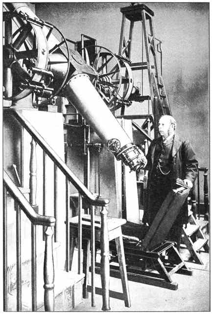
To those young friends who have attended my Christmas lectures, this little book is dedicated.
It has long been the custom at the Royal Institution of Great Britain to provide, each Christmas, a course of lectures addressed especially to a young audience.
On two occasions — in 1881 and again in 1887 — the Managers entrusted that honourable duty to me. The second course was in the main a repetition of the first, and the present little volume has been built on my notes and recollections of both.
I am indebted to my friends the Rev. Maxwell Close, Mr Arthur Rambaut and Dr John Todhunter for their kindness in reading the proofs.
ROBERT S. BALL.
Observatory,
Co. Dublin,
22 October 1889.
We can all feel that the sun is very hot, and we know that it is very big and a long way off. Let us talk about the heat first.
On a cold day it is pleasant to come into a room with a good fire, and everybody knows that the nearer you get to the fire the more strongly you feel the heat. The boy at the far end of the room may be shivering while those close to the fire are as warm as they care to be. If we could come much nearer to the sun than we actually are, we should find the heat greatly increased. Indeed, if we went close enough the temperature would rise beyond anything we could bear; we should be roasted. On the other hand we should certainly be frozen to death if we were carried much further from the sun than we are now. We are able to live comfortably because our bodies are exactly suited to the warmth the sun sends to the distance at which the earth happens to stand.
Suppose you could endure any degree of heat, and had some way of setting out on a voyage to the sun. Take with you a wax candle, a lead bullet, a penny, a poker and a flint.
Soon after you start you find the warmth from the sun increasing, and the candle begins to soften and melt away. Still you go on, and you notice the lead bullet getting hotter and hotter until it is too hot to touch, and at last the lead melts as the wax did before it. You are still a very long way from the sun, and you have the penny, the poker and the flint left.
As you draw closer to that great light the heat keeps increasing, and at last you notice the penny beginning to glow red-hot. Go nearer still and it melts away and follows the bullet and the candle. Press on, and you find the iron poker — which was red-hot when the penny melted — growing brighter and brighter, until it is a brilliant white, so dazzling that you can hardly bear to look at it. Then it too begins to melt, and the poker turns to liquid like the penny, the lead and the wax before it. A little nearer yet you may carry the flint, now glowing with the same fierce heat that melted the poker; but even the flint must yield at last, and become not merely a liquid like water but a vapour like steam.
You will ask how we know all this. Since nobody could ever make such a journey, how can we feel certain the sun is so tremendously hot? I know what I say is true for several reasons, but I will give only one, and it comes from an experiment with the burning-glass that most boys have tried.
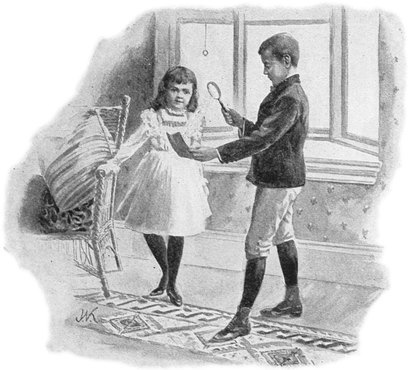
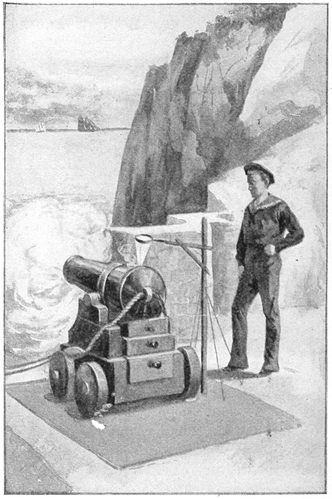
We may use one of those large lenses meant for magnifying photographs; but almost any lens will do, so long as it is not too flat, as the lenses in spectacles generally are. On a fine sunny day in summer you turn the burning-glass to the sun, and by holding a piece of paper at the right distance you get a bright spot (Figure 1). At that spot there is intense heat: you can light a match with it, explode gunpowder, or set the paper itself on fire.
The broad lens gathers up the rays that fall on it from the sun and concentrates them at one spot, which therefore becomes hot and bright. If we merely used a flat piece of glass, the sunbeams would go straight through; they would not be gathered together, and they would not be strong enough to burn the paper. The lens, you see, is not flat: its faces are curved, and this gives them the power of bending rays of light and heat inwards, so as to unite their effect at the one point we call the focus. When a great many rays are collected on the same spot, each of them adds its own little share of warmth.
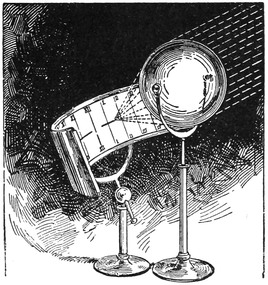
Some ingenious person turned this principle to an odd use by arranging a burning-glass over a cannon in such a way that, just as noon arrived, the spot of light would reach the touch-hole and fire it off. The sun is thus made to announce the middle of the day itself (Figure 2).
Another application of the burning-glass is to keep a record of how many hours of sunshine there are each day. You will understand the apparatus from Figure 3; here the lens is replaced by a glass globe, which acts as a burning-glass. As the sun moves across the sky the bright spot of light moves too, and burns its track along a sheet of paper ruled with lines corresponding to the hours. When the sun is hidden by cloud the burning stops. So by keeping each day's piece of paper we have an unerring tell-tale, which shows us during which hours the sun was shining brightly and during which he was hidden. You see that the burning-glass is not merely a toy; it can be made useful in teaching us something about the weather.
Another experiment with the burning-glass will teach us something more. Take a candle, and from its flame you can get a bright point at the focus. It may fall on your hand and you can hardly feel it, and you will readily believe that the focus is nothing like as hot as the candle. Even when a burning-glass is held in front of a bright fire there is comparatively little heat at the focus. By using a lens to concentrate the beams of an electric lamp, Professor Tyndall has shown how to set light to a piece of paper and produce many other effects; but even so, the focus is nothing like as hot as the arc between the two glowing carbons. You might move your finger through that focus without much inconvenience, but I would not advise you to trust your finger between the poles of the electric light itself.
The temperature obtained at the focus of a burning-glass seems always, then, to be lower than the temperature of the source of heat itself. This will be equally true when we turn a burning-glass on the sun; and so we know that the sun must be hotter than any heat that can be got with the biggest burning-glass on the brightest of summer days. But burning-glasses a yard wide have been made, and astonishing heat effects have been produced with them. Steel has been melted by the sunbeams, and so have other substances that even our greatest furnaces cannot fuse. The sun must therefore have a higher temperature than molten steel — higher, indeed, than any temperature we can produce on the earth.
I have tried to prove to you that the sun is very hot; but it would be as well to see what might be said on the other side. It is often by considering objections that we learn. So I shall tell you of a difficulty that was once raised when I was trying to explain the heat of the sun to an intelligent man.
"I am sure," said my friend, "that you must be quite wrong. You said that the nearer you got to the sun the hotter it would be; but I know this to be a mistake. When tourists go to Switzerland they sometimes climb very high mountains. The top of a mountain, of course, is nearer the sun than the bottom; so if the sun were really hot, the climber ought to find it much warmer on the summit than at the base. But everyone knows there is abundant ice and snow on the lofty Alpine summits, while down below in the valleys the weather may at that very moment be exceedingly warm. Does it not seem, then, that the nearer we get to the sun the colder it is, and the further off we are the warmer?"
But my friend was quite wrong in his argument. The coldness of the mountain tops depends on something he had not taken into account. There is something besides the sun that helps to make us warm and comfortable, and that something is more or less lacking at great heights.
You know that we live by breathing air, and that we find air wherever we go, over land and sea, all round the earth. People who go up in balloons are carried up by the air, which shows that the air extends for miles and miles over our heads — though it grows lighter and thinner the higher you go.
We do not only use the air for breathing; it does us another indispensable service. It acts as a blanket to keep the earth warm. Indeed, we ought rather to describe the air as a pile of blankets, one laid over another. These air blankets let the earth keep the heat it receives from the sunbeams, by preventing it escaping back into space. So the warmth is held in, and our globe is made fit to live on.
You see, then, that for our comfort we need not only the sun to give us the heat but the set of blankets to keep it once we have got it. If we threw off the blankets we should be uncomfortable, though the sun shone just as brightly as before.
A man who climbs to the top of a mountain at midday does get somewhat nearer the sun, and so far as that goes he ought no doubt to feel warmer — but the gain is far too small to be worth thinking about. Even at the top of Mont Blanc the increase of heat due to the approach to the sun would be only one ten-millionth part of the whole. That would be utterly imperceptible; not even a thermometer would be delicate enough to show it.
On the other hand, by climbing the mountain he has got above the lower regions of the air. He has not, it is true, reached even halfway to the upper surface of it — that is still very far over his head — but the higher layers of the atmosphere are so very thin that they make most indifferent blankets. The Alpine climber on the summit has therefore thrown off the best part of his blankets and taken a chill, while the heat he gains by his closer approach to the sun is imperceptible. Perhaps you will now be able to understand why perpetual snow lies on the tops of the great mountains. They are chilled because they have not so many air blankets as the snug valleys beneath.
The brightness of the sun is among the most wonderful things in nature, and there are three points I want you to remember; then you will indeed agree with Milton that the sun is "with surpassing glory crowned."
First, think of the beauty and brilliance of a lovely day in June. Then remember that all this flood of light comes from a single lamp at a most tremendous distance. And thirdly, recollect that the sun is not like a bull's-eye lantern concentrating all its light for our particular benefit: he spreads it equally in every direction, and we on this earth do not receive the two-thousand-millionth part of what he pours out so lavishly. When we think of the brightness of daylight, and of the distance the light has come, and that nature has fitted no vast lenses to aim it in our direction, we begin to understand the sun's true magnificence.
I want to show you how great our gratitude to the sun ought to be. On a bright summer's day, when we are revelling in the warmth and enjoying the gladness of the sunshine, no words are needed to convince us of the usefulness and the kindness of sunbeams. So we will not take midsummer. Let us take midwinter.
Take this very Christmas season, when the days are short and cheerless and the nights are long and dark and cold. We might be tempted to think the sun had nearly forgotten us. It is true that he seems to pay us only occasional visits, and that between fog and cloud we in England see little enough of him. But visible or invisible, the sun tends us without ceasing, and provides for our welfare in ways we do not always remember.
Let me give you an illustration of what I mean. You will go back this dull cold afternoon to the happy home where your Christmas holidays are being enjoyed. It will be quite dark before you get there, for the sun sets so very early on these wintry days. You will gather round a cheerful fire. The curtains will be drawn, the lamps lit, and the disagreeable weather outside forgotten in the warmth and light within. Five o'clock has come, the pretty wicker table has been set beside your mother's chair, and on it are the cups and saucers and the fancy teapot. Under the table is a little shelf with some tempting cakes and a tender muffin. Two or three welcome friends have joined the little group, and a delightful half-hour is certain to follow.
But you may say: "What have tea and muffins, lamps and fireplaces, to do with the sun? Are they not all artificial contrivances, as far removed as possible from sunbeams and the natural beauties sunbeams create?" Well — not so far, perhaps, as you may think. Let us see.
Poke up the fire; and while it is throwing out that delicious warmth and that charming flickering light, let us try to find out where the light and the heat have come from. No doubt they have come from the coal. But then, where did the coal come from?
It came from the mine, where brave colliers hewed it out deep underground, and then it was hoisted to the surface by steam engines. Our inquiry must not stop there, for another question arises at once: how did this wonderful fuel get into the earth in the first place?
When we examine coal carefully, using the microscope to see its structure, we find that it is not like a stone. It is made of trees and other plants, whose leaves and stems can sometimes still be recognised. Indeed, the fossil trunks and roots of great trees are occasionally conspicuous in a coal-pit. It is quite plain that these are the remains of a vegetation that was once growing and flourishing; and on further inquiry we learn that coal must have been produced in the following way.
Once upon a time a great forest flourished. The sun shone down on it, and kindly showers watered it, and insects and other creatures sported in its shade. The trees and plants were not like those we see about us now; they were more like ferns and mare's-tails and gigantic club-mosses. In the fullness of time they died, and fell, and decayed, and others sprang up to meet the same end. So it came about that over the ages the remains of leaves and fruits and trunks piled up over the soil.
The forest stood near the seashore; and then a remarkable change took place — the land began slowly to sink. You need not think this impossible. Land has often been known to change its level gradually. In fact, a sinking is going on slowly at this moment in many places on the earth, while in other places the land is rising.
As the forest sank lower and lower the sea-water began to flood it, and all the trees perished, until at last deep water covered the surface where a fine forest had stood. At the bottom of that sea lay the decaying vegetation.
And what had destroyed the growing forest turned out to be the means of preserving its remains. Then as now, the rivers ran into the sea, and the river water — especially in times of flood — carried clay and mud down with it, held in suspension. This material was slowly laid down on the floor of the ocean, and so a coating of mud came to overlie the remains of the forest. In the course of ages these layers grew thick and heavy and hardened into a great flat rock, while the trunks and leaves underneath were squeezed together by the weight and packed into a solid mass, which turned black and in time was transformed into coal.
After ages and ages had gone by, the bed of the sea stopped sinking and began slowly to rise. The water over the newly made layers of stone grew shallower, and at last the floor was lifted until it came up out of the sea. Of course it was not the original ground that formed the surface of this newly uncovered land: the sheets of hardened clay lay on top. Over that fresh surface life gradually spread, until at length man himself came to live there — while far beneath his feet the remains of the ancient vegetation lay buried.
When we now dig down through the rocks we come upon the pieces of trees and other plants which time and pressure have turned from leaves and wood into our familiar coal.
That ancient forest grew because sunbeams were plentiful in those early times and nourished a luxuriant vegetation. The heat and light the sun spent so freely then were caught by the leaves of those flourishing plants and stored away in their stems and foliage. And so the ancient sunbeams have been kept in our coal-beds for uncounted thousands of years. When we put a lump of coal on the fire this evening, and it gives out its welcome warmth and cheerful light, it is only giving back to us some of that store of preserved sunshine of which our earth holds so great a treasure. The sun has therefore contributed very materially to our comfort: it has provided the fire that keeps us warm.
The orb of day has done more for our tea party than that, however — for has he not produced the tea itself? The tea grew a long way off, most likely in China, where the plant was ripened by the warmth of the sunbeams. From China the tea-chests were brought to London by a sailing ship, and the ship made that long voyage by means of sails, blown by what we call wind — which is merely great volumes of air hurrying from one part of the earth to another.
We may ask what makes the air move, for it will not rush about like that unless there is considerable force to drive it. Here again we see the influence of the sun. Tracts of land are warmed by the sunbeams; the air takes up the heat from the land; the warm air is buoyant and rises, and cooler air flows in continually to take its place. To do that it must of course rush across the country — and there is your wind. All the air currents on our earth are therefore due to the sun.
You see, then, how greatly we are indebted to our brilliant luminary for the pleasure of our tea-table. The sun has not only given us the coal and the tea; he actually provided the means by which the tea was carried all the way from China to our own shores.
We can trace the connection between the hot water and the sun as well. The water came immediately from the kettle, and the kettle was heated on the fire, and the fire was made of sunbeams; so it is the warmth of the sun that has made the water boil.
If you visit the waterworks you will see great reservoirs. Some have been filled by a river; sometimes the water is pumped up from a deep well in the ground; sometimes it is surface water caught on a mountainside. But whatever the immediate source of our water supply, the real origin is to be looked for not in the earth beneath but in the heavens above. All the water we use day by day has come from the clouds. It is the clouds that sent down the rain — or sometimes the snow, or the hail — and it is this water from the clouds that fills our rivers. It is this water, too, that sinks deep into the earth and supplies our wells. So from whatever source the water may seem to have come, it is really the clouds that have been our benefactors. The water in your teacup tonight was, a little while ago, in a cloud floating far overhead in the sky.
We may look a little further still and ask where the clouds have come from. Clouds are certainly nothing but a form of steam, of water vapour; and since they are for ever sending rain down on the earth, there must be some means of replenishing their supply. Here again our excellent friend the sun is to be found helping us — secretly, if not openly. He pours his rich warm beams down on the great oceans, and the heat turns some of the water into vapour, which, being lighter than air, climbs upwards for miles. There the vapour often passes into the form of cloud, and the winds carry the clouds away to refresh the thirsty lands of the earth.
So you see it is the sun that fetches us water from the great oceans covering so much of our globe, and sends it on by the winds to supply our waterworks and fill our teapots. And notice another little kindness of our great benefactor. The water of the oceans is quite salt, and we could not make tea with salt water; so when the sun lifts the vapour from the sea, he most thoughtfully leaves all the salt behind, and provides us with the purest of fresh water.
That nice muffin was baked by the sun, toasted by the sun, and made from wheat grown by the sun. If the wheat was ground in a windmill, then the sun raised the wind that turned the mill. Perhaps the flour-mill was driven by steam — in which case the sun, long ago, provided the coal for the boiler. The miller might have lived by a river and used a water-mill; but if he did, then here again it was the sun that actually did the work, for the sun raised that water to the clouds, and after it had fallen as rain and was on its way back to the sea, its descent was put to use turning the water-wheel. The water gets its power to turn the mill from the fact that it is running downhill; but it could not run down unless it had first been carried up. So it is indeed the sun that drives the water-wheel.
Nor can the baker do without the sun's help even if he rejects windmills and steam-mills and water-mills alike, and determines to grind the corn himself with a pestle and mortar. Here, at least, you might think it is a man's own sinews and muscles doing the work — and so it is. But you are mistaken if you think the sun has given no indispensable help. The sun has provided the power that moves the baker's arms just as surely as it raised the wind that turned the windmill. The force exerted in grinding with the pestle came from the food the man has eaten; that food was grown by the sun, and the man got from the food the energy the food had got from the sun's heat. So look at it whichever way you please: even for the grinding of the wheat for the muffin at your tea party, you are wholly indebted to the sun.
It is the sun that has bleached the tablecloth to that snowy whiteness. The sun has given the bright colours that look so pretty in the girls' dresses. With how much meaning we can say, and feel, that light is pleasant to the eye — and what prettier name than Little Sunbeam could we have for the darling child who makes our home so bright?
The sun is a very long way off. It is not easy for you to imagine so great a distance, but if you want to learn astronomy you must make the attempt. This is the first measurement we shall have to make on our way to that far-off country called Star-land; and long as we shall find it to be, we shall have to deal later with distances very much longer.
When you are out in the street, or taking a walk in the country, you can see at once that this man is near, or that house is far, or that mountain is many miles away. This is because you have other objects in between to help you judge. You see, for instance, that there are a number of houses and farmyards, and you notice hedges dividing one field from another between you and the mountain. You see woods and parks too, and perhaps stretches of moorland running up the slopes. You have a sense of how big farmyards and fields are, and of how wide woods and moors are; and putting all this together you realise that the mountain must be miles away.
But when we look at the sun we have no such conveniently placed helps for judging his distance. There is nothing in between, and merely gazing at the sun tells us very little. We must go to the astronomer and ask him how far off he has found the sun to be — and then beg from him some explanation of the method he used in making the measurement.
It has been found that the sun is on average about ninety-three million miles from the earth, though sometimes it is a little further and sometimes a little nearer.
Let us first try to count 93,000,000. The easiest way is to get the clock to do it for us, and here is a sum I would suggest you work out. How long will the clock have to tick before it has made as many ticks as there are miles between the earth and the sun? Every minute the clock makes 60 ticks, and in 24 hours the total comes to 86,400. Divide that into 93,000,000 and you will find that more than 1076 days — nearly three years — would be needed for the clock to finish the task.
We may look at it another way, and ask how long an express train would take to go all the way from the earth to the sun. Suppose the train travels at 40 miles an hour. Running for a whole day and a whole night without stopping, it would cover 960 miles; in a year it would cover 350,400 miles; and dividing that into 93,000,000 we reach the conclusion that a train at 40 miles an hour would have to travel not merely for days, nor for weeks, nor even for years, but for centuries. Not until 265 years had gone by would the mighty journey be over. Even if King Charles I had been present when the train began to move, it would not have arrived yet. Nobody who set out on that train could expect to see the end of the trip. That would not come until the time of his great-great-grandchildren.
I shall have to speak so often of the distances of the heavenly bodies that I may as well explain, once for all, how we have been able to find out what those distances are. It would be a very puzzling business if we tried to describe it fully, but the principle of the method is not at all difficult.
Do you know why you have been given two eyes? One of the reasons, undoubtedly, is to help you judge distances. You see that this boy (Figure 4) judges the distance of his finger by how far his two eyes have to turn inwards to look at it. In much the same way we judge the distance of a heavenly body by making observations of it from two different stations.
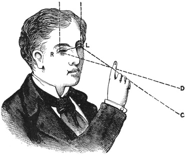
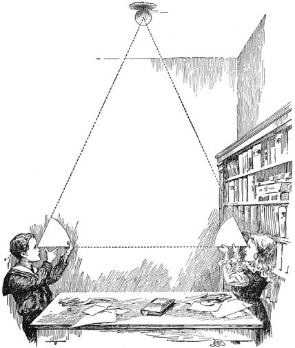
I shall illustrate our method of measuring the real distance of a body in the heavens by showing you how we can find the height of that large india-rubber ball hanging from the ceiling. I do not, of course, intend to run a measuring tape up to the ball, because I want to solve the problem on the same principle by which we measure the distance of the sun, or of any other heavenly body we cannot reach.
I will ask the help of a boy and a girl, who will please stand one at each end of the lecture table. The apparatus we need is very simple: two cards and a pair of scissors. The boy will kindly cut his card to such an angle that when he holds it to his eye, one side of the angle points straight at the little girl and the other points straight at the ball, just as you see in the picture (Figure 5). The girl will please do the same with her card, so that along one side she just sees the little boy's face while the other side points up to the ball.
These angles must be cut properly. If the angle is too big, then when one side points at the boy's face the other will be directed above the ball; if it is too small, one side will be directed below the ball while the other points at the boy. The whole accuracy of our little observation depends on cutting the card angles correctly.
When they have been truly shaped, it is easy to find the distance of the ball. We first take a foot rule and measure the length of our table from one of our young friends to the other. That length is twelve feet. To find the distance of the ball we must now make a drawing.
We take a sheet of paper and rule a line twelve inches long, which will stand for the length of the table — each inch of the drawing standing for a foot of the real table. Mark the end where the girl stood B, and the boy's end A. Now bring the cards and lay them on the line, just as the figure shows. The girl's card is placed with its corner at B and one edge along BA; the boy's card with its corner at A and one edge along AB. Next, with a pencil, we rule lines along the other edges of the cards, taking care to hold them in position all the while. Carried on, these two lines meet at C, and that must be the position of the ball on the scale of our little sketch. It only remains to take the foot rule and measure the length from A to C on the drawing. I find it to be twenty inches — and I have so arranged matters that the distance from B to C is the same.
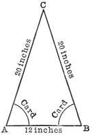
I do not mean to trouble you much with Euclid in these lectures; but as many of my young friends have learnt the sixth book, I will just mention the well-known proposition which tells us that the corresponding sides of two similar triangles are proportional.
We have two similar triangles here. There is the big one, with the boy at one corner, the girl at another and the ball overhead; and here is the small one we have just drawn. They are similar because they have the same angles — and it was to make sure they had the same angles that we were so careful in cutting the cards. Since the two triangles are similar, their sides must be proportional. We agreed that the line AB, twelve inches long, should represent the length of the table between the little boy and girl. So the distance AC must, on the same scale, be the distance between the ball and the boy at the end. On the drawing that is twenty inches; and therefore the real distance from the end of the table to the ball is twenty feet.
So you see that without going up to the ball, or running a string down from it, or making direct contact with it in any other way, we have been able to find out how high in the air the ball actually hangs. This simple illustration explains the principle of the method by which astronomers learn the distances of the various heavenly bodies from the earth. You must think of the sun, the moon and the stars as globes supported somehow over our heads, and we set out to discover their distances from measurements of angles made at the two ends of a base-line.
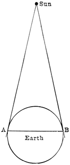
Astronomers must of course choose two stations far more widely separated than the ones in our little experiment. Indeed, the greater the interval between the two stations, the better. They need a much greater distance than from one side of this room to the other, or from one side of London to the other. If it were merely a balloon we were looking at, then when one observer on one side of London and another on the opposite side had shaped their cards carefully, we should be able to work out the height of the balloon quite easily. But the sun is so much further off than any balloon could ever be that we must separate the observers far more widely. Even the breadth of England would not be enough, so we must set them further and further apart until they are as widely divided as any two people on this earth can be.
One astronomer takes his position at A (Figure 7) and the other at the opposite side, at B, so that both can see the sun. They must use a far more accurate way of measuring the angles than cutting cards with scissors; and since the astronomer at A cannot see his friend at B, measuring the angles accurately is no easy matter. But we need not trouble ourselves with those difficulties now. It is enough for the present to know that the angles are measured with delicate and very accurate instruments. Nor do the astronomers make a little sketch such as served our purpose; they make a calculation, which is a far more accurate way of arriving at a true measurement.
The astronomers know the size of the earth, and so they know how many thousands of miles lie between the two stations where the observations are made. That distance plays the same part in their calculation as the length of the table did in our sketch. From each end of the line they set off an angle, just as we did; and the astronomer must use the principle of similar triangles out of Euclid, just as we had to. At last, having calculated the sides of their triangle, they obtain the distance of the sun.
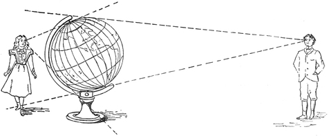
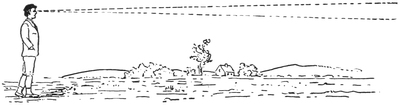
I ought to explain here a principle that anyone learning about the stars must always keep in mind: the further off a body is, the smaller it looks.
Perhaps this will be clear from the little sketch alongside (Figure 8). It shows a great globe, with oceans and continents marked on it, and a little boy and a little girl looking at it. The girl stands quite close, and I have drawn two dotted lines from her eye, one to the top of the globe and one to the bottom. If she wants to examine the whole of the side of the globe she can see, she must first look along the upper dotted line and then turn her gaze downwards until she reaches the lower one; and having to move her eyes so far up and down, she will think the globe very big — and she will be quite right.
The boy, as you see, is on the other side of the globe, but I have put him much further off than the girl. I have drawn two dotted lines from his eye to the globe as well, and it is plain that he will not have to move his head much up or down to see the whole of it. He can take it in at a glance, and so to him the globe will seem comparatively small, because he is far enough away from it. The further off he is, the smaller it will look.
You can easily imagine that if the globe were far enough away, the two lines taking in the whole of it would be like those in Figure 9, where the globe is so distant that it cannot be shown in the picture at all. The apparent size of the globe — which is really measured by the angle between those two lines — grows smaller and smaller as the distance grows greater. Now you can understand why an object seems smaller the further off it is; and indeed, when it is far enough, it stops being visible at all.
I could give you many illustrations of size dwindling with distance, and no doubt so could you. Every boy knows that his kite looks smaller and smaller the more string he lets out. I once saw in the west of Ireland a bird that seemed a mere speck high up near the clouds; but from its flight and other circumstances I knew that the speck was no little bird. It was a great eagle, dwarfed by the height it had soared to.
It is in astronomy that we find the best illustrations of this principle. Enormous objects seem small because they are so very far off. You must always remember, then, that although a thing may look small, the appearance may be pure delusion. It may be that the object is very big but very distant. In astronomy that is almost always the case — there is so much room above us, around us, on every side in space.
Look up at the ceiling. It certainly does not bound space, for there is another side to it; and then there is the roof of the house. But the roof is no boundary either, for above it is the air, and higher up still the clouds; and so we can carry our imagination on and on, through and beyond the air, up to where the stars are, and still on and on. And since there is unlimited room, the heavenly bodies take advantage of it, and are generally at distances so gigantic that however small they may look, their smallness is nothing but deception.
Let us try to bring home the sun's extreme remoteness another way. Imagine you were on the sun and took a look at our earth from that distance. To find out what we should expect to see, let us think about a balloon voyage.
If you went up in a balloon you would at first see only the houses and the objects immediately about you; but as you rose, the view would widen and widen. You would see that London was surrounded by countryside; and then, as you soared higher, the sea would come into view and you would be able to trace the coasts east and west and south. If somehow you could go higher than any balloon could carry you, the whole of the British Isles would presently lie spread out beneath you like a map. Higher and higher, and the continent of Europe would gradually open out, until at last the great oceans and even other continents came into sight — and then you would see that our whole earth is indeed a globe.
The higher you went, the less distinctly you would be able to make out the details on the surface. At last the outlines of continents and oceans would fade, and you would begin to lose any sense of the shape of the earth itself. Long before you had reached the distance of the sun, the earth would look merely as the planet Venus looks to us now.
It is instructive to consider how small our earth would seem if we could view it from the sun. Think of that very familiar little globe, a lawn-tennis ball, which is two and three-quarter inches across. Now suppose a tennis ball were on the opposite side of the street, or further off still — suppose it were half a mile away. What could you expect to see of it? And yet the earth, seen from the sun, would look no bigger than a tennis ball looks from half a mile.
We have spoken of the heat of the sun, how hot he is, and of the distance of the sun, how far off he is. Now we must say a little about his size, and about his shape.
It is plain that the sun is round — that it has the shape of a ball. We are sure of this because although a plate is circular, if it were held so that we saw it edge-on from a distance it would not look round at all. The sun is always turning, and it always looks like a circle; so we are certain that its true shape must be globular, and not merely circular like a flat plate.
In the middle of the day, when the sun stands high in the heavens, it is impossible for us to form any notion of his size. People will make very different estimates of how big he looks. Some will say he looks as large as a dinner plate — but such statements mean nothing unless we say where the plate is to be held. If it is near the eye, the plate may of course hide the sun, and everything else besides. If the plate were about a hundred feet away it would often hide the sun. If it were more than a hundred feet away it could not hide the sun completely; and the further off the plate, the smaller it would seem.
There is no way of judging the sun's size while he stands high in the heavens. But when he is rising or setting we see him pass behind trees or mountains, so that there are objects in between to compare him with; and then we have actual proof that the sun must be a very large body indeed.
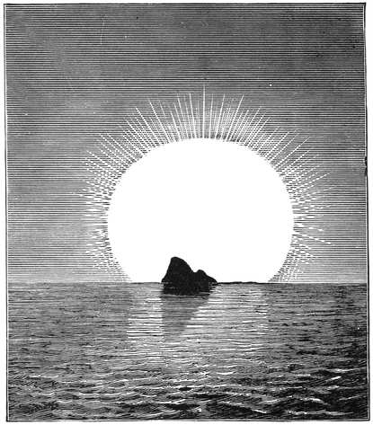
Here is a picture by Marcus Codde, taken from the French journal l'Astronomie, which gives a charming illustration of a sunset at Marseilles (Figure 10). If you want to see for yourself that the sun is bigger than a mountain, you may go to the top of Notre Dame de la Garde — but you must choose either the 10th of February or the 31st of October for your visit, because it is only on those evenings that the sun sets in the right position.
On both those evenings the sun sinks directly behind Mount Carigou in the Pyrenees. That mountain is a long way from Marseilles — no less than one hundred and fifty-eight miles. But it is so lofty that when the sky is clear the summit can be seen distinctly against the sun as a background, in the way the picture shows. It must be a very pretty sight, and it teaches us an important lesson. The sun is further away than the mountain, and yet you see the sun on both sides of the mountain and above it as well. Here, then, we learn without any calculation at all that the sun must be bigger than the upper part of a great mountain in the Pyrenees.
When we work out the size of the sun from the measurements astronomers have made, we discover that he is a great deal bigger than Mount Carigou. We find that the entire range of the Pyrenees, the whole of Europe, and indeed our whole globe are insignificant by comparison.
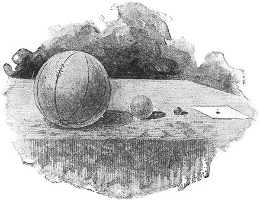
There is a football on the table, shown in Figure 11. We shall let it stand for the sun, and now we must choose something to stand for the earth — but we must get the proportions exactly right.
A tennis ball will not do; it is far too big. The fact is that the width of the earth is less than the hundredth part of the width of the sun, whereas the tennis ball is a quarter the width of the football. So we must choose something a good deal smaller. I try a marble, even the smallest marble I can find; but on measuring it I find that a hundred such marbles laid side by side would be far longer than the width of the football. I must look for something smaller still. A grain of small-sized shot gives the right size for our model of the earth: about a hundred of those grains laid side by side will stretch to the width of the football.
Now you will be able to form some idea of how enormous the sun really is. Think how big this earth is when we begin to travel about it. What a tremendous voyage it is to New Zealand — and even then we have only gone halfway round the globe. Then consider that the sun is bigger than the earth in the same proportion as that football is bigger than that grain of shot.
If a million such grains of shot were melted down and cast into a single globe, it would still not be as large as that football. If a million globes the size of our earth could be joined together, they would no doubt make a vast globe, but not one as large as the sun. Think of a single house with three or four people living in it, and then think of this mighty London with its millions of inhabitants. The house stands for our earth, and great London for the sun.
I have shown you that the sun is intensely hot, and a very long way off, and enormously big. Now we must describe what the surface of the sun looks like when we examine it closely.
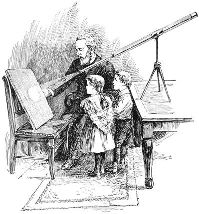
If you take a piece of very dark glass, or smoke a piece of glass over a candle, you can look straight at the sun in comfort. A nicer plan is to prick a pinhole in a card and look at the sun through that, which is no trouble at all. Generally speaking, a view of the sun this way will show you nothing but a uniformly bright surface.
To study the face of our great luminary carefully you must use the help the telescope gives the astronomer. A very good way of doing it is shown in Figure 12. A small telescope fixed on a stand is pointed at the sun; the eyepiece is drawn out rather further than for direct observation, and the sun then draws its own picture on a screen. This can be examined without any inconvenience and without any protection for the eye, and a number of young astronomers can all look at the sun at the same moment.
On such a picture you will generally see the brilliant surface marked with dark spots, sometimes as many of them as in the case shown in Figure 13. These spots look very different according to circumstances. One of them, seen through a very powerful telescope, showed the wonderful structure represented in Figure 14.
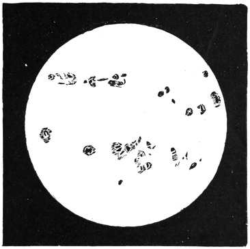
The visible surface of the sun is made entirely of intensely heated vapours. We might almost say that the spots are holes, through which we can look past the brilliant surface to the darker parts inside. Sometimes the spots close up and fresh ones open elsewhere. Now and then the whole surface is mottled over in a remarkable way. Here is a picture taken from Mr Nasmyth's beautiful drawing, in which he shows how the sun sometimes takes on the appearance that has been likened to willow leaves (Figure 15). This was very noticeable in the great spot of September 1898.
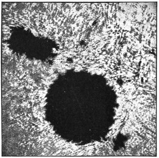
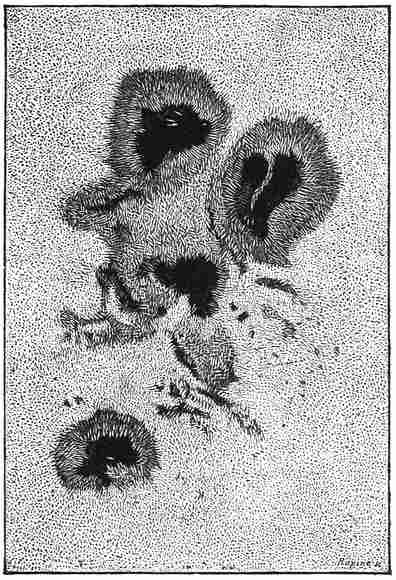
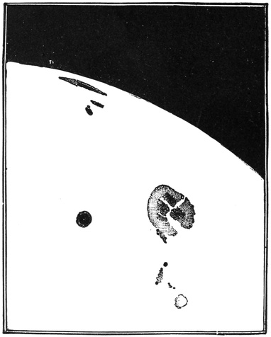
The spots often last long enough to demonstrate a remarkable fact. We must remember that the sun is a great globe, poised freely in space. There is nothing to hold it up, and nothing to stop it turning round. That it does turn round we can prove by careful observation of the spots.
I can best show what I mean by Figure 17, which gives six imaginary pictures. The first represents the sun on the 1st of the month; the next shows it five days later, on the 6th; another is five days later still, on the 11th; and so on to the last picture, which is the 26th. You see that on the first day there is a spot near the left edge. By the 6th that spot is near the middle; by the 11th it is near the right edge; then you cannot see it at all on the 16th or the 21st; but on the 26th it is back in the same place it started from. We find other spots have a similar history. They seem to move across the face, and then to come back, in a little less than four weeks, to the place where they were first noticed.
These appearances can be illustrated very simply. Cut a small hole through the rind of an orange, down to the white skin underneath, and darken it with ink. Put a knitting needle through the axis of the orange and turn it slowly round. The spot will go through exactly the changes we have seen: it starts near the left, moves across the face, then passes out of sight by going behind the globe, until it reappears again having travelled round the back.
Since the same can be seen with every spot that lasts long enough, we learn that the changes of place must be produced by the turning of the sun. Here, you see, is the way an astronomical discovery is made. We first observe the fact that the spots always appear to move. Then we try to account for it, and find a very simple explanation by supposing that the whole sun, spots and all, turns steadily round and round. It can also be proved quite conclusively that no other explanation is possible.
This rotation of the sun goes on uniformly all the time, and some curious consequences follow from it. The view of the sun turned towards us today is quite different from the one that faced us a fortnight ago, or the one we shall see a fortnight hence. There is no actual or visible axis about which the sun turns; in that the sun is like the earth and the other heavenly bodies.
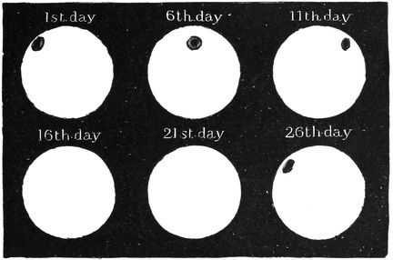
For a great deal of our knowledge about the sun we are indebted to the moon. It sometimes happens that the moon comes between us and the sun and produces an eclipse. At first you might think an eclipse could only have the effect of preventing us seeing anything of the sun at all; but in fact it reveals the most beautiful and interesting objects, whose existence we should otherwise know nothing about.
The great luminary has curious appendages which are quite hidden in ordinary circumstances. In the full glare of day the dazzling splendour of the sun blots them out, for they shine with a comparatively feeble light. It fortunately happens that the moon is just large enough to cut off the whole of the direct light from the sun — or rather, I should say, from the central parts of the sun. Around that central and more familiar part, from which the brilliance chiefly comes, is a remarkable fringe of delicate and beautiful objects. They are no doubt self-luminous, but with a light so feeble that amid the full blaze of sunlight they are invisible. When the moon so kindly stops all the stronger beams, these faint objects spring into view, and we have the exquisite spectacle of a total eclipse. The ones I want to mention particularly are the corona and the prominences.
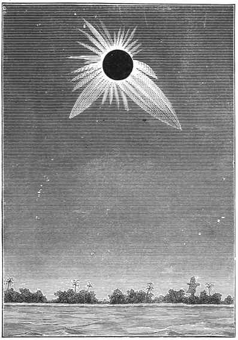
Here is a pretty picture of the total eclipse of the sun of 6 May 1883 (Figure 18). It is taken from a drawing by M. Trouvelot, who was sent out with a French observing party. They went a very long way to see an eclipse, but what they saw repaid them for all the trouble.
The track along which the eclipse could best be seen lay in the Pacific Ocean, and a place had to be chosen where the sun would be high in the heavens at the critical moment and where totality would last as long as possible. So they went to Caroline Island — and this whole journey to the other side of the earth was made to witness something that lasted five minutes and twenty-three seconds.
Short as those precious minutes were, they were long enough for good work to be done. Careful preparations had been made so that not a moment should be wasted. Each member of the party had his own special duty, and it had been rehearsed so carefully beforehand that when the long-awaited moment of "totality" came there was neither haste nor confusion; everyone went calmly through his part of the programme.
M. Trouvelot, for instance, spent two minutes and a few seconds making the sketch we are looking at now. No doubt an accomplished astronomical artist like M. Trouvelot would gladly have taken longer over so unique a sight, but brevity was imperative. He had experience of earlier eclipses, so he was ready at once to note what needed noting, and this picture is the result. It was finished in less than half the duration of totality, and the artist still had three minutes left to give to another and quite different part of the work, which does not concern us here.
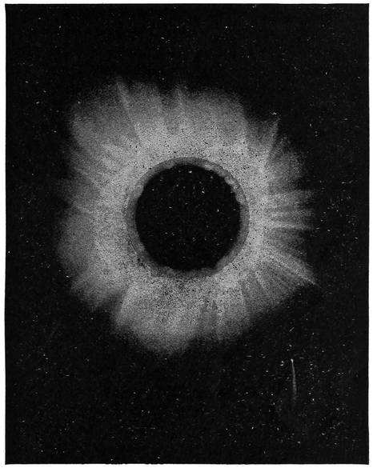
I want you to look particularly at these long branches, these projections, that we see surrounding the sun when it is totally eclipsed. They shine with a pearly light; it is stated that even during the gloomiest part of the eclipse there was still as much light as on a bright moonlit night, and all of it came from this glorious halo round the sun, which astronomers call the corona.
In ordinary circumstances we get not the slightest glimpse of it. Even during a partial eclipse it stays invisible; but the moment the moon covers the sun completely, so as to cut off all the direct light, the corona springs into view. It is always there, no doubt, though we cannot see it.
One of the most interesting photographs of an eclipsed sun ever taken was Professor Schuster's, in 1882 (Figure 19). The corona shows well — and so does a comet.
The other appendages of the sun that can be seen during an eclipse are the objects we call the prominences. They are ruddy in colour and seem to be great flames leaping upwards from the glowing surface below.
Although the prominences were first discovered by seeing them during eclipses, we are fortunately no longer wholly dependent on eclipses for observing these remarkable objects. It is true that we may look at the sun with the biggest and most powerful telescope in the world and still see nothing of them: we need the help of a special instrument called the spectroscope to make them visible. But I am not going to describe that ingenious contrivance now; I shall only speak of the results obtained with it. And here again we shall take advantage of M. Trouvelot's skill for a picture of two of these wonderful appendages.
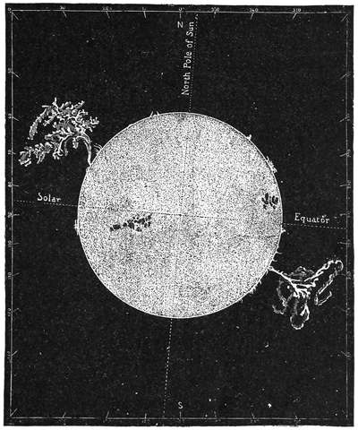
The view (Figure 20) shows the ordinary aspect of the sun, varied with groups of dark spots. The fringe around the edge of the globe is made of a ruddy material, and forms the base of the flames that rise from the glowing surface. No doubt these flames are often present on the face of the sun as well, but we cannot see them against so brilliant a background; they are only visible when they stand out against the sky behind.
At two points of this ruddy fringe — which happen, curiously enough, to be nearly opposite each other — two colossal flames have burst out. They reach to a vast distance, quite one-third of the width of the sun.
You can judge the violence of these outbreaks from the remarkable changes going on in them all the time. These great flames may indeed be said to flicker; only, considering their size, we must allow them a little more time than we should for flames of ordinary dimensions. The great flame on the left was plainly already fading when it was first seen. In a quarter of an hour it had broken into fragments, some of which could still be seen floating in the sun's atmosphere. Ten minutes more, and its light had almost entirely gone. Surely these are changes of extraordinary rapidity, when we remember the size of the thing: this prominence was nearly 300,000 miles high — about thirty-seven times the width of our earth.
Great as these prominences are, others have been recorded that are larger still. One has been seen to rush upwards at 200,000 miles an hour — more than two hundred times the speed of the swiftest rifle bullet.
The sun is bright and the earth is dark. The sun gives light and heat; the earth receives light and heat. We should be in utter darkness were it not for the sun — or at least, all the light we should have, beyond our trifling artificial lights, would come from the feeble twinkle of the stars. The moon would be no use, for the brightness of the moon is merely reflected sunlight. If the sun's light were completely put out we should never see the moon again, and we should also lose from the sky a few other bodies we call the planets — Jupiter and Venus, Mars and Saturn. But the stars would be just as before, for they do not depend on the sun for their light. Indeed, we shall see later that every star is itself a sun.
Picture the earth receiving a stream of sunbeams. They fall on one half of our globe and give it the brightness of day. The other half receives no sunlight at all; it is in shadow, and there the darkness of night prevails. The boundary between light and dark is not quite sharp, for the pleasant twilight softens it a little, so that we pass gradually from day into night.
Watching the sun's progress through the day, we see him rise far away in the east, then move gradually across the heavens past the south, and in the evening sink to the west, set, and disappear. All through the night the sun is moving round the far side of the earth, lighting New Zealand and Japan and other distant countries, and then gradually working round to the east, where he starts afresh to give us a new day here.
Our ancestors, many ages ago, did not know the earth was round. They thought it was a great flat plain stretching endlessly in every direction. But they were much puzzled about the sun. They could see from the coasts of France, or Spain, or Britain that the sun gradually disappeared into the ocean, and they supposed it actually took a plunge into the sea. That would certainly quench the glowing sun; and some of the ancients used to think they could hear the dreadful hissing as the great red-hot body dropped into the Atlantic.
But here there was a difficulty. If the sun were chilled down every evening by dropping into the water hundreds of miles away to the west, how did it come up early next morning as fresh and as hot as ever, hundreds of miles away to the east? That seemed hard indeed to account for.
Some said we had an entirely new sun every day: the gods started a sun far off in the east, and after it had run its course it perished in the west, and all night the gods were busy preparing a new one for the following day. But this was felt to be such a waste of good suns that a more economical theory was proposed afterwards.
The ancients believed that the continents of the earth, so far as they knew them, were surrounded by a limitless ocean, and that away to the north there were high mountains and ice and snow which barred any approach to that ocean from the civilised world. Vulcan was the presiding deity who navigated those wastes of water, and to him was entrusted the responsible duty of saving the sun from extinction. He kept a great boat ready, so that when the sun was just dropping into the ocean at sunset he caught it, and all through the night he paddled with his glorious cargo round by the north. The glow of the sun on its voyage could even be traced sometimes in summer over the great highlands to the north — that, at any rate, was how they accounted for the long midsummer twilight. After a tedious night's rowing Vulcan came round to the east in good time for sunrise. Then he shot the sun up with such terrific force that it would carry right across the sky, and the industrious deity paddled back for all he was worth the way he had come, so as to be ready to catch it again in the evening and repeat his never-ending task.
Vulcan and his boat were a pretty way of accounting for the sun's apparent motion. The chief drawback was that it was all work and no play for poor Vulcan. There were a few other difficulties too.
Ships' captains told us that they had sailed out on the great sea, and that far from finding the ocean stretching on and on as one flat plain for ever, the water seemed to curve away — so that in fact, after sailing far enough in the same direction, they would be brought back to the place they had started from. They knew something about the north as well, and they told us there could be no such ocean as the one Vulcan was supposed in this fable to navigate. It also turned out that ships had been voyaging all over the globe, night and day, in every direction, and that no captain had ever seen the sun come down to the sea — still less met Vulcan in the course of his incessant travels.
So it was discovered that the earth could not be a never-ending flat, but must be a globe, poised freely in space with nothing holding it up. It was then thought that the change from day to night might be explained by supposing that the sun really did go round the earth, through the space beneath our feet. That is, after all, what it seems to do.
But there was a great difficulty with this explanation, which began to be felt once the size and distance of the sun were taken into account. It required the sun to have an alarming turn of speed. He would have to rush round a circle one hundred and eighty million miles across, and complete that astonishing voyage once every day.
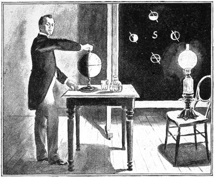
A little thought will show that a very much simpler explanation was available. It was pointed out that the sun need not go round the earth once a day at all: everything would be explained if the earth itself turned in such a way as to produce the change from day to night.
We can illustrate this with the apparatus in Figure 21. The small globe is the earth, which I can turn by the handle. The lamp will stand for the sun; and as things are set at present, the side of the earth where England lies faces the lamp and is in broad day. On the opposite side of the globe are other countries, such as New Zealand, and there it is dark. You see that by simply turning the handle I can carry England gradually round until it passes into the dark side, and night falls over the country — while at the same moment New Zealand is brought round to enjoy the smiles of day.
This is a very simple way of accounting for the succession of day and night, and it is also the true one. We have already seen that the sun turns round; now we find that the earth turns too. But the little body, the earth, goes much the faster, for it makes twenty-five turns while the sun goes round once.
Our earth is at this moment spinning at such a rate that London moves many hundreds of miles every hour. A town near the equator would be galloping round at more than a thousand miles an hour — faster, in fact, than a rifle bullet.
Don't you think we ought to notice that we are being whirled about in this terrific fashion? We know that when we are flying along in a railway train we feel the jolting and hear the noise, and we feel the blast of air if we put our heads out of the window, and we see the trees seeming to rush past. All these things tell us we are moving fast. But suppose those sensations were absent. Imagine a line laid so perfectly that no jolt could be felt and no racket heard; draw down the blinds so that nothing can be seen — how then are we to know we are moving at all?
Your grandfathers, indeed, used to enjoy just such tranquil travelling. I remember seeing in my childhood the fly-boats, as they were called, on the Royal Canal, which carried passengers from Dublin to the west of Ireland before the railway was built. A fly-boat looked like a sort of Noah's ark, drawn by a horse cantering along the towpath. In the cabin of such a vessel there was not the slightest rolling or pitching — nothing but a noiseless gliding along the canal — and nobody would have been conscious of any motion at all so long as he did not look out of the cabin window. No one was ever seasick in a fly-boat. It was the perfection of travel for those who loved ease and quiet.
The turning of the earth on its axis is, so far, like the motion of the fly-boat. It is so absolutely smooth that we feel nothing, and we only become aware of it by looking at outside objects — the sun, or the moon, or the stars. We see those bodies going through their unvarying rising and setting, just as the passengers in that quaint old conveyance could see the houses and trees going by when they looked out.
But seeing is believing; and I should like, here in this very theatre, to show you that we really are turning round. I am able to do so through the kindness of my distinguished friend Professor Dewar.
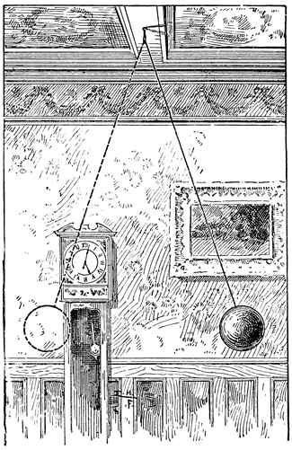
I am tempted to wish I had Aladdin's lamp for a moment, for I would rub it, and when the great genie appeared I would tell him to carry the Royal Institution, and all of us in it, to a place everybody has heard of and nobody has seen — I mean the North Pole. The experiment I am about to show you would be so easy to describe there. It is not so easy here.
But it will be near enough for our purpose to suppose we really have made the voyage, and that this, at the centre of the lecture table, is the Pole. The axis the earth turns about is then a line pointing straight up at the ceiling. This lecture table and all the rest of the theatre are going round. In about six hours it will have moved a quarter of the way; in twenty-four hours it will have gone completely round. That, at least, is what would happen if we really were at the Pole; and since we are not — the Pole being a good many miles from the Royal Institution — I must modify the statement slightly, and say that this table takes rather more than twenty-four hours to go round.
Now I want some way of proving that this is actually so. It is no use merely looking, because we ourselves, and this whole building, and the whole of London, are all turning together. What we need is something that does not share in the motion.
Here is a heavy lead ball (Figure 22). It is fastened to the roof by a fine steel wire, and you see it swings to and fro with a deliberate and graceful motion. I want it to swing very steadily, so I draw it to one side, tie it to a support with a piece of thread, and then burn the thread; and the great ball begins to swing.
It would go on for an hour, or indeed for several hours; and the peculiarity of this motion is that the swing always stays in the same direction in space. Even the turning of the earth will not shift the plane of this great pendulum — not, at least, so far as our experiment is concerned.
Here, then, is a way of testing my assertion that this theatre is turning. I mark a line on the table directly beneath the path of the ball. If we could wait an hour or so, we should see that the ball's swing appeared to have shifted to a direction at an angle to where it began. But it is really the table that has moved; the direction the ball swings in is unaltered.
We cannot wait so long, however, and so I show you the ingenious method Professor Dewar has devised. With a beam of the electric light he has managed to magnify the effect so much that in a single minute it is quite obvious that this whole room is turning with respect to the swing of the pendulum. This celebrated experiment proves, by direct inspection, that the earth must be rotating. By measuring the motion we could even calculate the length of the day — though I do not say it would be an accurate way of doing it.
The proper way to find how long the earth takes to turn round is by observing the stars. Fix on any star you please and note its position tonight; then observe the moment when the star is in the same place tomorrow, and the interval that has passed is the true length of one complete rotation. Accurately measured, it comes to 23 hours 56 minutes 4 seconds — about four minutes shorter than the ordinary day measured from one noon to the next.
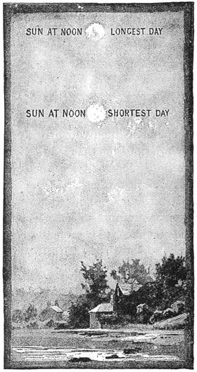
So far I have only spoken of the daily movement by which the sun appears to cross the heavens between morning and evening. We must now consider the yearly movement that gives rise to the changing seasons.
It is now Christmas, when the days are short and dark, whereas six months ago the days were long and glorious in the warmth and brightness of summer. The same round of seasons comes again every year, and so we learn that some great change alters the relation between the earth and the sun as the year goes on. We must try to explain it. Why do we enjoy warmth at one season and suffer frost and snow at another?
Notice first a great difference between the sun in summer and the sun in winter. I will ask you to look out at noon on any cloudless day, and you will find the sun at the highest point it reaches all day. All morning it has been climbing gradually from the east; all afternoon it will be sinking gradually towards the west.
Now let us make the same observation at different times of year. Take the shortest day, in December. You look out about twelve o'clock from somewhere with a view to the south, and there, as the sketch alongside shows (Figure 23), is the midwinter sun.
But now spring comes on and the days begin to lengthen. If you watch the sun you will see it pass higher and higher every noon, until Midsummer Day arrives and the noon sun stands quite high in the sky. As autumn draws on, the noon sun creeps down again, until by the time the next shortest day has come round we find it passing exactly where it did the previous midwinter. Year after year, with unfailing regularity, the sun goes through these changes. When he is high at noon we have days both long and warm; when he is low at noon we have days both short and cold.
Vulcan and his golden boat were naturally expected to explain this too. As summer came on, Vulcan shot the sun out each day with a stronger heave, so that it should climb higher and higher. His greatest effort was on Midsummer Day, when, after rowing only a little way round from the north towards the east, he launched the sun off with a terrific throw. Up it soared to the greatest height it could reach, while Vulcan hurried back to the west to be ready to catch it coming down. In midwinter, on the other hand, he came much further round, through the east to the south, and then sent the sun up with his feeblest effort — and had to paddle as hard as ever he could to finish his long return voyage inside the short day.
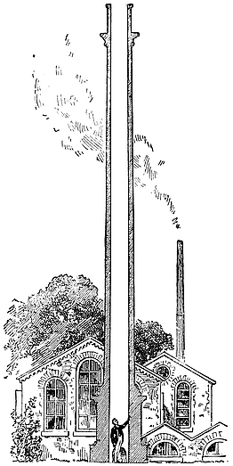
Clearly there are two quite distinct motions of the sun. First there is the daily rising and setting, which we have accounted for by showing that it is merely an appearance produced by the earth's turning. But now we have been considering quite a different motion, by which the sun seems to creep up and down the heavens — and this one takes a whole year to run through its changes.
There is still another point to consider before we can understand all these puzzling movements. We shall ask the stars to help us, through their familiar constellations.
You know, perhaps, the Great Bear, or the Plough as it is often called, and Orion. There are also Aries the Ram, Taurus the Bull, and other fancifully named groups. These constellations have been known for countless ages, and for our present purpose we may treat them as permanent patterns in the heavens which change neither their own shapes nor their positions relative to one another.
These groups of stars extend all round the sky. They are not only over our heads and on every side down to the horizon: if we could dig a deep hole through the earth and come out somewhere near New Zealand, and then look through it, we should see that there is another vault of stars beneath us as well. We stand on our comparatively little earth at what seems the centre of this great universe of stars on every side.
It is true that we do not often see the stars in broad daylight, but they are there all the same; the blaze of sunlight simply makes them invisible. A good telescope will always show them, and even without a telescope they can sometimes be seen by day in a rather odd fashion. If you can get a glimpse of the blue sky from the bottom of a coal pit on a fine day, stars are often visible. The top of the shaft is usually blocked by the machinery for hauling up the coal; but the stars may sometimes be seen up the tall chimney of a factory, when the chimney happens to be out of use and the observation can be made (Figure 24).
The point is that the long tube screens the eye completely from the direct light of the sun. The eye then grows more sensitive, and the feeble light of the stars can make its impression and produce vision. From all these lines of reasoning we see there can be no doubt that stars are continuously present above us and around us and below us, on every side, and at all times.
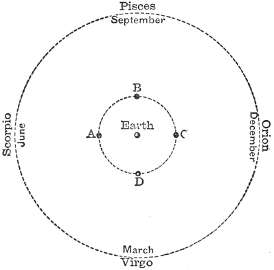
If you look out towards the south at Christmas time you will see the Belt of Orion and the Dog Star in a splendid part of the heavens. You will see those same stars in the same place every winter — but you may look for them in vain in summer. No doubt you can see stars on a summer evening, but they will be quite different from the ones that adorned the winter sky. Each season has its own constellations.
This simple fact was known to the ancients, and we shall find the explanation of it full of meaning. Let us take four well-known constellations that suit our purpose. They lie in a ring round the heavens: Orion, Virgo, Scorpio and Pisces. Suppose you are looking out at midnight towards the south. In December you will see Orion; in March, Virgo; in June, Scorpio; in September, Pisces — and then next December you will be looking at Orion again.
See what this proves. At midnight the sun is of course on the other side of the earth; so if I am looking at Orion in midwinter, the sun must be behind my back. Look at our little picture (Figure 25). The earth is in the middle, and the sun must be on the opposite side from Orion — somewhere about the position I have marked A. In March we see Virgo in the south at midnight, and the sun must again be on the far side, somewhere at B. In June, Scorpio is the one we see, so the sun must be over at C.
That is to say, in midsummer the sun stands in that part of the sky where Orion lies. So if we could see the stars on a bright June day, we should find Orion in the south. The sun's light of course makes Orion invisible; but we can see the stars with our telescopes, and on rare occasions an eclipse of the sun puts him out for a while, and then we can see the stars without a telescope at all, even in the daytime.
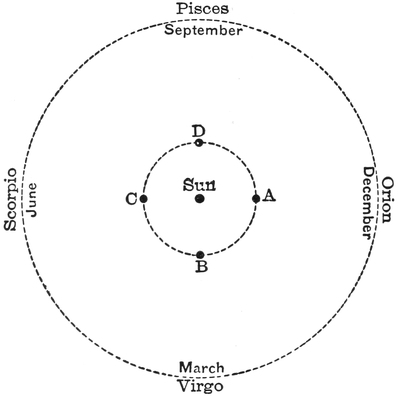
So it would seem as though the sun were first at A and then at B, C and D, and then began the round again. I say it would seem so; and the ancients thought there was no doubt about the matter. Even after it was plain that the earth turned on its axis and so produced the change of day and night, it was still thought necessary to suppose that the sun went round the earth once a year, in order to explain how the constellations changed with the seasons.
Here is another case where we must be careful to distinguish between what appears to be true and what actually is. Everything we undoubtedly see would be explained just as well by supposing that the sun stayed at rest and the earth travelled round it, as in Figure 26. If the earth were at A in midwinter, then the sun is on the opposite side from Orion, and at midnight we shall of course be able to see Orion. In spring the earth is at B and we see Virgo; in summer, Scorpio; in autumn, Pisces. So everything actually visible is fully accounted for by treating the sun as fixed at the centre and the earth as travelling round it from A to B to C to D, completing the journey in a twelvemonth.
Which idea are we to adopt? Are we to say the earth goes round the sun, or the sun goes round the earth?
I remember an old college story which I cannot help giving you here; it may lighten what I fear you must otherwise have found a rather tedious part of our subject. Three students were brought up for examination in astronomy, and showed a lamentable ignorance of the subject. The examiner, being a kind-hearted man, wanted to pass them if he possibly could, and so he put to the three youths the very simplest question he could think of.
"Now tell me," he said to the first, "does the earth go round the sun, or the sun go round the earth?"
"It is — the earth — goes round the sun."
"What do you say?" he asked, turning rather suddenly on the next, who gasped out: "Oh, sir — of course — it is the sun goes round the earth."
"What do you say?" he shouted at the third unhappy victim.
"Oh, sir, it is — sometimes one way, sir, and sometimes the other!"
But which is it? We must remember that the earth is comparatively a very little body and the sun a very big one, so it is not at all surprising to learn that it is the earth that goes round the sun, while the sun stays, practically speaking, at rest in the centre. Our great earth and everything on it are for ever bound in what is very nearly a circular course round the great luminary.
You will find it instructive to work out this little sum: how fast is the earth moving — how far do we go in a second? We are about 93,000,000 miles from the sun, and the great circle we travel has a diameter twice as great, about 186,000,000 miles. The circumference of a circle is nearly three and one-seventh times its diameter, so the whole length of the year's voyage is about 585,000,000 miles. This has to be done in 365 days, so the daily run must be about 1,600,000 miles. Divide that by 24 to find the distance covered each hour, and we get about 67,000 miles; divide again by 60 for the distance in a minute, and by 60 once more for the progress made each second. It is truly startling to find that night and day this great earth has to travel more than eighteen miles every second to get round its mighty path in the time allowed.
I began this lecture about forty minutes ago, and I think from what I have said you will be able to work out a result that will, I dare say, astonish you. In those forty minutes we have moved about 45,000 miles. No doubt my lecture began in this hall and in your presence — but can I truly say I began it here? Well, no. I began it not here but at a place 45,000 miles away. We have all been travelling together, and the journey has been so smooth and so free from jolts that we never gave the motion a thought.
I am sure many of you have read accounts of voyages in the Arctic. You have been told of the sufferings of the crews through the long winters amid ice and snow, and how in that dismal season there is total darkness, the sun never rising for weeks and months together. But these northern regions often present a more cheerful picture too. In midsummer the long darkness of winter is made up for by perpetual sunshine: at midnight there is still the full brilliance of day, and the sun, though low, has not passed below the horizon. Even in the northern parts of Europe we can see the midnight sun.
Lord Dufferin, in his delightful account of a cruise called Letters from High Latitudes, gives an entertaining illustration of the perplexities that endless daylight can cause. Everything went happily until the fatal moment when the yacht crossed the Arctic Circle. Then dire tribulation broke out among the poultry.
A fine cock was the cause of the trouble. Knowing his duty, he always liked to be particular about performing the important task of crowing at sunrise, and he could do it quite regularly so long as the yacht stayed in reasonable latitudes where the sun behaved properly. But once they had crossed the Arctic Circle the cock was faced with an entirely new state of affairs. The sun never set in the evening, and consequently never had to rise in the morning.
What was the distracted bird to do? He did everything. He burst into occasional fits of terrific crowing at all hours; then he gave up crowing altogether; then, finding that did not mend matters, he took to crowing incessantly. Exhaustion was followed by delirium; and rather than live any longer in a universe where the sun was capable of pranks so heartless, the indignant fowl flung himself from the vessel and perished in the Arctic Ocean.
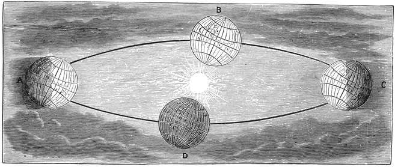
In the sketch alongside (Figure 27) I try to explain the changes of the seasons. It shows four positions of the earth, one on each side of the sun. The left-hand one, A, is the earth when summer gladdens the northern hemisphere; the right-hand one, C, shows winter in the same region.
You will see the two central lines representing the axis the earth turns about. The earth has of course no visible axis: the line running through the globe from the North Pole to the South is imaginary. But it stays fixed in the earth, for we can prove in our observatories that the Pole does not shift its position in the earth itself to any considerable extent. Indeed, if we could reach the North Pole and drive a peg into the ground year after year to mark the exact spot, we should find the position of the Pole sensibly the same each time.
Does it not seem strange that we should be able to know so much about the Pole, when we have never been able to get there — have never, in fact, got within less than 400 miles of it? I think you will see the point quite easily. The latitude of a place, as you know from your geography, is the number of degrees, and parts of a degree, between that place and the equator. In our observatories we can determine this so accurately that the difference in latitude between one side of a room and the other is quite perceptible. Since we find that the latitudes of our observatories stay sensibly unchanged from year to year, we are certain the Pole must be staying in the same place. If the Pole shifted by so much as a stone's throw, the careful watchers in many observatories would very soon detect it.
And now I must turn your attention to something that seems quite different. When the battle of Waterloo was fought, the great victory was won with the help of the old-fashioned musket — a smooth-bore gun loaded at the muzzle with a good charge of powder, on top of which a round bullet was rammed down. "Brown Bess," as the musket was called, was a most efficient weapon at close quarters, and indeed at any distance when the bullet hit. But there was the difficulty. The round bullets, rushing up the tube and out into the air in a somewhat vague manner, had a habit of wandering that was quite incompatible with the accurate shooting of our modern rifles.
One great improvement in small arms was to give the bullet a rapid spin about an axis lying along the line of fire. That is what the rifle does. The grooves in the barrel twist round, and although they make only half a complete turn in the length of the barrel, the bullet moves so fast that when it flies out it is spinning at the tremendous rate of about one hundred and fifty revolutions a second. Even with the old-fashioned round bullet, rifling the barrel greatly improved the accuracy of the shooting. The introduction of elongated bullets was another great improvement, while breech-loading made it possible to use a bullet slightly larger than one that could have been forced down the barrel, so ensuring that the grooves bite into the bullet as it hurries past and give it the necessary spin.
A body spinning rapidly about an axis tends to keep the direction of that axis, and powerfully resists any attempt to change it. Our earth is spinning in just this way. It is true that the rotation is in one sense a slow one, since it takes almost a whole day for each turn. But when we remember the size of our earth we shall think again: we have already said that any place on the equator must travel more than a thousand miles an hour to complete the journey in the required time. So far, then, the earth behaves like a rifle bullet, and the direction of its axis stays constant.
In the course of its great voyage from summer to winter the earth travels from one side of the sun to the other, and all the while it goes on spinning about an axis parallel to the direction it had before. See what follows.
The sun lights half the earth. In the left-hand position in Figure 27, which is summer, the North Pole is tipped over towards the sun and lies in the bright half. There is continual day at the North Pole, and night is unknown there at this season, because the earth's turning will not carry the Pole, nor the regions near it, into the dark hemisphere. That is why the Arctic regions have perpetual day at this time of year.
Now look at the position of England while the northern hemisphere is tilted towards the sun and enjoying the full splendour of midsummer. As the earth turns, England gradually crosses the boundary between light and shadow and enters the darkened hemisphere, and then it is night in England. But you will see from the figure that the day is much longer than the night — and that is why we have those fine long days in summer.
Now look at a different scene six months later. The earth has reached the other side of the sun, but its axis has stayed parallel to itself, so the North Pole is now tilted entirely away from the sun. The earth goes on turning as before, but its motion never brings the North Pole or the surrounding Arctic regions out of the dark hemisphere, so the night there must be unbroken. The long continuous day of the polar midsummer is dearly bought with the gloom and cold of a winter in which there is no sun for many weeks together. Notice too how England's circumstances have changed. In each twenty-four hours it lies much longer in the dark half of the earth than in the bright, so there is only a short day followed by a long night.
It is one of the privileges of astronomers to be able to predict events thousands of years ahead, and to describe things accurately although they have never seen them and nobody else has ever seen them either. No one has yet reached the North Pole; but whenever they do, we can tell them a great deal about what they will find there. We may leave it to Jules Verne to describe how the journey is to be made and how the party is to be kept alive when it arrives. I shall give you a picture of the changing seasons, and of how the stars look, as seen from that spot.
Let us prepare, then, to make our observations from that very peculiar place, the North Pole. I suppose eternal ice and snow are to be found there. I don't think it would be a pleasant residence. However, we shall arrange to arrive on Midsummer Day, prepared to stay a year.
The first question to settle is where to put the hut. In a cold country it is important to get the aspect right, and we are in the habit of saying that a southerly aspect is the best and warmest, while north and east suggest nothing but chills and discomfort. But what is a southerly aspect at the North Pole — or rather, what is not a southerly aspect? Whichever way we look from the North Pole we are facing due south. There is no such thing there as east or west; every way is southward. It is truly an odd part of the earth. The only place at all like it is the South Pole, from which every direction is north.
The sun would move through the day in a fashion utterly unlike its behaviour in our latitudes. There would of course be no such thing as rising and setting. At first the sun would seem neither to come any nearer the horizon nor to climb any higher above it, but simply to go round and round the sky. Then it would get lower and lower, moving round day after day in a sort of spiral, until at last it was so low that it just grazed the horizon, all the way round which it would travel — until half the sun was below it, and then until the whole disc had gone.
Even after the sun had vanished, a twilight glow would continue for some time. It would seem to come from a source moving round and round below the horizon; then gradually the light would grow fainter and fainter, until at last the winter of utter and continuous blackness had set in. The first sign of returning spring would be a feeble glow near the horizon, seeming to travel round and round day after day. Then the glow would pass into a continuous dawn, brightening gradually until the edge of the sun crept into view, and the great globe would at last begin to climb the heavens by its continual spiral, until midsummer came round and the whole change began again.
Our first excursion into the country of Star-land has now been made, and we naturally began by studying that sun to which we owe so much. But we shall have to learn that although our sun is of such vital importance to us, he has many rivals in magnificence and size among the host of the stars.
The first day of the week is named after the greatest body in the heavens — the sun — and so we call it Sun-day. The second day is named after the next most important heavenly body, the moon; and though we do not quite say Moon-day, we do say Monday, which is very nearly the same. In French too the moon is la lune, and Lundi is our Monday. The other days of the week also take their names from the heavens, but we shall speak of those later. We are now going to talk about the moon.
We can divide the objects in this room into two classes. There are the bright faces in front of me, and there are the bright electric lights above. The lights give out light and the faces receive it. I can see both; but I see the lamps by the light they give out themselves, and I see the faces by the light they have received from the lamps.
This is a very simple distinction, but a very important one in Star-land. Among all the bodies that glitter in the heavens, some shine by their own light, like the lamps; others are bright only by reflected light, like the faces. It seems impossible that we should confuse the brightness of a pleasant face with the beam of a pretty lamp — but in the heavens it is often not at all easy to tell a body that shines by its own light from one that merely shines by light reflected from somewhere else. I think many people would go badly wrong if they were asked to point out which objects in the sky are really self-luminous and which are only lit up by other bodies. Astronomers themselves have sometimes been deceived in this way.
The easiest example of the contrast is the sun and the moon. The sun, as we have seen, is the splendid source of light, which it scatters in every direction. Some of that light falls on our earth and gives us the glories of the day; some of it falls on the moon. And though the moon has no more light of her own than earth or stones have, yet when a torrent of sunbeams is poured over her she enjoys a day as we do. One side of her is brilliantly lit, and that is what makes our satellite visible.
This explains the marked contrast between the sun and the moon. The whole of the sun is always bright, while half of the moon is always in darkness. When the bright side of the moon is turned straight towards us we see a complete circle, and we say the moon is full. At other times only a part of the bright surface is turned our way, and that is what produces the beautiful crescents and half-circles and other phases of the moon.
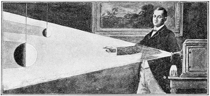
A simple piece of apparatus (Figure 28) will explain these different appearances. The large india-rubber ball shown there represents the moon, and I shall light it with a beam from the electric lamp. The side of the ball turned towards the light is glowing brilliantly, and from the right-hand side of the room you see nearly the whole of that bright side: to you the moon is nearly full. From the centre of the room you see the moon as a half-circle, and from the left it appears as a thin crescent of light.
Now I move the ball round with respect to the lamp, and you see the phases are quite changed. To those on my left our mimic moon is now full; to those on my right it is almost new, or shows only a slender crescent; from the centre of the room the half-moon is visible as before. We can show the same series of changes with the little contrivance of Figures 29 and 30 as well.
So every phase of the moon (Figure 31), from the thinnest lovely crescent you can just make out low in the west after sunset up to the splendour of the full moon, is completely accounted for by the different aspects of a globe of which one half is brilliantly lit.
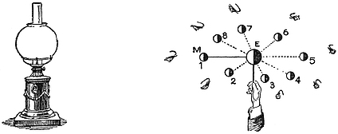
We can now explain a beautiful thing you will see when the moon is still quite young. We describe it fancifully as the old moon lying in the new moon's arms — the faintly lit remainder of the circle of which the brilliant crescent is a part. This can only be explained by showing how some light has fallen on the shadowed side; for nothing that is not itself a source of light can ever be seen unless light from some other body falls on it.
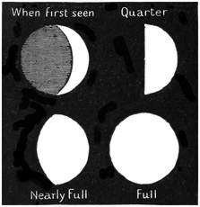
Suppose there were a man on the moon looking at the earth. To him the earth would appear just as the moon appears to us, only very much bigger. At the time of new moon the bright side of the earth is turned straight towards him, so the man in the moon sees an earth nearly full, pouring out a great flood of light.
Think of the brightest moonlit night you have ever seen on earth; and then think what light you would have if there were thirteen moons, each as big and as bright as our full moon, all shining together. How splendid the night would be — you could read a book quite easily! That is the sort of illumination the lunar man enjoys in these circumstances, and all the features of his country are brightly lit by the full earth.
Of course this earth-lit side of the moon cannot compare in brilliance with the sun-lit side; but the brightness is still perceptible, so that when we look at the moon from here we see this glow spread over the whole of the dark part. We see the feebly lit globe clasped in the brilliant arms of the crescent.
At a later phase the dark part of the moon stops being visible altogether, and for two reasons. First, the bright side of the earth is by then not so fully turned towards the moon, so the earth-shine it receives is not so strong. And second, the growing sun-lit part of the moon has so much more glow that the fainter light is overpowered by contrast.
You must remember that more light does not always increase the number of things that can be seen — sometimes it has the opposite effect. Have we not already noticed how the brightness of day makes the stars invisible? The moon herself, seen in full daylight, looks no brighter than a small scrap of white cloud.
It is not easy to answer the question I am sometimes asked: "Is the moon very big?" I would meet it with another question: "Is a cat a big animal?"
The fact is there is no such thing as absolute bigness or smallness. The cat is no doubt a small animal compared with the tiger; but I think a mouse would tell you the cat was quite a big animal — rather too big, indeed, in the mouse's opinion. And the tiger himself is small compared with an elephant, while the mouse is large compared with a fly.
When we talk about the bigness or smallness of a body we must always consider what we are comparing it with. In speaking of the moon it is natural to compare it with our own globe, and then we can say that the moon is a small body.
The relative sizes of the earth and the moon can be illustrated with objects of much smaller dimensions. A tennis ball and a football are no doubt familiar to everybody; and if the earth is represented by the football, the moon would be about the size of the lawn-tennis ball. But this proportion is not quite accurate, so let me suggest a more instructive way of making a better pair of models.
Experiments rather like the ones I am about to describe have in fact been going on in every kitchen in the land this festive season. Have not globes and balls of every sort and size been made of plum pudding? It will need only a little care on the cook's part to produce a pair of luscious spheres that fairly set out the sizes of the earth and the moon.
First there is to be a nice little round plum pudding three inches across — just a little bigger than a cricket ball. It should only make its appearance at a bachelor's table, however: set down before a hearty circle on Christmas Day it would cause dire disappointment, since one boy of sound constitution could eat the whole of it. It would weigh perhaps three-quarters of a pound. This little globe represents the moon.
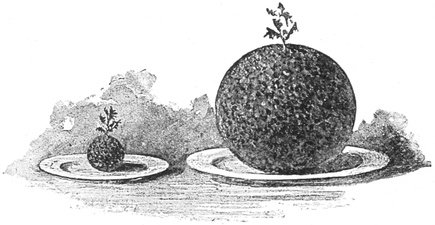
Another plum pudding is to be made to represent the earth (Figure 32). We must beg the cook to observe the proportions. The width of the earth — the diameter, to use the proper word — is about four times the diameter of the moon; so as the small pudding was three inches across, the large one must be twelve inches across. This will be a family pudding of truly satisfactory dimensions, and perhaps the cook will be a little surprised at the alarming quantity of materials needed to complete a sphere of plum pudding a foot in diameter.
These models having been duly made and boiled and set on the table, we now propose the following problem.
If one schoolboy could eat the small plum pudding, how many boys would be needed to dispose of the large one?
The hasty person who does not stop to think will dash out the answer: "Four!" He will say it is quite plain that since one pudding has four times the diameter of the other it must be four times as big, and therefore, as one boy can eat the small pudding, four boys will be enough for the large one.
But the hasty person will, as usual, be quite wrong. His argument would be sound if he were comparing two pieces of sugar-stick: there is indeed only four times as much material in a piece twelve inches long as in a piece three inches long. But the plum puddings have breadth and depth as well, in the same proportion as the length; and so the large pudding is far more than four times as big as the small one.
No four boys, however admirable their capacities, would be equal to the task of consuming it. Nor would the dish be cleared if four more were called in to help. Twenty boys, forty boys, fifty boys would not be enough. It would take sixty-four boys to demolish that magnificent plum pudding one foot across.
If the cook will try the experiment, she will find that by taking materials enough for sixty-four small plum puddings, all of the same size, and mixing them together, she will indeed make a large plum pudding — but its diameter will be only four times that of the small ones.
As a matter of fact the moon is 2160 miles in diameter and the earth is 7918 miles. These numbers are so nearly 2000 and 8000 that for simplicity I have spoken of the earth as having four times the diameter of the moon. If we want to be very accurate we ought to work out the ratio from the true figures, and our plum-pudding illustration must be modified a little: the earth is not quite sixty-four times as big as the moon. But the figure is accurate enough for our present purpose.
Another interesting question may be raised: how much land is there on the moon? We might give the answer in acres or in square miles, but it will perhaps be more instructive to make a comparison with the earth.
Here again I shall use an illustration, and again take two globes three inches and twelve inches across. This time the globes I use are hollow india-rubber balls. They will represent the earth and the moon accurately enough, and what I want to find is the relative surface of the two.
There are several ways the comparison might be made. I might, for instance, paint the two globes and see how much paint each took. If I did, I should find the great globe took just sixteen times as much paint as the small one.
But we can adopt a simpler plan. The india-rubber is the same thickness in both balls, and both are hollow, so the quantity of rubber in each may be taken to represent its surface. By simply weighing the two balls I find the large one is sixteen times as heavy as the small one.
Notice here the difference between the comparative weights of two hollow balls and of two solid ones of the same material. Had these globes been of solid india-rubber, the large one would have weighed sixty-four times as much as the small one, just as with the plum puddings; but being hollow, the ratio of their weights is only the square of the ratio of their diameters — four times four, or sixteen.
So we learn that if the moon were exactly one-fourth the diameter of the earth, its surface would be one-sixteenth of the earth's. No doubt it would have made our subject a little easier and simpler if the moon had been created somewhat smaller than it is; but as the universe has not been constructed solely for the purposes of these talks about Star-land, we must take things as we find them.
The proportion is not four; it is more nearly 3⅔. So the relative surfaces of the two bodies come to the square of 11/3 — that is, of 3⅔ — or about 13½. In other words, the whole extent of our globe's surface is about thirteen and a half times that of the moon.
The face of the full moon, being half of the moon's whole surface, is therefore about one twenty-seventh part of the earth's surface, taking continents, oceans, seas and islands all together. The British Empire and the Russian Empire are each of them as large as the face of the full moon.
The moon is the attendant, the satellite, of the earth, serving the earth's needs by softening the darkness of our nights. The earth goes round the sun on its yearly journey of 365 days; the moon goes round the earth once every twenty-seven days. The moon's motion is therefore a very complicated one, since it is moving round a body which is itself constantly in motion (Figure 33).
You will see from your almanacs every year that certain eclipses are due; and after what we have said about the sun and the moon it will be easy to understand how eclipses come about. There are two different kinds. Sometimes you will see an eclipse of the moon, and sometimes one of those eclipses of the sun we spoke of in the last lecture.
You may be surprised to find with what accuracy eclipses can be predicted. We can name not only those that will happen this year and next, but those that will appear a hundred or a thousand years from now; or we can calculate backwards just as easily, and work out the circumstances of eclipses that happened thousands of years ago. That shows how well we have learned the way the moon moves.
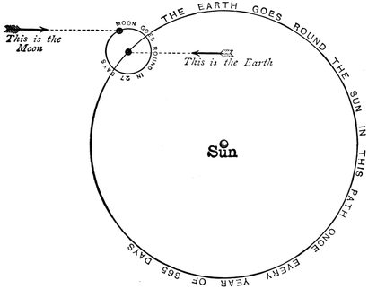
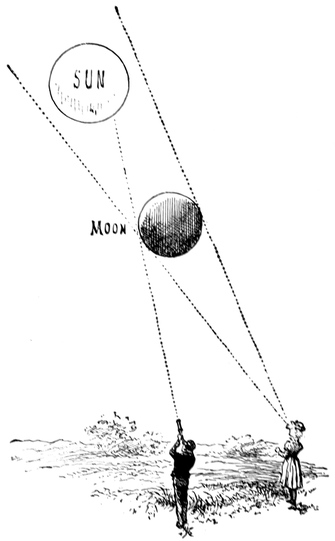
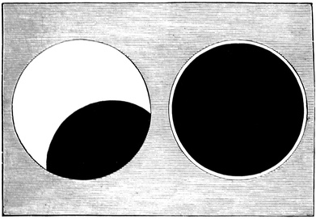
An eclipse of the sun is the simpler event, so we shall describe it first. It happens when the moon comes between the earth and the sun.
Look at our little astronomers in Figure 34. A boy and a girl are both gazing at the sun when the moon comes between. To the boy, the moon seems to take a great bite out of the sun, so that it looks like the left-hand picture in Figure 35. (I have drawn a line from the end of his telescope in Figure 34 which shows how much of the sun is cut off.) This would be called a partial eclipse of the sun.
The almanac will sometimes describe an eclipse as visible in London, or visible at Greenwich; but that need not be taken as literally as it was by a Kensington gentleman who, noticing that the almanac said an eclipse would be visible in London, called a cab and drove into the city to look for it. His almanac had not mentioned that it would be visible from his own house. You may usually take it for granted that when an eclipse is said to be visible from London or Greenwich, it will be more or less visible all over England.
Most of these eclipses are only partial, and though they are interesting to watch they do not teach us much. By far the most wonderful kind is the one in which the whole of the bright part of the sun is blotted out. Then indeed we see wonders. But such eclipses are rare, and even when they do happen they last only a very few minutes. The sights they display are so interesting that astronomers will travel thousands of miles to reach a suitable place from which to observe them.
The girl in Figure 34 is in the best possible position for seeing the eclipse. There she is, right in the line of the sun and moon; and I think you will agree she cannot see any part of the sun at all, for the moon is completely in the way. I have drawn two dotted lines, one on each side: everything she can see beyond the moon must lie outside those lines, and she will be in the dark as long as the moon stays where it is.
When the eclipse is complete, a comparative darkness steals over the land. The birds are deceived and fly home to the trees to roost. The owls and the bats, thinking their time has come, venture out on their nocturnal business. Even flowers close their petals, only to open again a few minutes later when the sun bursts out once more; and other flowers that give out their scent at night become sweetly perceptible for as long as the sun stays hidden. An unruly cow, in the habit of breaking into a meadow at night, was found there when one eclipse was over — while from the same authority I learn that a man rushed off in great excitement to see what his chickens were doing, and came back much disappointed to find them pecking away as though nothing had happened.
It sometimes happens that the moon is so placed that the edge of the sun can be seen all round it. A case of this kind is shown in the right-hand picture of Figure 35. It is called an annular, or ring-shaped, eclipse.
The eclipses we have been speaking of can of course only be seen by day, when the sun is up. Eclipses of the moon, which are seen at night, are caused by the earth coming between the sun and the moon. At night the sun is under our feet on the other side of the earth, and the earth throws a long shadow upwards. If the moon enters that shadow, the sunlight is plainly cut off, either partly or wholly; and since the moon shines by no light of her own but only by light borrowed from the sun, it follows that when she is buried in the shadow all the direct light is intercepted and she must lose her brilliance. That is what we call a lunar eclipse. It is total if the moon is entirely in the shadow, and partial if she is only partly in it.
A lunar eclipse is visible to everybody on the dark hemisphere of the earth, if the clouds will keep out of the way; so a great many more people can usually see a lunar eclipse than a solar one, which is only visible from a limited part of the earth. That is why the lunar eclipse is the more familiar spectacle of the two.
When the moon is entirely within the shadow, you might naturally think she would become completely invisible. That is not always so. It is a curious fact that in the depth of a total eclipse the moon is often still visible, glowing with a copper-coloured light bright enough to let some of the chief markings on her surface be clearly made out.
We are now going to take a good look at the moon and examine the various objects marked on it. There is a peculiar interest about this particular orb, because it is much the nearest of all the heavenly bodies to our globe, and therefore the one we can see best. Every other object — sun, star or planet — is hundreds, or perhaps thousands, of times as far away.
It is right that we should want to learn all we can about the bodies in space. We know that the earth is a great ball, and we can see that there are many other such bodies. Some are much larger and some smaller than the globe we live on; some are dark bodies like the earth, and the moon is one of them. Is it not reasonable to make a special effort to find out all we can about this interesting neighbour?
Close as the moon is to us compared with other objects in space, when we put its distance in ordinary measure it is a very long way off — about 240,000 miles, a length nearly as great as all the railways in the world put together.
An express train running forty miles an hour would cover 240 miles in six hours, so the whole distance to the moon would take 6000 hours; travelling day and night without stopping, you would make the journey in 250 days. To take another illustration: if you wound a thread ten times round the equator of the earth, it would be long enough to stretch from the earth to the moon. Or suppose a cannon could be built strong enough to be fired with a report loud enough to be heard 240,000 miles away — the sound would only reach that distance a fortnight after the gun went off.
The moon is too far off for us to make out the particular features on its surface with the unaided eye. Suppose there were a mighty city like London on the moon, with great buildings and teeming millions of people, and you went out on a fine night to take a look at our neighbour. What do you think you would be able to see of the great lunar metropolis? Would you see its streets full of omnibuses, or even its great buildings? Would you see St Paul's and Westminster, the great parks and the river? Of all these things your unaided eye would show you almost nothing.
Let me give you a little illustration. Suppose you made a tiny model of London, complete in every part, with the streets, the buildings, the bridges, the railways, the parks and the Thames all in their true proportions — and suppose the miniature city were so small that it would stand on a penny postage stamp. Surely everything would look very insignificant even if you held the model in your hand and examined it with a magnifying glass. But suppose it were put on the other side of the table, or the other side of the room, or the other side of the street. Even St Paul's Cathedral would by then have ceased to be distinguishable. And yet the distance would still be nowhere near great enough: you would have to put the little model a quarter of a mile away before it would be in the right position to illustrate how a lunar London appears to the unaided eye.
The astronomer will not be content with a mere naked-eye inspection of a world as interesting as the moon. He will get a telescope to help his sight. The word "telescope" means a contrivance for looking at objects a long way off. We have explained that the further an object is, the smaller it appears; and the telescope allows us largely to get round this inconvenience, by making a distant object look larger.
Telescopes differ greatly in form, and instruments are large or small according to the purpose they are wanted for. Perhaps the most useful practical application of the telescope is by the officer on duty aboard a ship. He is generally provided with a pair of them bound together to make the binocular.
You all know this useful contrivance — or at any rate the opera glass, which is used for purposes more familiar to landsmen. The ship's telescope, or the binocular, or the opera glass, is feeble in power compared with the great instruments of the observatory. The officer on the ship will generally be satisfied with a telescope that shows what he is interested in at about one-third of its actual distance. Suppose his attention is drawn to a great steamer three miles off. He wants to see her more clearly, so he takes a look through his binocular; and at once the vessel is so transformed that she seems only one mile away. The apparent dimensions of the object are increased threefold: the hull is three times as long, the masts and the funnel three times as high, the sailors three times as tall. Various things aboard too small to be seen at three miles are visible from one mile, and it is to that apparent distance the ship has now been brought.
If the sailor wants to reduce the apparent distance of things, how much more keenly does the astronomer feel the same want? At best the sailor has only a range of a few miles to scan with his glass — but what are a few miles to the astronomer? It is true that he can count the distance of the moon in thousands of miles, a good many thousands no doubt; but for every other object he must use millions, and for most bodies in space it is millions of millions of miles that we are obliged to write down.
Need it be said that the astronomer must use every device he can to make a body appear closer? He does not despise the modest binocular; it is often a useful instrument in the observatory. It gives most beautiful pictures of the heavens, and you would be amazed to find how many thousands of stars it will show you that your unaided eye cannot see at all. The binocular will also greatly improve the appearance of the moon; but its powers still fall far short of what we need for studying lunar landscapes. Even if we can reduce the moon's apparent distance to a third, that third is still a very considerable distance. One-third of 240,000 is 80,000 — so we see the moon no better with a binocular than we should see it with the unaided eye if it were 80,000 miles away.
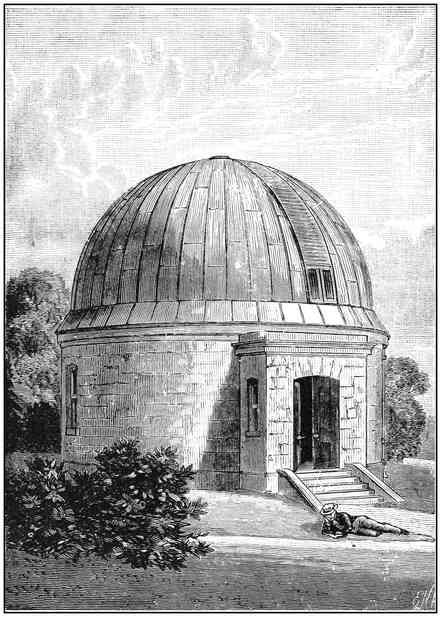
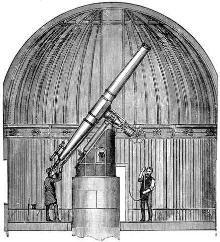
I am not going to give a detailed account of the telescope here, since I shall say more about it in a later lecture; at present I shall only describe the form of instrument most convenient for studying the moon. I take as my example the South Equatorial at Dunsink Observatory, which belongs to Trinity College, Dublin.
This telescope has a building to itself, standing on the lawn in front of the house. The site is open and high, so as to command a wide view of the heavens. You can see a picture of the structure in Figure 36. It is circular, and you go in by the little porch.
The most peculiar feature of a building meant to house this kind of telescope is its roof — or Dome, as we call it. It is hemispherical in shape with a projecting rim at the bottom. Nobody would go to the trouble and expense of building a round dome like that over an observatory if it were not needed for a particular purpose. The dome is very unlike an ordinary roof, not only in appearance but because it can turn round.
In the next figure you will see a section through the building, with the wheels the dome is carried on exposed to view. They run easily on rails, so that when the attendant pulls the rope you see in his hands he turns a large pulley, which drives a little cogwheel working into a rack, and so makes the dome revolve. The roof is built of timber covered with copper and weighs more than six tons; but the machinery is so nicely adjusted that a child of four can easily set the whole thing in motion.
The point of all this machinery becomes clear when we learn that there is only one opening in the dome, closed by the shutter shown above the doorway in Figure 36. Opened right to the top, it gives a long, wide aperture through which the astronomer can look out at the heavens; and of course the dome must be turned until that opening faces the right way. The big telescope can then be pointed at any object above the horizon.
You see a gentleman using the telescope in Figure 37, and this shows that the great instrument is nearly three times as long as the astronomer himself. No doubt it seems to be made of a good many different parts, but the essential portions are comparatively few and simple.
At the upper end is the object glass, made of two lenses, one of flint glass and the other of crown glass. Both must be of exceptional purity, and the shape given to them is a matter of the utmost importance. It is in making this pair of glasses that the optician's skill is specially called for; and an object glass that meets all the requirements is so valuable that it is by far the most costly part of the instrument.
There are no glasses inside the tube until you come to the end the observer looks in at, which is closed by an eyepiece consisting of a lens or a pair of lenses. A telescope usually has a number of different eyepieces containing lenses of various powers, to be used according to the state of the atmosphere or the particular kind of observation in hand.
If you point a big telescope at the sky and find the sun, or the moon, or any of the stars in it, you will very soon find that the object drifts out of view. Remember that our earth is constantly turning and carries the observatory with it, so that although the telescope is rightly pointed at one moment, by the next it has been swung aside. To you at the eyepiece the effect looks as though the heavenly bodies were themselves moving.
We can counteract this inconvenience. The telescope stands on a pedestal built on masonry that goes down through the floor to a foundation on the solid rock beneath. In the iron casing at the top of the pedestal you will see a little window, and inside is clockwork driven by a heavy weight. This clockwork turns the whole telescope round in the opposite direction to the earth's motion, and the consequence is that the telescope stays constantly pointed at the same part of the heavens.
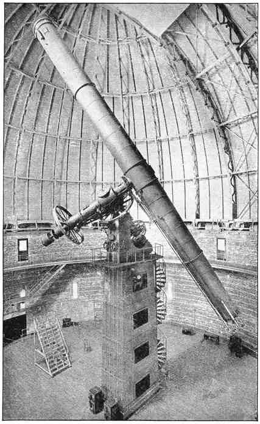
This instrument is no doubt a large one, but in recent years many much greater have been built. The most powerful telescope ever erected is the great Yerkes instrument belonging to the University of Chicago, shown in Figure 38. Its object glass is 40 inches across.
Those in charge of an observatory are often visited by people who, coming to see the wonders of the heavens and finding instruments of such great size, not unnaturally expect the views they get of the heavenly bodies to be correspondingly magnificent. So they are, no doubt; but it frequently happens that the pictures even the greatest telescope can show fall far short of the ideal ones the visitors have conjured up in their imaginations, and they go away sadly disappointed.
This is especially true of the moon. I have known people who, on getting a view of the moon through a great telescope, were surprised not to find vast mountain ranges looking as big to them as the Alps, or mighty deserts over which the eye could roam for thousands of miles. They have sometimes expected to behold stupendous volcanoes which not only were, but looked, as big as Vesuvius. Others seem to have thought they ought to see the moon so clearly that the fields would be plainly visible; and some would not have been much astonished to make out houses and farmyards, and perhaps even cocks and hens.
There are various ways of estimating the apparent size of an object, but the size the moon appears to me to have in a great telescope may be illustrated by taking an orange in your hand and looking at the innumerable little marks and specks on its skin. The amount of detail your eye will show you on the orange is about the amount a good telescope will show you on the moon. A desert on the moon a hundred miles across corresponds to a mark about an eighth of an inch across on the orange.
Some of you may ask what is gained by the telescope at all, if the moon looks as big as a plate to the unaided eye and we now hear it only looks as big as an orange through the telescope. But where is the plate you compare your moon with supposed to be held? Surely not in your hand: it is imagined up in the sky, a very long way off. Though an orange is much smaller than a plate, you can see far more detail on the orange by taking it in your hand than you could see on a plate held on the other side of the street.
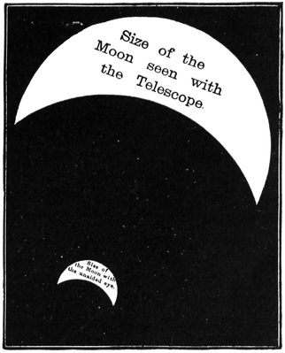
I sometimes find that people will not believe how much the telescope they are using magnifies the moon, until they use both eyes at once, one at the telescope and the other looking straight at the moon. It is then seen, even with a very small instrument, that the telescopic moon is as big as the larger of the two crescents in the figure alongside (Figure 39), while the naked-eye moon is like the smaller.
The greatest telescopes can reduce the apparent distance of an object to about one-thousandth of its real amount. So a body a thousand miles away would, seen through one of these mighty instruments, look as large as our unaided sight would show it if it were only a single mile off. No doubt this is a great addition to our powers, but it often falls far short of what the astronomer would like. The distances of the stars are all so great that even divided by a thousand they are still enormous: if you have a number written 100,000,000,000,000, then dividing by a thousand merely means striking off three of the noughts, and a very large number is still left.
We are concerned at present with the moon, however; and as its distance is about 240,000 miles, the effect of the best telescope is to reduce that apparently to 240 miles. Here, then, is the limit of what the best of all telescopes can do. It can never show us the moon better — hardly indeed as well — as we could see it with the unaided eye if it were only 240 miles over our heads. We cannot expect the most powerful instrument to reveal anything on the moon unless that thing would be big enough to be seen by the unaided eye from 240 miles. So what could we expect to see at a distance of 240 miles?
Here is a little experiment I made to study the point. I marked a round black dot on a sheet of white paper. The dot was a quarter of an inch across. I fastened the paper to a door in the garden and walked backwards until the dot stopped being visible, and I found this distance to be about thirty-six yards. I tried a little boy of eight, and the dot seemed to become invisible to him at about the same distance as to me.
"What has this to do with the moon?" you will say. We shall soon see. In thirty-six yards there are 5184 quarters of an inch; and since we need not be very particular about the figures, we may say in round numbers that the distance at which we could no longer make out the dot was about five thousand times the width of the dot itself.
You need not, then, expect to see anything on the moon — or on anything else — that is not at least as wide as a five-thousandth part of the distance you are viewing it from. The great telescope practically puts the moon at a distance of 240 miles, and a five-thousandth part of that is about eighty yards. So a round object on the moon about eighty yards across would be just glimpsed as the merest dot in the most powerful telescope, and to attract any attention a lunar object would have to be much larger than that.
If St Paul's Cathedral stood on a lunar plain it would be visible in our great telescopes. It is true we could see no details; we should not be able to tell a cathedral from a town hall. There would just be something visible, so that an artist sketching that part would put down a mark with his pencil to show that something was there. This shows us that we need not expect to see objects on the moon, even with the mightiest telescopes, unless they are of great size.
I have already warned you not to expect too much even from the biggest telescope; and by way of caution I may perhaps tell you a story I once heard about an astronomer who had a great one. It was a very famous instrument, and people often came to the observatory at night to enjoy a look at the heavens. Sometimes these visitors were grave philosophers; frequently they were not very accomplished men of science.
One evening such a visitor arrived, sent in his name and an introduction to the astronomer, and asked to be admitted to the temple of mystery. The astronomer courteously welcomed the stranger and asked what he particularly wished to see.
"Oh!" said the visitor, "I have come specially to see the moon — that is the object I am particularly interested in."
"But, my dear sir," said the astronomer, "I would show you the moon with pleasure if you were here at the proper time. What brings you here now? Look up: the evening is fine, there are the stars shining brightly — but where is the moon? You see it is not up at present. In fact it won't rise till about half-past two tomorrow morning, and it is only nine o'clock now. Come back in five or six hours and you shall observe the moon with the great telescope."
But the visitor plainly thought the astronomer was merely trying to get rid of him on a pretext; and he was equal to the occasion. He was not going to be put off like that.
"Of course the moon is not up," he replied. "Anyone can see that, and that is exactly why I have come. If the moon had been up, I could have seen it without your telescope at all!"
Although no explorer can ever reach our satellite, it is hardly an exaggeration to say that in some respects we know the geography of the moon a good deal better than we know the geography of the earth. Think of the continent of Africa. In that great country there are mighty tracts, vast lakes and mountain ranges of which we know very little. We could make a better map of Africa — so far as its broad outlines go — if it were fastened up on our side of the moon, than the map we actually possess at this moment.
There is no spot on the near side of the moon as large as an ordinary parish in this country that has not been surveyed. There are maps and charts of the moon showing every part of it as big as a good-sized field. And since there are no lunar clouds, the features of its surface are never obscured whenever our own atmosphere will let us observe at all.
Artists have frequently sketched the lunar features, and there is plenty of material for them to work from. We have had photographs taken of the moon too — but there is a special difficulty in photographing heavenly bodies which photographers of familiar objects on this earth do not meet. Everybody knows that the first requirement for a successful photograph is that the sitter should stay still while the plate is exposed; and that, unhappily, is just what the moon cannot do.
We try to get round this by moving the telescope so as to follow the moon on its way, and this can be done with considerable accuracy. Unfortunately there is another difficulty entirely beyond our control. As the rays of light from the moon make their journey through hundreds of miles of unsteady air, they are bent this way and that, so that the picture is far more affected by the atmosphere than a portrait taken in a photographer's studio.
If we are merely looking at the moon through the telescope, the quivering these rays pick up on their long atmospheric voyage is rather inconvenient but does not stop us seeing the object; we can readily make out the true shape of each feature in spite of the incessant fluctuation. But when the rays fall not on the eye but on a photographic plate, their motion produces a picture that cannot be magnified much without becoming very confused and losing all sharpness. Nevertheless, for the general outline of our satellite's appearance, and for the portrayal of its splendid features, photography has been of the greatest help to us.
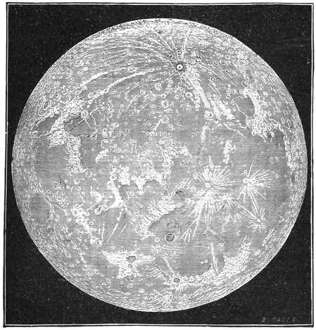
The picture alongside (Figure 40) gives a fair idea of what the full moon looks like through a small telescope. I do not say that lunar objects can be observed under favourable conditions then; for full moon is the very worst time for observing our satellite. At that phase you can hardly see anything but slight differences of colour between one part and another.
The best time for observing the moon is at the first quarter — and even then you can only observe satisfactorily those objects lying along the border between light and shadow. To study the moon properly you must therefore watch it through several different phases, from the time when it shows a thin delicate crescent just after new moon until it has waned to a thin delicate crescent again just before the next. We want the relief that shadows give, to bring out the full beauty of lunar scenery.
On the map you will first notice the large dark patches that are so conspicuous on the moon's face. They are apparently the empty basins that great seas once filled; but if water was ever there, it has at all events quite disappeared now. These dark parts are no doubt a good deal smoother than the rest of the surface, but we can see many little irregularities which tell us we are not looking at oceans.
The chief features I want you to notice are the curious rings you can see in the figure. There is a very well-marked one a little below the centre, and in the upper part many rings, large and small, are crowded together. We call them lunar craters. You will see what they are like from the model in Figure 42; but to get the proper scale of the thing from that picture, you should imagine it to be some miles across. The cliffs that rise all round to make the wall, and the mountain that adorns the centre, are quite as high as any of the mountains of Great Britain.
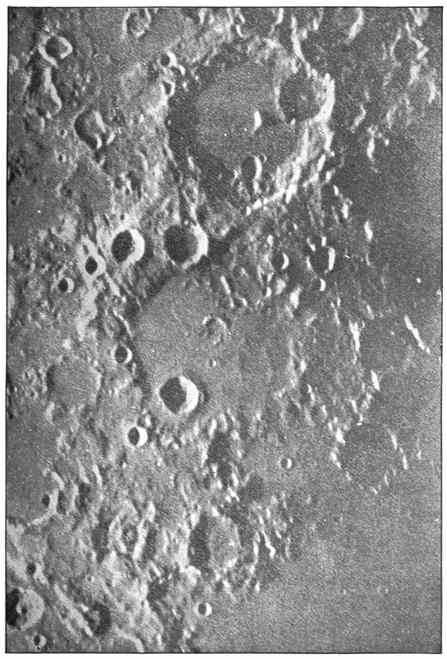
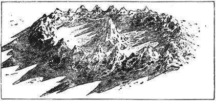
You may want to know how we can measure the heights of mountains on the moon. That is what I am going to show you now, and for the purpose we shall look at our imitation lunar crater. Here is the great ring, the circular enclosure surrounded by cliffs, and here is a sharp mountain peak rising in the centre.
I shall ask for the beam from the electric lamp to be turned on our model. You see how prettily it is lit up. I have placed the lamp so that the beams come in at a slant, and I have done it deliberately to make the shadows long. In fact, when we look at a lunar crater lying on the border between light and shade, the sun is lighting it under just the conditions shown in the figure.
I dare say you have often noticed what long shadows are cast at sunset. Shadows of that sort are made to teach the astronomer the heights of the lunar mountains: he measures the length of the shadow, and then by a little calculation he can find the height of the object that cast it.
Suppose we want to measure the height of a flagstaff (Figure 43). It is quite possible to do it by simply measuring the length of the shadow the flagstaff casts at noon. It would not be right to say that the height of the flagstaff equals the length of its shadow — though that will be the case if you are fortunate enough to make your measurement at or near London on either the 6th of April or the 5th of September. On every other day of the year a little calculation has to be made, which I need not go into, but which the astronomer with the help of his Nautical Almanac can do in a very few minutes. In the same way, by measuring the lengths of the shadows on the moon and working out how many miles long they are, we can calculate the heights of the lunar mountains and of the ranges of cliff that surround the walled plains.
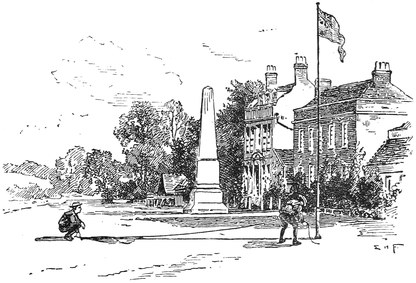
We must now offer an explanation of the curious rings which are the most characteristic features of the moon. To account for them we must look for a moment at some objects on the earth.
You have all heard of volcanoes, or burning mountains, such as Vesuvius or Etna, which break out from time to time into violent eruption and send out great showers of ash and torrents of molten lava. In the Sandwich Islands there is a celebrated volcano called Kilauea. It is like a vast lake of lava, so hot that it is actually molten and glows like red-hot iron. The adventurous tourist who visits this crater can climb to the brink of the lofty range of cliffs that surrounds it and gaze down on the fiery sea beneath.
Suppose that by some great change the internal heat keeping this mighty basin aglow were to decline and go out. The sea of lava would cease to be liquid, and would in the end grow hard and cold; and we should then have an immense flat plain surrounded by a range of cliffs. Examples of extinct craters of just this kind can be found elsewhere in the Sandwich Islands today.
Those who have studied these interesting places point out how such craters on the earth explain the ringed plains on the moon. It seems certain that in ancient days great volcanoes abounded on our satellite, and that the rings were often much larger than the ones in the Sandwich Islands — some of them a hundred miles or more across. The volcanoes must have raged on the moon long ago with a fury altogether unknown among any active volcanoes this earth can show now.
We can also guess how the lofty mountain peak that so often rises in the centre of a lunar ring was thrown up. When the fires had almost died down and the floor had grown nearly cold, one last expiring effort was made, by which the congealing surface was burst through at the centre and materials were shot out that remain as the central mountain to this day.
I must impress on you, however, that even our greatest telescopes never show us any volcanic eruption going on in the moon at present. Indeed it is most doubtful whether any change at all has been noticed in the features of its surface since the telescope was invented. The volcanoes carved the moon's crust into the form we see, and our satellite has kept that form for ages whose length we cannot even estimate. All the craters and all the volcanoes on the moon can only be described as extinct.
It is interesting to compare the present state of the volcanoes on the earth with the ringed craters of the moon. The noisy volcanoes of our globe are the ones most talked about. We often hear of Vesuvius being in eruption; and in August 1883 there was a terrific eruption at Krakatoa, which shot such a quantity of dust so high into the air that it was carried right round the earth and produced beautiful sunsets and strange colours in the sky in almost every country in the world. The explosion at Krakatoa made the loudest noise history has recorded. Fortunately such convulsions do not happen often, for on that occasion the sea rushed in over the land and thousands of lives were lost.
There are said to be one hundred and fifty volcanoes in various parts of the earth which are more or less active; but there are many others in which the fire has gone out and which seem to be just as cold and just as extinct as any volcano on the moon. Even in our own islands there are abundant remains of ancient volcanoes, and masses of lava are found in many places where there is now no trace of an active one. Perhaps there is no more remarkable sight in the British Isles than the lofty rock crowned by Edinburgh Castle: it is the remnant of a former volcano, and Arthur's Seat close by is another. In the centre of France lies the beautiful district of Auvergne, where ancient volcanoes abound and the lava streams can be traced for miles across the country. These have been extinct for thousands of years, during which the lava has largely become covered with soil and vegetation, and in some places vineyards are grown on it.
We can now contrast the earth with the moon so far as volcanoes are concerned. On the earth we have some that are active and a much greater number that are extinct; on the moon there are no active ones at all — every one is extinct.
I can explain how this difference has come about, but first let me show you a simple experiment. My assistant will kindly bring me from that furnace the two iron balls we put there before the lecture began. There they are, you see, both glowing with a bright red heat, for at present they are equally hot. We shall put them on these stands and let them cool.
One of these balls is a small cannon-ball four inches across, while the other is only one inch. They are in the same proportion as the earth is to the moon. But look — even while I have been speaking, the balls have stopped being at the same temperature. The little one has gone almost black with loss of heat, while the large one still looks nearly as red as it did at the start.
This simple experiment illustrates the principle that two heated bodies of different sizes will cool at very different rates when everything else about them is the same. The small body will always cool faster than the large one. They need not be globes, either. Put a poker and a knitting needle into the fire and leave both until they are red-hot, then put them out on the fender, and you will quickly find that although they were at the same temperature when they came out of the fire they do not stay so for long: the knitting needle has become cool enough to handle before the poker has stopped glowing. Our experiments have been made with small objects only, no doubt, but the law they teach us holds true even for the greatest.
Our earth today shows many signs of being much hotter inside than it is at the surface. The volcanoes themselves are mere outbreaks of glowing material from within. Then there are the hot springs at Bath, gushing up out of the earth; there are geysers of hot water in Iceland, and in the Yellowstone Park in America, and elsewhere. And there are other signs that every miner is familiar with. Wherever a deep pit is sunk into the earth, the rocks below are always found warmer than those at the surface, and the deeper the pit the greater the heat met with. From all over the world, then, we get proof that internal heat exists now.
Great as the earth is, we must still apply the plain common-sense principles we use in everyday life. Let me give an illustration. Suppose a servant came into the room and put a jug of water on the table, and an hour later you went to the jug and found it cold. From that fact alone you would not be able to infer anything with certainty about whether the water had been warm or cold when it was brought in. It might have been perfectly cold, as it is now; on the other hand it might have been warm at first and have cooled to the temperature of the room during the hour.
But suppose that when you went to the jug, after it had stood on the table for an hour, you found it tepid — no matter how slightly its temperature was above the room's. Do you not see what you could infer? You would argue like this: that water still has some heat; it must of course be cooling gradually; therefore it was hotter a minute ago than it is now, and hotter still two minutes ago, or ten; and it must have been very hot, perhaps boiling, when it was brought in an hour ago.
I want you to apply exactly the same reasoning to our earth. It is, as I have shown you, still hot and warm inside. That heat is of course gradually being lost, so the earth will cool down from year to year, though at an extremely slow rate. But we must look back over past ages. Just as we inferred that the jug must have held very hot water an hour before, from the mere fact that the water was still warm, so we are entitled to infer from the fact that the earth still keeps some heat that it must in ages gone by have been exceedingly hot.
Indeed, the further back we look the hotter we see the earth growing, until at last we are driven to think of a period in the exceedingly remote past — long before life began to dawn here — when even the surface of the earth was hot. Further back still, and we see the earth no longer covered with the hard, dark, cold surface we find now: we must think of it in those primitive times as a huge glowing mass, in which all the substances that now make the rocks were incandescent, and even molten.
There is good reason to know that in those early times the moon too was molten with heat. So our reasoning has led us to a period when there were two great red-hot globes, one about four times the diameter of the other, starting on their careers of gradual cooling.
Recall our little experiment with the two cooling globes of iron. Imagine those globes keeping their relative proportions, but one of them 8000 miles across and the other 2000. Ages will no doubt pass before they part with enough heat for their surfaces to cool and solidify. But we may be sure that the small globe will cool faster, that its outside will harden sooner than the large one's, and that long after the small globe has grown cold to the centre the large one may still be keeping some of its original heat.
We can thus readily understand why all the volcanoes on the moon have stopped: their day is over. It is over because the moon, being so small, has grown so cold that it can no longer sustain the internal fires needed for a volcanic outbreak. Our earth, being so much bigger, has cooled more slowly. It has no doubt lost its high surface temperature, and its volcanic energy has probably fallen off from what it once was; but there is still power enough in the subterranean fires to wake us occasionally with a Krakatoa, or to supply Vesuvius with material and vigour for its more frequent outbursts.
The argument shows us that the time must come at last when this earth will have parted with so much of its heat that it can no longer produce volcanic phenomena — and then we shall pass into that exhausted stage which the moon reached ages ago.
Although the moon goes round and round the earth incessantly, she always manages to avoid giving us a view of what is on the other side. Our satellite always turns the same face towards the earth, and we may reasonably guess that the other side is covered, like the side we know, with rings and other traces of former volcanoes.
In this respect the moon is quite a peculiar object. The other great heavenly bodies, such as the sun or Jupiter, turn on their axes and show us now one side and now another with complete impartiality. The way the moon revolves can be illustrated by taking your watch and chain and, holding the chain at the centre, swinging the watch round in a circle. At every point of its path the ring of the watch points, of course, to the centre where the chain is held. Imagine your eye at that centre, to stand for the earth, and the movement of the watch shows you how the moon goes round it.
There is one more point I must explain about the moon before we close this lecture. Nothing is more familiar than the fact that a heavy body will fall to the ground; and it hardly matters what the body is made of. You see I have a small iron ball in one hand and a cork in the other. I drop them at the same moment and they reach the ground together. Perhaps you would have expected the cork to lag behind the iron. I try the experiment again and again, and you can see no difference in the times of their fall — though I do not say this would hold if they were dropped from the top of the Monument.
In general we may say that a body let drop will fall sixteen feet in the first second. Even a bit of paper and a penny will fall through the same height in the same time, if you can get over the difficulty of the resistance of the air. That is easily managed: cut a small piece of tissue paper that will lie flat on top of the penny, and hold the penny horizontal with the paper uppermost. Though there is nothing fastening the paper to the penny, you will find that they fall together. And if we could do the experiment in a vacuum, then whether the paper were laid on the penny or placed any other way, the two would reach the table at the same moment, provided they were released at the same moment from equal heights.
Wherever we go we find that bodies always tend to fall towards the centre of the earth. In New Zealand, on the opposite side of our globe from where we are standing now, bodies fall up towards us; and this law of falling is obeyed at the top of a mountain just as it is down here. However high the ascent made in a balloon, a body let go will fall towards the earth's centre.
Of course we can only rise some five or six miles, even in the most buoyant of balloons; but we know that the attraction pulling bodies down towards the earth extends far beyond that limit. If we could go ten, twenty or fifty miles up, we should still find the earth trying to pull us down. Nor would gravitation have ceased even if you imagined an ascent to a height of 1000 miles: a cork, or an iron ball, or anything else dropped from 1000 miles up would assuredly tumble down to the ground below.
Suppose that by some device we could soar to a height of 4000 miles. I name that height because we should then be as far above the earth as the centre of the earth is below our feet. We should have doubled our distance from the centre, and the strength of gravitation would have dropped to a quarter of what it is at the surface. A body which at the earth's surface falls sixteen feet in a second would there fall only four feet in a second, and the apparent weight of anything would be so much reduced that it would seem to weigh only a quarter of what it weighs down here.
So the higher and higher we go, the less and less gravity becomes — but it never ceases, even at a distance of millions of miles. You might therefore ask: if gravity tries to pull everything down wherever it may be, why does it not pull down the moon? This is a difficulty we must consider carefully.
If the earth and the moon were simply held apart, both at rest, and the moon were then let go, it would no doubt drop straight down onto the earth. But the moon's movement would be very different if, instead of merely being let fall, it were thrown sideways. The effect of the earth's pull would then show itself in keeping the moon revolving around us, instead of letting her fly away altogether as she would have done had the earth not been there to attract her.
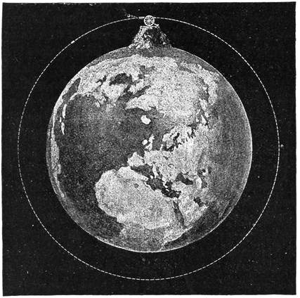
We can explain this with an illustration. On the top of a mountain I have placed a big cannon (Figure 44). We fire it off, and the ball flies away in a curved path, sinking gradually until it falls to the ground. I have drawn the mountain hundreds of times larger than any mountain could possibly be; and now I want you to imagine a cannon far stronger, and gunpowder far more potent, than any that has ever yet been made.
Fire off a ball with a still greater charge than before, and the path is much longer — but the ball still curves down and falls to the earth in the end. Now make one final shot with a charge powerful enough, and away flies the ball, this time following the curve of the earth; for the earth's attraction has the effect of bending its path out of a straight line into this circular form.
By the time the ball has travelled a quarter of the way round it is no nearer the earth than it was at first, nor has it lost any of its original speed. So in spite of its long journey the ball has practically as much energy as when it first left the muzzle. Away it flies round another quarter of the earth, and still in the same condition it completes the third quarter and the fourth, returning to the point it started from. If we have cleared the cannon out of the way, the ball will fly over the mountain top again without having lost any speed on its voyage round the earth. It is therefore in a fit state to start round again, and so to revolve about the earth permanently.
If, then, a great ball 2000 miles across had once been fired with the proper velocity from the top of a mountain 240,000 miles high, that ball would go on circling round and round the earth for ever; and even if the mountain and the cannon disappeared, the motion would be kept up indefinitely. This illustration will at any rate show you how the moon can go on revolving round the earth continuously, notwithstanding that the earth is constantly pulling our satellite down towards its surface.
Astronomers are often asked whether any animals can be living on the moon. No observation we can make with the telescope will answer that question directly. There are great plains to be seen on the moon, of course; but even if there were elephants tramping across them, our telescopes could not show us. Nor will our instruments say straight off whether plants or trees flourish there. The mammoth trees of California are so big that a tunnel has been cut through the trunk of one, large enough for a carriage and pair to drive through; but even trees as big as that would not be visible on the moon from the most famous observatories.
Let us think what we should experience ourselves if we could by some marvellous means be carried from the earth to its satellite and set to explore that new and wonderful country. Alas — we should find it utterly impossible to live there for an hour, or even for a minute. Troops of difficulties would beset us at once.
The first would be the want of air. Think for a moment how invariably air is present around our own globe. Climb to the top of a high mountain, or take a lofty voyage in a balloon, and you are bathed in air the whole time. It is air that holds up the balloon, just as a cork is held up by water. In all circumstances we must have air to breathe. In that air is oxygen, and we must have oxygen supplied to our lungs without a break to refresh our blood. We need that oxygen to be diluted, too, with a much larger quantity of nitrogen, for our lungs and our circulation are fitted for living in that particular mixture of gases we find here.
The atmosphere grows thinner and thinner the higher we go, and apparently comes to an end altogether some two or three hundred miles over our heads. Beyond its limits it seems as though empty space would be met with all the way from the earth to the moon. We could not get a single breath of air, and life would of course be impossible. Even at a height of three or four miles breathing becomes difficult, and life could certainly not be kept up at a height of ten miles.
Plainly, then, for a voyage to the moon we should need an ample supply of air — or at least of life-giving oxygen — to be breathed somehow as the journey went on. And when at last the 240,000 miles had been crossed and we were about to land, the first thing we should want to know is whether the moon is wrapped in any coating of air.
Most of the globes in space are, so far as we can learn, covered and warmed by an enveloping atmosphere of some kind; but unhappily the poor moon has been left entirely, or almost entirely, without any such clothing. She is quite bare of any atmosphere at all comparable in density or bulk to the one that surrounds us — though possibly we do now and then detect traces of air, or of some kind of gas, in small quantities in the lunar valleys.
I am sure every intelligent boy or girl will want to know how we can tell all this. We have never been to the moon; how then can we say it is nearly destitute of air? Our telescope cannot answer directly either, for you could hardly expect to see air even if it were there. So how are we able to make such assertions?
There are many different ways in which we have learnt that the moon has no air. I will tell you one of the easiest and most certain.
First let me say that air is not perfectly transparent. No doubt I can see you and you can see me, though a good many feet of air lie between us; but when we deal with much greater distances there is a very simple way of showing that air is not quite transparent. In the evening, when the sun is setting and the sky is clear, you can look at him without discomfort; whereas in the middle of the day you know it is impossible to look at the sun without shading your eyes with smoked glass or something of the kind. The reason is that when the sun is setting or rising we look at him through an immense thickness of air, which, not being perfectly transparent, stops some of the light. That is why the sun in those circumstances loses his dazzling brilliance and we can look at him in comfort.
At the seaside you can notice the same effect another way. Go out on a fine clear night when the stars are glittering overhead in their thousands, then look gradually lower and lower towards the horizon, and you will find the stars growing fainter and fainter. Indeed, even the brightest star cannot be seen when it is right at the horizon, because an immense thickness of atmosphere is not transparent.
Now we can state the argument by which we may prove that there is little or no air on our satellite. The moon frequently passes between the earth and a star, and when the star is a really bright one the observations we can make are of great interest.
Let me first describe what we actually see. The star shines brightly until the moment the moon eclipses it, and its disappearance is generally instantaneous. But this would not be so if the moon were encircled with an atmosphere. If the moon were coated with air, the light of the star would not be put out at once; it would decline gradually, as it had to pass through more and more of the moon's atmosphere, and you would find the star dwindling in brightness before the solid body of the moon had come far enough forward to shut it out. The sudden extinction of the stars demonstrates that our satellite is airless.
There would be another insuperable difficulty in taking up residence on the moon, even supposing you could get there. Water is absent from its surface. We have examined every part of it and find no evidence of seas or oceans, of lakes or rivers; we never see anything like cloud or mist, which are of course only water in vapour form. We are therefore assured that, as far as water goes, the moon is an absolute desert.
This is perhaps the most striking contrast between the look of the earth and the look of the moon. If an astronomer on the moon were to look at our earth, he would find most of its surface hidden under cloud; and through the openings in that cloud he would see that by far the greater part of this globe is covered by the expanse of ocean. Indeed, once the lunar astronomer had grasped how much water there is on this earth, whether as ocean or as cloud, I feel sure he would conclude that nothing could live here but seals and other amphibious animals.
Because it has neither air nor water, the moon would be entirely unfit to support life of the kinds we know. Air and water are necessary to every animal, from the humblest animalcule up to the whale or the elephant; air and water are necessary to every form of plant life, from the lichen growing on a stone up to the noble old oak of the forest.
But suppose we could land on the moon carrying an ample supply of oxygen to breathe and water to drink. We should still find ourselves perplexed and embarrassed — to say the very least of it — by an extraordinary difference that would strike us at once. All that familiar experience of gravity, of the weight of things, which we have picked up living on a great globe like the earth, would seem ludicrously altered the moment we began to walk about on a little globe like the moon.
We should be astonished at the transformation, by which the weight of everything was so much reduced. When you pulled out your watch you would hardly feel it at the end of the chain; it would seem a mere shell. Yet the watch is perfectly all right and going as well as ever; nothing about it has altered except its weight. A big stone catches your eye, and to your amazement you find it does not weigh as much as a piece of wood of the same size would weigh down here. A stone you could hardly stir on the earth you can carry about on the moon.
This is not to be explained by anything peculiar in the make-up of lunar stone. Most probably it is not very different from some of the rocks on the earth; the lightness of a lunar stone is not because it is made of some very special material, and we must look for another explanation.
Every object on the moon would be found only one-sixth as heavy as the same object on the earth. A sturdy labourer at the docks can carry one sack of corn on his back here, and finds that as much of a load as is convenient. Placed on the moon, he would discover that his load had suddenly been lightened to a sixth (Figure 45), and that he could carry six sacks of corn there without making a greater effort than supporting a single sack costs him on the earth.
To explain how such a change comes about, look at these two pictures: one shows the labourer on a small body like the moon, the other on a great globe like the earth. What the labourer actually feels is not quite so simple a thing as he supposes. He imagines it is the weight of the corn, and the corn alone, that produces the pressure on his shoulders he knows so well. But that is not quite how the philosopher looks at the question. What the labourer really feels is the attraction between the earth beneath his feet and the corn on his back. That is the force producing the pressure on his shoulders. Its size depends, no doubt, on how much corn is in the sack — but it depends also on how much matter there is in the earth beneath his feet. In fact the force between two attracting bodies depends on the masses of both of them. When the labourer is moved to the moon, whose mass is so much less than the earth's, the attraction is less than it is here, even though the corn is the same in both cases.
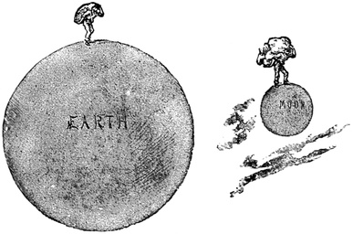
Many odd instances could be given of the extraordinary consequences of life on a world where every weight is reduced to a sixth. One occurred to me the other day when I saw a postman going his rounds with an amazing load of Christmas presents and parcels. How much happier, I thought, must be the lot of a postman on the moon, if such officials are needed there! All the presents of toys, and the more substantial gifts, might be exactly the same as before; the only difference would be that they would not feel nearly so heavy. A box holding a pound of chocolate bonbons would still hold exactly the same quantity of sweets on the moon, but the effort of carrying it would be cut to a sixth: it would weigh only as much as two or three ounces do on the earth.
Our streets provide another admirable illustration of the drawbacks of life here compared with the conveniences offered on the moon. I feel quite confident that no perambulators can be necessary there. I cannot say whether there are babies on the moon; but of this I am certain, that even if lunar babies were as plump and sturdy as ours, they would still weigh only about a sixth as much. A lunar nurse would scorn to use a perambulator even for a pair of twins: she might take both of them out on her arm for an airing, and even then be carrying only a third of the load her terrestrial sister must bear with a single child.
The lightness of things on the moon would entirely transform many of our most familiar games. At cricket, for instance, I do not think the bowling would be much affected — but the hits would be truly terrific. I believe an exceptionally good throw of a cricket ball here is about a hundred yards; the same man, with the same ball and the same effort, would send it six hundred yards on the moon. Every hit, too, would carry the ball six times as far as it does here. Football would show a striking development in lunar play: a good kick would not merely send the ball over the crossbar, it would go soaring over the houses and perhaps come down in the next parish.
Our own bodies would of course share in the general buoyancy, so that with our muscular power undiminished we should be almost able to run and jump as though we were wearing the famous seven-league boots. I have seen an athlete in a circus jump over ten horses standing side by side. The same athlete, making the same effort, would jump over sixty horses on the moon.
A run with a pack of lunar foxhounds would indeed be a marvellous spectacle. There would be no need for timid horsemen to look about for open roads and easy gaps. The five-barred gate would be utterly despised by a huntsman who could clear a hayrick with ease; and it would hardly be worth taking a serious jump to clear a canal, unless there were a road and a railway or two that could be disposed of at the same time.
To look at this business of gravitation from the other side, suppose we were carried from this earth to some globe much greater — a globe, for instance, as large and as massive as the sun. We can show that the weight of everything would be increased; indeed everything would weigh about twenty-seven times what it does here. To pull out your watch would be to hoist a weight of five or six pounds out of your pocket. Indeed, I do not see how you could draw your watch out at all, for even raising your arm would be impossible: it would feel far heavier than if it were made of solid lead. It is perhaps conceivable that you might stand upright for a moment, particularly with a wall to lean against; but of this I feel certain, that once you got down on the ground it would be utterly beyond your power to rise again.
These illustrations will at least serve one purpose: they show how difficult it is for us to form any opinion about the presence or absence of life on the other globes in space. We are adapted in every way for living on this particular earth, of a particular size and climate, with an atmosphere of a particular composition. Within certain narrow limits our vital powers can accommodate themselves to change; but the conditions of other worlds seem so utterly different from those we find here that it would probably be quite impossible for beings made as we are to stay alive for five minutes on any other globe in space.
Whether there may not be inhabitants of some kind on many of those other splendid globes is, however, quite another question. Through the wide extent of space we have inconceivable myriads of worlds, presenting no doubt every variety of size and climate, of atmosphere and soil. It seems quite preposterous to imagine that among all these globes ours alone should be the abode of life. The most reasonable conclusion for us to come to is that these bodies may be endowed with life of kinds just as well suited to the physical conditions around them as the life on this globe, animal and vegetable alike, is suited to the special circumstances it is placed in.
We can hardly think of either the sun or the moon as a world in the sense in which our earth is a world. But there are some bodies called planets which do seem more like worlds, and it is about them that we are going to talk now.
Besides our earth there are seven planets of considerable size, and a whole host of insignificant little ones. These planets are like ours in a good many ways. One of them, Venus, is about the same size as this earth; two others, Mercury and Mars, are very much smaller. And there are planets very much larger than any of these — Jupiter, Saturn, Uranus and Neptune. In this lecture we shall chiefly discuss three bodies: Mercury, Venus and Mars, which with the earth make up the group of "inner" planets.
The planets are all members of the great family that depends on the sun. Venus and the earth may be considered the pair of twins, alike in size and weight. Mercury and Mars are the babies of the system. The big brothers are Jupiter and Saturn. All of them go round the sun and draw their light and heat from his beams.
We should like to get a little closer to some of our fellow planets and learn their actual geography. Unfortunately, even in the most favourable circumstances they are a very long way off. They are many millions of miles away, and always at least a hundred times as far as the moon.
Far off as the planets may be, astronomers have known of their existence for ages. I can give you a curious proof of this. You remember we said the first and second days of the week were named after the sun and the moon — Sun-day, and Moon-day, or Monday. Let us look at the others. Tuesday is not quite so obvious, but translate it into French and we have Mardi at once; that word means nothing but Mars' day, and our Tuesday means exactly the same. Wednesday is readily interpreted too by the French Mercredi, Mercury's day; Venus corresponds to Friday; Jupiter's day is Thursday, and Saturn's day is naturally Saturday. The familiar names of the days of the week are thus tied to the seven moving heavenly bodies that have been known for uncounted ages.
I want everyone who reads this book to make a little drawing of the sun and the planets. The apparatus you will need is a pair of compasses — any sort that will hold a bit of pencil will do — and a small scale marked in inches and parts of an inch; any carpenter's rule will answer.
The drawing is meant to give you a notion of the true sizes and positions of the fine family of which the earth is one member. The figure I have given here (Figure 46) is not on so large a scale as the one I am about to describe and want you to use. Try to do the work neatly, and then pin your little drawings up where you can see them every day until you are quite at home with what we mean by the solar system.
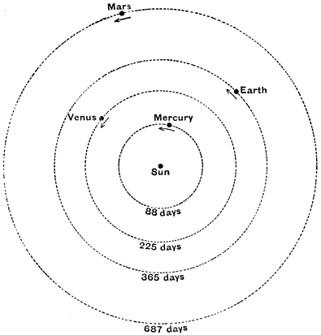
First open the compasses one inch and draw a circle; mark a dot on it "MERCURY" in neat letters, and write on the circle "88 days". At the centre you are to put the "SUN". This circle gives the track Mercury follows on its journey round the sun in a period of 88 days.
Next open your compasses to 1¾ inches, which you must do accurately with the scale. The circle drawn with that radius shows the relative size of the path of Venus, and to give its period you should mark it "225 days".
The next circle is a very interesting one. Open the compasses to 2½ inches this time, and mark the path it draws "365 days". This is the high road we ourselves travel every year — along which we are, in fact, travelling at this moment.
If you want to get from your figure any notion of the true dimensions of the system, the earth's path is the most convenient means of doing it. The earth is 93,000,000 miles from the sun, and our drawing shows its orbit as a circle of 2½ inches radius. It follows that each inch on our little scale stands for about 37,000,000 miles; and since the radius of Mercury's orbit was taken as one inch, the distance of Mercury from the sun must be about 37,000,000 miles.
We have one more circle to draw before the sketch is complete. Open the compasses to four inches and draw the circle that represents the orbit of Mars, marking it "687 days"; and the inner part of the solar system is then fully represented.
You see that this diagram shows how our earth is in every sense a planet. It happens that one of the four planets travels outside the earth's path while two travel inside it. And by marking the days on the circles that show the planets' periods, you notice that the further a planet is from the sun, the longer it takes to go round.
Perhaps this does not surprise you, since the journey is of course longer in a larger orbit; but that does not entirely explain how much the time of revolution grows. The further a planet is from the sun, the more slowly it actually moves — so for a double reason the larger orbit takes a longer time.
From London to Brighton is a much longer journey than from London to Greenwich, so the railway journey to Brighton must of course take longer than the one to Greenwich. But suppose you compared the railway journey to Greenwich not with the railway journey to Brighton but with the journey to Brighton by coach: then the comparative slowness of the coach would be a second reason, on top of the greater distance, why the Brighton trip should be so much more tedious. Mars may be likened to the coach that has to go all the way to Brighton, and Mercury to the train that flies along the very short run to Greenwich.
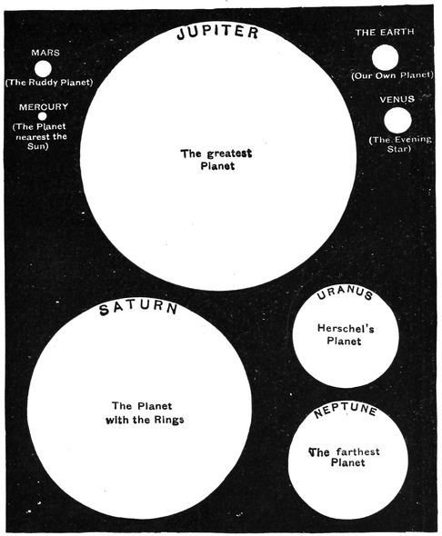
We can easily show from our little sketch that Mercury must be moving faster than Mars. The radii of the two circles are one inch and four inches, so the path of Mars must be four times as long as Mercury's orbit. If Mars moved as fast as Mercury he would of course need only four times as many days to complete his big path as Mercury takes for his small one; and four times 88 is 352, so Mars ought to get round in 352 days if he moved at Mercury's pace. In fact Mars takes nearly twice that number — no less than 687 — and from this we infer that the average speed of Mars cannot be much more than half Mercury's.
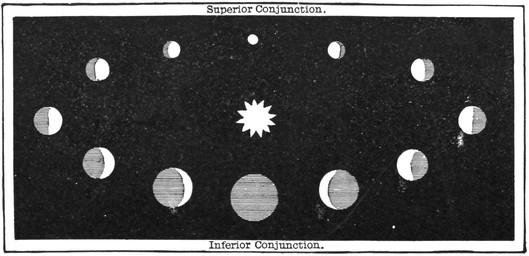
To appreciate properly where the earth stands among its brothers and sisters in the sun's family, you will need your compasses for another little sketch, one that fairly represents the sizes of the four bodies themselves. Remember that the last drawing showed nothing whatever about the sizes of the bodies; it only showed the dimensions of the paths they move in.
Mercury is the smallest globe of the four, so we shall open the compasses half an inch and draw a circle for it. The earth and Venus are so nearly the same size — though the earth is a trifle the larger — that we need not try to show the difference, so we shall represent both by circles of 1¼ inches radius. Mars, like Mercury, is smaller than the earth, and the circle representing it will have a radius of ¾ of an inch.
You should draw these figures neatly and, with a little shading, make them look like globes. It would be better still to make actual models, taking care of course to give each of them exactly the right size. A comparative view of the principal planets is shown in Figure 47.
Quicksilver is a bright and pretty metal, and unlike every other metal it is a liquid in ordinary circumstances. If you spill quicksilver it is a difficult business gathering it up again: it breaks into little drops which you cannot easily pick up with your fingers, for they slip away and escape your grasp. Quicksilver will run easily through a hole so small that water would hardly pass, and it is so heavy that an iron nail or a bunch of keys will float on it.
This heavy, bright, nimble metal is known by another name besides quicksilver: a chemist would call it mercury. And the astronomers use exactly the same word for a pretty, bright, nimble and heavy planet that seems to do its best to escape our sight. Hard as Mercury is to see, it was discovered so long ago that all record of who discovered it is lost.
You must take special pains if you want to see the planet Mercury, for during the greater part of the year it cannot be seen at all. Every now and then a glimpse is to be had, but you must be on the alert just after sunset, or up very early in the morning to catch it just before sunrise. Mercury is always found in attendance on the sun, so you must look for him near the sun — low down in the west in the evening, or low down in the east in the morning. For the right time of year to look, you must consult the almanac.
We have seen that Mercury travels in a path inside that of Venus, and so is nearer to the sun. Indeed it is so close to the sun that it is generally overpowered by his brilliance and cannot be seen at all. Like every other planet, Mercury is lit by the sun's rays and shows phases in the telescope just as the moon does (Figure 48). The figure also shows how the planet's apparent size differs at different parts of its path — for of course the nearer Mercury is to the earth, the larger it looks.
If we can see Mercury so rarely, and even then it is a very long way off, does it not seem strange that we can tell how heavy it is? Even if we had a pair of scales big enough to hold a planet, what use would they be when the body to be weighed is about a hundred million miles away?
Weighing a planet must obviously be done in some way quite different from the weighing we do every day. Astronomers have various methods for weighing these big globes, even though they can never touch them. We do not want to know how many pounds, or how many millions of tons, they contain; there is little use in putting the weight that way, since it gives no idea of a planet's true importance. One world must be compared with another world, and so we estimate the weights of other worlds by comparing them with our own.
We must therefore set Mercury beside the earth and see which of the two is the bigger and heavier, and in what proportion. It happens that Mercury, considered as a world, is a very small body: a good deal less in size than our earth, and not nearly so massive. To show you how we found out the mass of Mercury I shall venture on a little story, which will explain one of the strange devices astronomers have to use when they want to weigh a distant body in space.
There was once, and there still is, a little comet that flits about the sky. We shall call it after the name of its discoverer, Encke. There are sometimes splendid comets that everybody can see — we shall talk about those later — but Encke is not one of them. It is very faint and delicate; astronomers are interested in it and always look out for it with their telescopes, but they could not see the poor little thing without them.
Encke goes on long journeys through space — so long that it becomes quite invisible and stays out of sight for two or three years. All that time it is tearing along at a tremendous speed. If you took a ride on the comet it would whirl you along far faster than if you were sitting on a cannon-ball.
When the comet reaches the end of its journey it turns round and comes back by a different road, until at last it is near enough to show itself. Astronomers give it all the welcome they can, but it will not stay. Sometimes it hardly remains long enough for us to notice that it has come at all, and sometimes it is so thin and worn after all its wanderings that we can hardly see it. The comet never takes any rest; even during its brief visit it is scampering along the whole time, and then it darts off again to sink gradually into the depths of space, where even our best telescopes cannot follow it. Nothing more is seen of Encke for another three years, and then it comes back for a while.
Encke is like the cuckoo, which only comes for a brief visit every spring, and even then is often not heard by many who dearly love its welcome note. But Encke is a greater stranger than the cuckoo, for the comet only repeats its visit of a few weeks once in three years, and is then so shy that very few catch a glimpse of it.
An astronomer and a mathematician were great friends and used to help each other in their work. The astronomer watched Encke's comet, noted exactly where it was on each night it was visible, and told the mathematician everything he had seen. Armed with this information, the mathematician sharpens his pencil, sits down at his desk, and begins to work long columns of figures, until at length he finds how to make a timetable setting out the wanderings of Encke.
He is able to verify his table in a very unmistakable way, by venturing on prophecies. The mathematician tells the astronomer the very day and the very hour at which the comet will reappear. He even names the very part of the heavens the telescope must be pointed at in order to greet the wanderer on its return. And when the time comes, the astronomer finds his friend has been a true prophet: there is the comet on the expected day and in the expected constellation.
This happens again and again, so that the mathematician, with his pencil and his figures, marks stage by stage the progress of Encke through the years of its invisible voyage. At every moment he knows where the comet is, though he is quite unable to see it.
The joint labours of the two friends having thus discovered law and order in the movements of the comet, you may judge of their dismay when on one occasion Encke disappointed them. He appeared, it is true, but he was a little late, and he was not in the place where he was expected either.
There was very nearly a serious falling-out between the two friends. The astronomer accused the mathematician of having made mistakes in his figures; the mathematician retorted that the astronomer must have blundered in his observations. A quarrel was imminent, when at last it was suggested that they should question Encke himself and see whether he had any explanation to offer. The mathematician used peculiar methods which I could not explain here, so I shall turn his processes into a dialogue between himself and the offending comet.
"You are late," said he to the comet. "You have not turned up when I expected you, nor are you exactly in the right place; nor, for that matter, are you moving quite as you ought to be now. In fact you are entirely out of order. What explanation have you to give of this irregularity?"
You see that the questioner felt quite confident there must have been some cause at work that he did not know about. Mathematicians have one great privilege: they are the only people in the world who never make mistakes. If they knew accurately every influence at work on the comet, they could work out the figures and find exactly where the comet would be. If the comet is not there, then it is inevitable that something must have acted on it which the mathematician knew nothing of.
The comet, like every other transgressor, immediately began making excuses and shuffling the blame onto somebody else.
"I was," said Encke, "going quietly about my rounds as usual. I was following out stage by stage the track you know so well, and I should certainly have finished my journey and arrived here in good time, and in the place where you expected me, if I had been let alone. But unfortunately I was not let alone. In the course of my long travels — at a time when you could not have seen me — I had the misfortune to come very close to a planet you have no doubt heard of, called Mercury. I did not want to interfere with Mercury; I only wanted to hurry past and get on with my journey. But he was meddlesome and began pulling me about, and I had a great deal of trouble getting free of him. At last I did shake him off, and I kept up my pace as well as I could afterwards, but I could not make up the lost time — and so I am here a little late. I know I am not just where I ought to be, and that I am not moving quite as you expect. The fact is I have not yet quite got over the bad treatment I received."
The astronomer and the mathematician set about testing this story. They found out what Mercury had been doing; they knew where he had been at the time; and they established that what the comet said was true, and that it had indeed come very close to the planet.
The astronomer was quite satisfied and was about to turn to something else, when the mathematician said: "Wait a moment, my friend. It is the part of a wise man to get some particular good out of mishaps and disasters. Let us see whether poor Encke's tribulations cannot be made to give us some very valuable information. We expected to find Encke here. Well — he is not here; he is there, a little way off. Let us measure the distance between the place Encke is in and the place he ought to have been in."
This the astronomer did. "Well," he said, "and what will that tell you? It merely gives the amount of Encke's delinquency."
"No doubt," said the mathematician, "so it does. But we must remember that the delinquency, as you call it, was caused by Mercury. The bigger and heavier Mercury is, the greater his power of doing mischief, the more he would have troubled poor Encke, and the larger the derangement of the comet from that unfortunate encounter. We have measured how far Encke has actually been led astray. Had Mercury been heavier than he is, that distance would have been larger; and had Mercury been lighter, you would not have found so large an error in the comet."
We may illustrate what is meant like this. A steamer sails from Liverpool to New York, and in favourable circumstances the Atlantic crossing should be done within a week. But suppose that in mid-ocean she meets a storm which drives her off her course. She will of course be delayed and her voyage lengthened. A trifling storm she will hardly mind; a heavy one might delay her six hours; a greater one might hold her back half a day; and cases are not uncommon where the delay has come to one day, or two days, or even more.
The delay may be taken as a measure of the violence of the storm. I am not supposing her machinery has broken down — that does of course sometimes happen at sea, as do calamities of a far more tragic sort. I am merely supposing the ship exposed to very heavy weather and coming out of it as sound as she went in. In a case like that we may reasonably measure the strength of the storm by the number of hours' delay the passengers suffered. "The weather we had was much worse than yours," one traveller may say to another. "Our ship was two days late, while you got off with the loss of one."
When the comet at last came back to the earth after a three-year cruise through space, the number of hours it was late expressed the violence of the storm it had been through. The only storm the comet had met — so far as our present purpose is concerned — was its trouble with Mercury. So the mass of Mercury was bound up in the comet's delay: the delay was in fact a measure of the planet's mass.
I shall not try to describe all the long work the mathematician had to plod through before he could determine the mass of Mercury. It was a very tedious and a very hard sum; but at last his calculations reached an answer, and showed that Mercury must be a light globe compared with the earth. It would take twenty-five globes each equal to Mercury to weigh as much as the earth does.
I dare say you will think this a very long and roundabout way of weighing something. But suppose we had to weigh a mountain — or rather a body bigger than fifty thousand mountains, and many millions of miles away as well. All sorts of expedients would have to be resorted to, and I have told you one of them. If you have any doubts about how accurately such weighings can be made, I must tell you there are many other methods, and that they all agree in giving the same results.
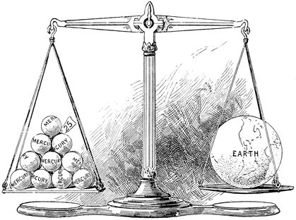
We hardly know anything about what the globe of Mercury may be like. We can see little or nothing of the nature of its surface. We only make out that the planet is a ball brightly lit by the sun, and we cannot satisfactorily distinguish permanent features on it as we can on some of the other planets.
You will have no difficulty recognising Venus, but you must choose the right time to look for her. In the first place, never expect to see Venus very late at night. Look for the planet in the evening as soon as it is dark, towards the west; or in the morning, a little before sunrise, towards the east.
I do not say you can always see Venus, either before sunrise or after sunset. For a large part of the year the planet is not to be seen at all. You should therefore consult the almanac, and unless you find Venus given as an evening star or a morning star, you need not trouble to look for her.
I may tell you, too, that Venus can never be an evening star and a morning star at the same time. If you can see her this evening after sundown, there is no use getting up early tomorrow to look for her again. She will stay a splendid object after sunset for several weeks, then gradually disappear from the west, and a couple of months later she will be the morning star in the east.
Venus takes a year and seven months to run through her changes; so if you find her a bright evening star tonight, you may be sure she was a bright evening star a year and seven months ago, and that she will be one again a year and seven months from now. And never expect to see her right overhead: she is always to the west or to the east.
The splendour of Venus at her best will save you from mistaking the planet for an ordinary star. She is then more than twenty times as bright as any star in the heavens. The most conclusive proof of her unrivalled brightness is that she can be recognised in broad daylight without a telescope: even on the brightest June afternoons the lovely planet can sometimes be made out, like a scrap of white cloud on the perfect blue of the sky.
Venus is so brilliant that you will perhaps hardly believe me when I tell you she has no more light of her own than a stone has, or a handful of earth, or a button. Is it possible, you will say, that this can be so? We see the planet looking so exquisitely beautiful — how can she be merely a huge stone high up in the heavens?
The fact is that Venus shines by light that is not her own, but falls on her from the sun. She is lit up just as the moon is, just as our own earth is; her radiance comes simply from the sunbeams falling on her. It seems surprising at first that mere sunbeams should be able to give her the brilliance that is sometimes so striking. Let me show you an illustration which I trust will convince you that sunbeams are quite equal even to the glory of Venus.
Here is a button. I hang it on a piece of fine thread; and when I dip it into the beam from the electric lamp, look at the brilliance with which our mimic planet glitters. You cannot see the shape of the button — it is too small for that — you merely see it as a brilliant gem radiating light all round. We need not be surprised, then, to learn that the brightness of the evening star is borrowed from the sun; and that if, while we were looking at the planet in the evening, the sun were suddenly put out, the planet would vanish from view too, though the stars would shine as before.
This is how we explain the appearance of Venus. The evening star is a beautiful luminous point, but it has no shape that the unaided eye can make out. Turn the telescope on Venus, however, and we have the delightful spectacle of a tiny moon going through its phases just as our own satellite does.
When she is first seen as an evening star, Venus will often look like the moon at the quarter, and then she will pass to a crescent shape. The crescent gradually grows thinner, and then follows a short spell of invisibility before Venus appears as the morning star.
It seems a little strange at first that Venus should not be full when she is brightest, as the moon of course is when it shows a complete circle of light. In fact, when she is brightest the planet has a very marked crescent shape; but at that time she is so near us that the gain in brilliance from the reduced distance more than makes up for the small part of the lit side that is turned our way.
You ought all to try to get someone to show you Venus through a telescope. A very large instrument is not necessary, and I feel sure you will be delighted to see the beautiful moon-shaped planet. You will then have no difficulty in understanding that the brightness of the planet comes from the sun, and that the changes in the crescent depend simply on how much of the lit side is turned towards us. If Venus were herself a sun-like body we should of course see no crescent at all, but only a bright circle of light.
In Figure 50 you will see an imaginary picture of a young astronomer surveying Venus with a telescope. I have obviously not attempted to draw the various objects in their true proportions. The sun is supposed to have set, so his beams do not reach the astronomer: night has begun at his observatory. But the sunbeams fall on Venus and light up the side of her turned towards the sun; part of that lit side is of course seen by the telescope he is using, and so the planet appears to him as a crescent of light.
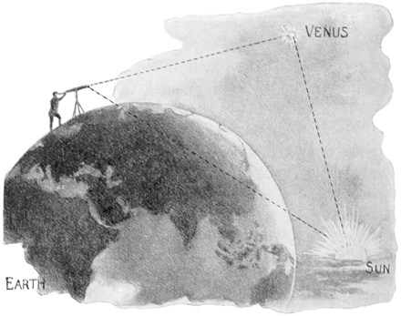
We might naturally suppose from Figure 46 that Venus must pass directly between the earth and the sun at every revolution, and therefore that what is called the transit of Venus across the sun ought to happen each time between her appearance as the evening star and her next appearance as the morning star.
No doubt on each of those occasions Venus does seem to approach the sun closely; but the orbits of Venus and the earth do not lie quite in the same plane, so the planet usually passes just above or just below the sun, and it is a very rare event indeed for her to come right in front of him.
But it does happen sometimes. It happened in the year 1874, for instance, and again in 1882. Alas, I cannot hold out to you the prospect of ever seeing another such spectacle. There will be no further transit of Venus until the year 2004 — though there will be another eight years after that, in 2012.
It seems rather odd that one transit of Venus should be followed by another after an interval of eight years, and that then much more than a century must pass before a similar pair comes round again. This is because of a curious relation between the motion of Venus and the motion of the earth, which I must try to explain with a little illustration.
Suppose a clock with the ordinary numbers round the dial, but arranged so that the slowly moving short hand takes 365.26 days to go once round, while the faster long hand goes round in 224.70 days. The short hand then goes round once in a year, and the long hand once in a revolution of Venus.
Suppose both hands start together from XII. In 224.70 days the long hand is back at XII, but the short hand will only have got round to about VII; and by the time it reaches XII the long hand will have completed a good part of a second circuit.
Now it happens that the two numbers 224.70 and 365.26 are very nearly in the ratio of 8 to 13. Indeed, if the numbers had been 224.8 and 365.3 they would be exactly in the proportion of 8 to 13. It follows that eight revolutions of the short hand must take very nearly the same time as thirteen revolutions of the long one. So after eight years the short hand will of course be found at XII again — and at that same moment the long hand will also be back at XII, having completed thirteen revolutions.
We can now understand why transits, when they do happen, generally come in pairs eight years apart. Suppose that at a certain moment Venus happens to place herself directly between the earth and the sun. When eight years have gone by, the earth is of course back at the same place for the eighth time since that transit, and Venus has returned to almost the same spot for the thirteenth time. The two bodies are practically in the same state as at first, so Venus comes between us again and the planet is seen as a black spot on the sun's surface.
We must not push this argument too far. The relation between the two periods of revolution is nearly, but not exactly, 8 to 13. The consequence is that when another eight years have passed, the planet goes a little above the sun or a little below it, and so a third transit is missed for more than a century. The next one takes place at the opposite side of the path.
We were fortunate enough to see the transit of Venus of 1882 from Great Britain — or part of it, I should say, for the sun had set long before the planet had finished its journey across the disc. Venus looked like a small round black spot stealing in onto the bright surface of the sun and advancing gradually along the short chord that formed her track.
An immense amount of trouble was taken in 1882, as in 1874, to observe this rare event. Expeditions were sent to various places over the earth where the circumstances were favourable. I do not suppose there was ever any other celestial event that aroused so much interest.
The reason it attracted so much attention was not only its beauty or its rarity: it was that the transit of Venus gives us a valuable means of finding the distance of the sun. When observations of the transit made at opposite sides of the earth are brought together, we can calculate from them the distance of Venus; and knowing that, we can find the distance of the sun, and the distances and sizes of the planets.
This is very valuable information, though you would have to read some rather hard books on astronomy to understand clearly how the transit of Venus tells us all these wonderful things. I may say, however, that the principle of the method is really the same as the one we used in the first lecture with the two cards and the base-line. And when you remember that neither we, nor our children, nor scarcely even our grandchildren will ever see another transit of Venus, you will perhaps not be surprised that we tried to make the most of the ones that fell in our own time.
Although Venus shows such pretty crescents in the telescope, I must say that in other respects a view of the planet is rather disappointing. She is dressed in such a very bright suit of sunbeams that we can see little more than the sunbeams themselves, and can hardly make out anything of the real nature of the planet underneath. We can sometimes detect faint markings on the globe, but it is impossible even to guess what the country of Venus is like. This is greatly to be regretted, for Venus comes comparatively close to the earth and is a world so like our own in size and other circumstances that we feel a legitimate curiosity to know more about her.
The markings, faint as they are, have nevertheless been definite enough to let some sharp-sighted astronomers answer a question of much interest. They have made it plain that in one most important respect Venus is very unlike our earth. Our globe of course turns on its axis once a day, whereas Venus takes no less than 225 days for each rotation. In fact she turns in such a way that she always keeps the same face to the sun. The inhabitants of Venus will therefore find perpetual day on one side of their globe and everlasting night on the other.
Venus is one of the few globes that might conceivably be the home of beings not very different from ourselves. In one respect especially — that of weight — she resembles the earth so closely that the bodies we actually possess would probably serve, so far as strength goes, for living on the sister planet. Our present muscles would not be needlessly strong, as they would be on the moon, nor should we find them too weak, as they would certainly prove on one of the very heavy bodies of our system.
Nor need the temperature of Venus be thought to present any insuperable difficulty. She is of course nearer the sun than we are; but climate depends on other conditions besides nearness to the sun, so the question whether Venus would be too hot for us could not be settled offhand. The composition of the atmosphere surrounding the planet would be the most material point in deciding whether beings from the earth could live there. I think it in the highest degree unlikely that the atmosphere of Venus should happen to suit us in the necessary particulars, and therefore I think there is not much likelihood that Venus is inhabited by any men, women or children resembling those on this earth.
The path of the earth lies between the orbits of Venus and Mars. It is natural for us to try to learn what we can about our neighbours; we ought at least to know something of the people who live next door on either side. But I have already said that we cannot observe very much on Venus. With Mars the case is very different. He is a planet we are fortunately able to study minutely, and he is full of interest when we examine him through a good telescope.
We must of course wait for the right season for observing Mars, since he is not always visible. Such seasons come round about every two years, and then for months together Mars is a brilliant object in the sky every night. Nor need he be looked for in the early morning or just after sunset, in the way we have described for Venus and Mercury. When Mars is at his best he reaches his highest point at midnight, and he can generally be seen for hours beforehand and followed for hours afterwards.
You may, however, find some difficulty in recognising him: you probably would not at first be able to tell Mars from a fixed star. He is a ruddy object, no doubt, but some stars are ruddy too, and at best that is a very insecure way of identifying him. I cannot give you any more general directions, except that you should get your papa to point Mars out to you the next time he is visible. It is just conceivable that papa himself may not know how to find Mars — in which case, the sooner he gets a set of star maps and starts teaching himself, and you, the better it will be for you both.
Mars, though he looks so like a star, differs in some essential points from any star in the sky. The stars proper are all fixed in their constellations and never change their positions relative to one another. The groups that form the Great Bear or the Belt of Orion do not alter; they are just the same now as they were centuries ago.
With a planet like Mars it is very different. The very word planet means a wanderer, and it is justly applied — for instead of staying permanently in any one constellation, Mars goes constantly roaming from one group to another. He is a very restless body. Sometimes he pays his respects to the heavenly Twins and is found near Castor and Pollux in Gemini; then he goes off for a brief stay with the Bull, though it looks as if that fierce animal got tired of his company and drove him off to the Lion. His quarters then become more perilous still. Sometimes it looks as though he wanted to seek peace beneath the waters, and so he visits Aquarius; at other times he is found in dangerous proximity to the claws of the Crab.
Mars cannot even make up his mind to run steadily round the heavens in one direction. Sometimes he will bolt off rapidly, then pause a while and turn back again; then the original impulse returns and he resumes his journey the way he first intended.
It is no wonder I cannot give you very explicit directions for catching sight of a truant whose wanderings are apparently so uncertain. Yet there is a definite order underneath all his movements. Astronomers who make it their business to study Mars can follow him on his way. They know exactly where he is now and where he will be on every night for years and years to come. The people who make the almanacs come to the astronomers for hints about what Mars intends to do, so that the almanacs announce the positions the planet will be found in as regularly as if he were in the habit of behaving with all the orderly propriety of the sun or the moon.
We must not lay all the blame for these eccentric movements on Mars. Our earth is very largely responsible. What we take for the vagaries of Mars is often to be explained by the fact that we ourselves on the earth are shifting rapidly about and changing our point of view.
I was driving down a pretty country road with a little girl of three beside me when I was addressed with the remark: "Look at the tree going about in the field."
Now you and I, with our longer experience of the world, know that it is not the custom of trees to take themselves up and walk about fields. But this was what the little girl saw — or rather what she thought she saw; and very often what we do see is something very different from what we think we see. We think we see Mars performing all these extraordinary movements, just as the little girl thought she saw the tree moving about. But just as that little girl, when she grew into a big girl, found that what she took for a tree walking across a field must really have some quite different explanation, so we too find that what Mars seems to do is one thing, and what Mars actually does is quite another.
Let us see what the little girl noticed. She was looking at the tree, and first she saw it on one side of the house and then on the opposite side (Figure 52). Had it been a cow instead of a tree, the natural supposition would of course have been that the cow had walked. Our little friend may have thought it unusual for a tree to walk; but still, she had seen the undoubted fact that the tree had shifted to the other side of the house, and so — remembering, perhaps, what a cow could do — she said the tree had moved.
The little girl did not stop to reflect that she herself had entirely changed her position, and that was where the surprising phenomenon of a walking tree came from. You will understand it at once from the two positions of the carriage shown here. In the first, as the girl looks at the tree, the dotted line shows the direction of her glance; the other dotted line shows how the apparent places of tree and house have altered. It is her change of place that has worked the transformation. Notice too that the tree appeared to her to move in the direction opposite to the one she was travelling in.
Mars generally appears to move among the stars from west to east; and indeed, if we viewed him from the sun he would always seem to move that way. But at certain seasons our earth is sweeping past Mars very fast, and this makes him appear to move the other way. This apparent motion is sometimes so much greater than his real motion that it can give us an entirely wrong idea of what the planet is actually doing.
So although Mars is moving one way, he may appear to us who live on the earth to be going the other. The illusion only lasts a short time, just when we are passing him, as we do every two years. Its effect is to make the path he follows at that season something like the one shown in Figure 53. The planet is nearest to us while he is moving in this loop, and is then seen at his best in the telescope — so it is especially interesting to watch Mars through this critical part of his career.
I want to show you a little calculation which explains the rule by which the good seasons for seeing Mars follow one another. The time he needs for a voyage round the sun is not quite two years, for that would be 730 days, and Mars takes only 687 days for his journey. It is true, however, that 1-15/17 years is very nearly his period; and so every 32 years Mars completes 17 rounds. From this we can work out how long it takes, after the earth has once passed Mars, before they pass again.
Suppose there is a circular course round which two boys start together to run a race. One is such a good runner that he gets right round in 17 minutes; the other can hardly run more than half as fast, and needs 32 minutes to complete one circuit. Here, then, is the question: if the two boys start together, how long will it be before the faster gains a whole lap on the slower?
By the time the good runner (A) has finished one circuit, the slow runner (B) has only got a little more than halfway. When A has finished his second circuit he has run for twice 17 minutes — that is, 34 minutes — which is two minutes longer than B needs to get round once. So B is only ahead by a distance A could cover in about one minute. But during that minute B advances a distance A will need another half-minute for; during that half-minute B covers a distance needing a further quarter; and so on. All these intervals — one minute, half a minute, a quarter, an eighth, a sixteenth, and so on — added together come to two minutes; and so B will not be overtaken until about two minutes after A has finished his second lap, that is, at 36 minutes altogether.
We can pass from this illustration to the case of Mars and the earth. The earth's orbit is travelled in a year; and so, after the earth has once passed Mars — when the planet is, as astronomers say, in opposition — about two years and an eighth of a year, that is two years and six or seven weeks, will go by before Mars is favourably placed again. You will see, then, that we must not expect to observe Mars under the best conditions every year. Besides, the distance of the planet from the earth at opposition varies so much that some oppositions are far more favourable than others.
The time has come when I must tell you something about the shapes of the paths in which the earth and the other planets make their great journeys round the sun. Perhaps you will think I am about to contradict some of what I have told you already. I have often drawn the orbits of the planets as circles, and now I am going to tell you that this is not correct.
The fact is that the paths are nearly circles, but there is still some departure from the exact circular shape. Mars in particular moves in a path that differs from a circle more than the earth's does, so it is a good moment to bring the subject up while we are busy with Mars.
We must first take another lesson in drawing, and the things I want you to use are very simple: a smooth board and some tacks or drawing-pins, besides paper, pencil and twine.
First lay a sheet of paper on the board and push two tacks through the paper into the board. It does not much matter where you put them. Then take a piece of twine and tie the two ends together to make a loop, and pass the loop round the two tacks (Figure 54). I put the pencil inside the loop, and now you see I move it round, taking care to keep the twine stretched — and so I produce a pretty curve which we call the ellipse.
I must ask all of you to practise this. Try different lengths of string, and try different distances between the tacks. Here are sketches of two shapes of ellipse and a parabola (Figure 55). Elliptical curves can be made almost circular by putting the two tacks close together, or made very long in proportion to their width. They are all pretty and graceful figures, often useful in ornamental work; an ellipse is a pretty shape for a flower bed in a lawn.
The ellipse matters more to astronomers than any other geometrical figure. All the planets, as they make their long and unceasing journeys round the sun, move in ellipses; and though these ellipses are very nearly circles, the difference is quite appreciable.
It is also important to notice that the sun is not at the centre of the ellipse the planet describes. The sun is nearer one end than the other, and its actual position must be carefully noted. Suppose some mighty giant were setting out to draw an exact path for the earth, or for Mars. He would of course need millions of miles of string to produce a curve big enough — and one of the nails he used would have to be driven right into the sun.
The astronomer states the facts more precisely. He calls each of the points marked by the tacks, round which the string is looped, a focus of the ellipse; the two together are the foci; and as the planet describes its orbit, the sun lies exactly at one of the foci.
The ellipse is a curve nature is very fond of reproducing. A brilliant beam spreads out from an electric light; hold a globe in the beam and let its shadow fall on a sheet of paper, and the shadow is an ellipse. Hold the sheet square-on and the shadow is a circle; tilt it, and you get a beautiful oval; and by gradually changing the position you can get a greatly elongated curve. Indeed you can produce an ellipse of almost any form this way. The electric light is not essential either: any ordinary bright lamp with a small flame will do, and by taking balls of different sizes and putting them in various positions you can make ellipses great and small.
It was through the observations of a celebrated old astronomer named Tycho Brahe that the true shape of a planet's path came afterwards to be determined. Tycho lived in the days before telescopes were invented. He had few of the excellent measuring contrivances we have in our observatories. Let us take a look at this fine old astronomer as he sits among his curious astronomical machines.
He lived on an island near Copenhagen, and he has left us a picture of himself (Figure 56), seated among his quaint apparatus with his assistants around him, busily engaged in observing the heavens. You see that the walls of his observatory are decorated with pictures, and that one of the great Danish hounds the King of Denmark gave him lies asleep at his feet. I do not think we should encourage big dogs in the observatory at night nowadays. Nor do modern astronomers put on velvet robes of state, as Tycho is said to have done when he went into the presence of the stars, to show his respect for the heavens. Astronomers today rather prefer a comfortable coat that will keep out the cold, whatever it may look like from the picturesque point of view.
In this wonderful contrivance, you see, Tycho used no telescope at all. He observed through a small opening in the wall; and in case there should be any doubt about what is going on, you see him pointing towards it and giving his three assistants their instructions.
The most important work is being done by the man on the right, who is making the actual observation. But he has no help from magnifying lenses. All he can do is slide a pointer up or down until it is just in line with the planet or star as he sees it through the hole opposite.
A number of marks have been engraved on the circle, with numbers set against them, and it is by these that the position of the object is found. If the object is high, the pointer will be low; if the object is low, the pointer will be high. The observer calls out the position when he has it — and there, you see, is a man ready with writing materials to take the observation down. Notice too the other astronomer watching the clock: he gives the time, which must also be recorded accurately.
In fact the whole process of finding the place of a heavenly body consists of two observations, one from the circle and one from the clock; so although Tycho had no telescope to help his sight, the principle his work was done on is the same as the one we use in our observatories at this moment.
You may think such a contrivance could hardly produce much reliable work. But Tycho made up in great measure for the imperfection of his instruments by the skill with which he used them. He had a noble determination to do his very best; and perseverance will work wonders even with very imperfect means. A great astronomer has said that a skilful observer ought to be able to make valuable measurements with a common cart-wheel.
It was with instruments on the principle of the one I have shown you that Tycho made his celebrated observations of Mars. Week after week, month after month, year after year, the patient old astronomer tracked the planet through his capricious wanderings.
Before we try to explain anything, we must of course find out as accurately as we can what the thing actually is. So when we set out to explain the irregular movements of a planet, the first thing to do is to examine carefully what those irregularities are. That is what Tycho strove to do with the best means at his disposal.
The full benefit of Tycho's work was realised by Kepler, when he began to search out what kind of figure Mars was moving in. First he tried various circles; then he tried putting the centre in different positions, to see whether that would account for the irregularities of the wayward planet. It would not do — the movement was not circular.
This was thought very strange in those days, for the circle was held to be the only perfect curve, and it was considered quite impossible that a planet should have any but the most perfect of motions. But there was no help for it; so Kepler shrewdly tried the ellipse, which he considered the most perfect curve after the circle. He went on with his long calculations until at last he found one particular ellipse, placed in one particular position, which would exactly explain the strange wanderings of our erratic neighbour.
Nor was it only that the planet's motion traced out an ellipse: it was further discovered that the sun lies at one of the foci of the curve. Had the sun been anywhere else, the motion of the planet would have been different from what Tycho had found it to be.
You must understand that this discovery is one of the very greatest ever made in the whole range of human knowledge. Once it had been proved that the orbit of Mars was an ellipse, it became plain that the same path must be traced by every planet. There are very big planets and small ones; there are planets that move in very large orbits and planets whose paths are comparatively small. In every case the high road the planet follows is invariably an ellipse, and the sun is invariably to be found at the focus. It is surely interesting that these beautiful ellipses, which we can draw so simply with a piece of twine and a pencil, should be the very same figures that our great earth and all the other bodies revolving round the sun are for ever obliged to follow.
Kepler made another great discovery on the same subject. If a planet moved in a circle with the sun at the centre, there would be very good reason to expect it always to move at the same speed, for there would be no reason for it to go faster in one place than another: it would always be at the same distance from the sun, and every part of its path would be exactly like every other part. But when we consider that the motion takes place in an ellipse, so that the planet is curving round more sharply at the ends of its path than in the parts where the curvature is gentler, we have no reason to expect the speed to stay the same all the way round.
We know that the driver of a railway engine always has to slacken speed when going round a sharp curve. If he did not, his train would very likely run off the line and a dreadful accident would follow. The engine-driver knows well that his pace depends on the curvature of his line.
The planet finds it too must pay attention to the curves — but the extraordinary thing is that the planet does exactly the opposite of what the engine-driver does. The planet puts on its highest speed at one of the most critical curves of the whole journey.
There are two specially sharp curves in the planet's path, namely the two ends of the ellipse it follows. The cautious engine-driver would creep round both with equal care; and the planet does indeed go slowly enough round the end of the ellipse furthest from the sun. Its pace there is slower than anywhere else. But from that moment on, the planet steadily applies itself to getting up more and more speed. As it crosses the comparatively straight part of the celestial road the pace is always accelerating, until the sharp curve near the sun is coming up; then the velocity grows more and more alarming, until at last, in utter defiance of every rule of engine-driving, the planet rushes round one of the worst parts of the orbit at the highest possible speed. And yet no accident happens, though the planet has no nicely laid rails to keep it on the track.
If rails are needed to save a railway train from destruction, how can we possibly escape when we have no such help to keep us from flying away from the sun into infinite space?
Kepler taught us to measure the changes in a body's speed precisely. He showed that the planet must, at every point of its long journey, have exactly the right speed, or everything would go wrong.
I dare say you have seen boards put up here and there along a railway line with notices like "Ten miles an hour" on them. These are of course a warning to the driver not to depart from the speed stated. Kepler has given us a law equivalent to a great many caution boards set all round the planet's path, showing the safe speed for every stage of the journey. It is fortunate for us that the planet is careful to observe the regulations. If the earth left her track, the consequences would be far worse than the most frightful railway accident that ever happened — and whichever way we went would be about equally disastrous. If we went inwards we should plunge into the sun; if we went outwards we should be frozen with cold.
We owe our safety to the care with which the earth's speed is prescribed. When near the sun the earth is pulled inwards with exceptionally strong attraction. We are often told that when a strong temptation seizes us, the wisest thing to do is run away as hard as we can; and that is precisely what the laws of dynamics make the earth do at this critical time. She puts on her very best pace, and only slackens when she is well away from the danger.
The peril we face at the other end of the orbit is of the opposite kind. We are then a long way from the sun, and the pull it can exert on the earth is correspondingly weakened. Care is needed then in case we should escape altogether from the sun's warmth and his guidance. So we must give the sun time to exert his power and call the earth back; and accordingly we move as slowly as possible, until the sun overcomes the earth's inclination to fly off and we begin to return.
You may remember that when we were speaking about the moon I showed you how a body might revolve round the earth in a circle under the influence of an attraction towards the earth's centre. So long as the path is really a circle, the force with which the earth pulls the body stays the same. In just the same way a body could revolve round the sun in a circle, and there too the sun's attraction would stay the same all the way round.
But now we have a much more difficult case to consider. If the body does not always stay at the same distance, the sun's power will not be the same at different places. Whenever the object is near the sun the attraction will be greater than when it is further off. When the distance between the two bodies is doubled, for instance, the pull is reduced to a quarter of what it was before.
I have now some great discoveries to tell you about, made by Sir Isaac Newton. He was not an astronomer who looked much through a telescope, though he made many remarkable experiments. He used to sit in his study and think, and then draw figures with his pencil and make long calculations. At last he was able to answer these questions: what is the reason a planet moves in an ellipse? Why should it move in this curve rather than any other? And why should the ellipse be so placed that the sun lies at one of the foci?
If the planet had run uniformly round its course, Newton would have found his task impossible. But I have already explained that the motion is not uniform. I described how the planet hurries along at extra speed at certain parts of its path, and lingers at others; how in fact it never keeps the same rate for a single minute of the whole journey. Kepler had shown how to make a timetable for that journey. Just as the captain on a long voyage keeps a record of each day's run, showing that today he made 170 miles, tomorrow perhaps 200, the next day 210, and the day after fell back to 120, so Kepler gave rules by which the log of a planet on its voyage round the sun could be so faithfully kept that every day's run was accurately recorded.
When Newton began his work, one of the first questions he had to consider was this. Suppose a great globe like a planet, or a small globe like a marble, or an irregular body like an ordinary stone, were thrown out into space and then left to follow its course with no force whatever acting on it — where would it go?
You may say at once that a body in such circumstances will presently fall to the ground; and so of course it will, if it is near the earth. But I am not talking about anything near the earth. I want you to imagine a body far off in the depths of space among the stars. Such a body need not fall down here at all — you see that the moon does not fall, and the sun does not.
If you were a great distance from our globe and from every other large globe — so far off, indeed, that their attractions were imperceptible — you could try the experiment I want to describe. Throw a stone as hard as you can: what happens?
Down here, of course, it moves in a pretty curve through the air and tumbles to the ground. But out in open space, what will the stone do? There will be no such thing as up or down as we ordinarily understand them. The earth no doubt lies in one particular direction, a great way off; but there will be other bodies just as large in other directions, and there is no reason why the stone should move towards one rather than another. If they are all far enough away, as the stars are from us, their attractions are quite imperceptible. There is therefore not the slightest reason why the stone should swerve to one side rather than the other — no more reason to turn right than to turn left.
Nor could you throw the stone so as to make it follow a curved path. You can of course make it describe a curve while it is still in your hand; but the moment it has left your hand it goes on its journey by a law you have no control over. As its direction cannot be turned to one side more than the other, the stone must simply follow a straight line from the instant it leaves your hand.
The speed the stone starts with will not change either. You might at first think it would gradually slacken and finally stop. A stone thrown along the road does behave that way, no doubt; but that is because it rubs against the ground. Throw a stone across a sheet of ice and it will run a very long way before stopping, and all that time it will move in a straight line — for there is little loss from rubbing on ice, because ice is so smooth. So we see that if the path is exceedingly smooth, the body will run a long way before it stops. Think how far a railway train will run if the steam is turned off while it is travelling at full speed on a level line.
All these illustrations show that if you leave a body alone once you have started it, and do not try to pull it this way or that, and do not let it rub against things, then it will go on moving in a straight line at a uniform speed. We can apply this reasoning to a stone out in space: it would certainly move in a straight line, and would go on and on for ever without losing any of its pace.
I need hardly tell you that nobody has ever been able to try this experiment. In the first place we live on the surface of the earth, and have no means of getting up into those lofty regions where the stone is supposed to be thrown. And there is another difficulty we cannot entirely avoid, arising from the resistance of the air. Every movement down here is impeded because the body has to force its way through air, and in doing so it always loses some of its speed. Out in open space there is of course no air, and so no speed can be lost that way.
There are, however, several actual experiments by which we can satisfy ourselves of the general truth. Set a humming-top spinning (Figure 57) and it gradually comes to rest, partly because its point rubs on the table and partly because it has to force its way through the air. Indeed the hum you hear is produced at the expense of its motion.
Suppose I use a much heavier top: set it spinning and it will keep going for many minutes, because its weight gives it a better store of power to overcome the resistance of the air.
I remember hearing a story about Professor Clerk-Maxwell. When he was at Cambridge he had invented one of these large heavy tops that would spin for a long time. One evening the top was left spinning on a plate in his room when his friends took their leave, and no doubt it came to rest in due course. Early next morning, hearing the same friends coming up to his rooms again, Professor Maxwell jumped out of bed, set the top spinning, got back into bed and pretended to be asleep — and so astounded his friends, who of course supposed the top must have been spinning all night long.
If we spin a top under the receiver of an air pump (Figure 58), it will keep going for very much longer once the air has been pumped out than it would in ordinary circumstances. Experiments like these prove that the motion of a body will not naturally die away of itself, and that if we could only keep the interfering forces away altogether, the motion would go on indefinitely at undiminished speed.
What I have been trying to illustrate is called the first law of motion. It is written thus:
"Every body continues in its state of rest or of uniform motion in a straight line, except in so far as it may be compelled by impressed forces to change that state."
I would recommend you to learn this by heart. I can assure you it is quite as well worth knowing as those rules in the Latin grammar which many of you, I have no doubt, are acquainted with.
The best proof of the first law of motion comes not from any experiment but from astronomy. We make a great many calculations about the movements of the sun, the moon and the stars; then we venture on predictions, and we find the predictions come true. We had a transit of Venus across the sun in 1882, and every astronomer knew it was coming, and many went to the ends of the earth to see it in good conditions. Their expectations were fulfilled — they always are. Astronomers make no mistakes in these matters. They know there will be another transit of Venus in the year 2004 and not before. The calculations by which these accurate prophecies are made involve the first law of motion; and since we find such prophecies are always fulfilled, we know the first law of motion must be true as well.
Newton knew that a planet simply left alone in space would go on moving for ever in a straight line. But Kepler had shown that the planet does not move in a straight line: it describes an ellipse. One conclusion was obvious. There must be some force acting on the planet, pulling it away from the straight line it would otherwise follow.
For the sake of illustration we may imagine this force applied by a rope attached to the planet, so that at every moment it is being dragged by some unseen hand. To find which way the rope must lie we take Kepler's law, which gives the rules by which the planet varies its speed. I cannot go into the question fully — it would be too difficult for us to discuss now, and I should have to talk a great deal more about mathematics than would be convenient at present. But I think you can all understand the result Newton was led to. He showed that the rope must always be directed towards the sun.
In other words: suppose there were no sun, but that in the place it occupies there stood a giant strong enough to be constantly pulling at the planet. We should then find the planet's speed altering in exactly the way it actually does. So we learn that some force must reside in the sun by which the planet is drawn — and that this force is exerted although there is no visible bond between the sun and the planet.
There is another fact to be learnt about the sun's attraction, and this time we get it from the shape of the curve the planet follows. The laws governing the planet's speed prove that the force comes from the sun; we shall now learn a great deal more by taking into account that the path is an ellipse with the sun at the focus.
Nothing has been said yet about the size of the pull the sun exerts. Is it always the same, or is it greater at some times than at others? Newton showed that no ellipse other than a circle could be described if the pull from the sun were always the same. Its size must be continually changing, and the nearer the planet lies to the sun the more vehement is the pull it receives.
Newton laid down the exact law by which the force on the planet at any one point of its path can be compared with the force at any other. Suppose the planet is in a certain position, and then passes to a second position twice as far from the sun. The pull at the shorter distance is not merely greater than the pull at the longer distance — it is four times as great. Stating this rather more generally, we say, in the language of astronomers, that the attraction varies inversely as the square of the distance. If this law were departed from, I do not say it would be impossible for the planet to go round the sun somehow; but the motion would not be performed in an ellipse described about the sun at the focus.
You see how very instructive Kepler's laws are. From the first of them we were able to infer that the sun attracts the planets; from the second we have learnt how the size of the attracting force varies.
The true importance of these great discoveries becomes plain when we compare them with what we have already learnt about the movements of the moon. As the moon goes round the earth she is held by the earth's attraction, and follows a path which, though nearly a circle, is really an ellipse. That orbit is described about the earth just as the earth describes its own path about the sun. And the law by which a stone falls to the ground through the earth's attraction is merely one illustration of a great general principle: every body in the whole universe attracts every other body.
Think of two weights lying on the table. They do attract each other, no doubt, but the force is extremely small — so small that you could not measure it with any ordinary apparatus. One or both of the attracting masses must be enormously big for their mutual gravitation to be readily noticeable. The attraction of the earth on a stone is a considerable force because the earth is so large, even though the stone may be small.
Imagine a pair of colossal solid iron cannon-balls, each 53 yards across and weighing about 417,000 tons. If these two globes were placed a mile apart, the pull of one on the other by gravitation would be just one pound weight. Great as these masses are, a child's hand could prevent either ball from moving under the other's attraction. If, however, they were quite free to move and there were absolutely no friction, they would begin to draw together — at first creeping so slowly that the motion would hardly be noticed. The pace would improve slowly, no doubt; but even so, not less than three or four days must pass before they came together.
Through the kindness of Professor Dewar I am able to show you a contrivance that illustrates the motion of a planet round the sun. Here is a long wire hanging from the roof of this theatre with an iron ball at its lower end, made hollow for lightness. When I draw the ball aside it swings to and fro with all the regularity of a great pendulum. But when I put a powerful magnet near it (Figure 59), you see that as soon as the ball comes near the magnet it is violently drawn to one side and follows a curved path. The magnet may be taken to represent the sun, and the ball is like our earth, or any other planet, which would move in a straight line were it not for the sun's attraction drawing it aside.
We shall now say something about the geography of our fellow planet — a subject that seems all the more interesting because Mars is so like the earth in many ways. We need a fairly good telescope to see him well; but when such an instrument is turned on the planet, a beautiful picture of another world is unfolded (Figure 60). There are many things visible on his surface, though we must always remember that even with our most powerful telescopes the planet still appears a long way off.
In the most favourable circumstances Mars is at least a hundred times as far from us as the moon. But we know that an object on the moon must be as large as St Paul's Cathedral to be visible in our telescopes; so an object on Mars must be at least a hundred times as broad and a hundred times as long as St Paul's if astronomers on our earth are to make it out. We can therefore only expect to see the general features of our fellow planet.
If we were looking at our own earth from a similar distance, and with equally good telescopes, the continents and oceans and the larger seas and islands would all be big enough to be conspicuous — though it is doubtful whether they could ever be properly made out through the serious hindrance to vision that our atmosphere would present.
It fortunately happens that the surface of Mars is obscured by cloud only very slightly, so we are able to see a panorama of our neighbouring globe laid out before us. Mars is not nearly as large as our earth, the diameters of the two being nearly as two to one; from which it follows that the number of acres on the planet is only a quarter of the number on the earth.
Careful telescopic scrutiny shows that the chief features we see on Mars are permanent. In this respect Mars is much more like the moon than the sun. The sun presents us with nothing but glowing vapours, hardly more permanent than the clouds in our own sky; whereas the complete absence of cloud from the moon lets us see the permanent features of its surface. Most of the visible features of Mars are unchanging too, although it seems that the climate does occasionally produce some change in its appearance.
The first thing we notice is that there are differently coloured regions on Mars. The darkish or bluish parts are usually spoken of as seas or oceans — though we should be going beyond our strict knowledge to assert that water is actually to be found there.
Look at the horn-shaped object in the centre of the lower picture in Figure 60. We call it the Kaiser Sea, and it is so strongly marked that it can often be seen even in a small telescope. But you must not always expect to see it when you look at the planet through a telescope, for the planet turns round.
We can make a globe representing Mars, with this great sea and the other characteristic objects drawn on it. As we turn the globe, the opposite side of the planet comes into view and other features are revealed, like the ones in the upper figure. Mars takes 24 hours 37 minutes 22.7 seconds to complete a single rotation. It is somewhat remarkable that this differs from the earth's period of rotation by only a little more than half an hour.
Mars has what we call continents as well as oceans, and we also find lakes and seas and straits there. These are marked on the drawings shown here. But the most striking features the planet displays are the marvellous white regions seen at both its north and its south pole (Figure 62).
If we could soar above our earth and take a bird's-eye view of our own polar regions, we should see a white cap at the middle of the Arctic Circle, produced by the eternal ice and snow. It would grow through the long dark winter and be somewhat reduced by melting during the continuously bright summer. We cannot see our own earth that way; but we can sometimes observe one pole of Mars and sometimes the other, and we find each of them crowned with a dense white cap which grows in the severity of its winter and shrinks again with the warmth of the summer that follows.
Sketches of Mars have been made by many astronomers, among them Mr Green, who made a beautiful series of pictures at Madeira in 1877. These may be supplemented by Mr Knobel's drawings of 1884, when the opposite pole of the planet was turned towards us. The drawings show the polar snows, and there seem to be some elevated districts in those Martian arctic regions which keep a little patch of snow after the main body of the ice cap has shrunk within its summer limits. An interesting case of this kind is shown in Figure 62, copied from one of Mr Green's drawings.
It has lately been suggested that the continents of Mars are occasionally flooded with water. There are also signs of clouds hanging over the Martian lands, though in this respect the inhabitants of that planet get off much better than we do. A certain amount of atmosphere always surrounds Mars, though far less of it than we have here.
As to the composition of that atmosphere we know nothing. For all we can tell it might be a gas so poisonous that a single breath would be fatal to us; or, if it held oxygen in much greater proportion than our own air, it might be fatal simply from the excitement to our circulation that an over-supply of stimulant would produce. I do not think it in the least likely that our lives could be supported on Mars, even if we could get there. We need certain conditions of climate as well, and those would probably be entirely different from anything we should find on Mars.
Many remarkable observations of Mars have lately been made by Mr Percival Lowell. It now seems very doubtful how far our former division of the planet into continents and oceans can be maintained. Mr Lowell has paid particular attention to a wonderful system of lines on its surface, to which the name of "canals" has been given, and which often show such regularity as would almost suggest that they had been laid down under intelligent guidance.
When Mars appeared in his full splendour in 1877, he was for the first time honoured with the notice of instruments capable of doing him justice. I do not mean that he had not been carefully observed at earlier appearances; but a great improvement had recently been made in telescopes, and so it was under specially favourable auspices that his return was welcomed in 1877. That year will always be celebrated in astronomical history for a beautiful discovery made by Professor Asaph Hall, the illustrious astronomer at Washington.
Before I can explain what the discovery was, I must have a little talk about moons — or satellites, as they are often called. You know that we have one moon, constantly going round the earth and accompanying it on its long voyage round the sun. But the earth is only a planet, and there are many other planets which are worlds like ours. It is natural to compare these worlds; and since we have one moon, why should the other planets not have moons too? If there are children in one house in a square, why should there not be children in the other houses?
We find that some of the other planets do have satellites, but they do not seem to be handed round very evenly. In fact they are allotted about as capriciously as children would be in eight houses taken at random.
At Number One there lives an old bachelor, and at Number Two a single lady. These are Mercury and Venus, and of course there are no children in either house.
Number Three is inhabited by old mother Earth, and she has a fine big son called the Moon.
Number Four is a nice little house inhabited by Mars. A pair of little twins are to be found there, and nimble creatures they are.
Number Five is a great mansion. A very big man lives here called Jupiter, with four robust sons and daughters that everybody knows. I fancy they must go to a great many dancing parties, for every night they can be seen whirling round and round. These four moons have been known to astronomers for three hundred years; but in 1892 there was an addition to the family, in the shape of a tiny moon that had never been seen before.
Number Six is also a fine big house, not quite so big as Number Five but larger than any of the others. Saturn lives here, and has the biggest family of all. Until the other day, eight sons and daughters were known to live here; but they are nowhere near as sturdy as Jupiter's children. The young Saturns do not make much of a display, and some of them are so delicate that they are hardly ever seen. In this household too a new member has recently appeared: for fifty years the family was known to consist of those eight, but in August 1898, while they were being photographed as a group, it was discovered that a ninth moon had been added.
Number Seven is also a fine large house; but Uranus, who lives there, is such a recluse that unless you keep a careful eye on his house you will hardly ever catch a glimpse of him. There are four children in that house, I believe, but we hardly know them. They move in circles of their own and appear to have seen a good deal of trouble.
Only one more house remains — Number Eight, inhabited by Neptune. It contains one child; but we are hardly on visiting terms with this household, and we know next to nothing about it.
Before 1877 Mars appeared to be in the same case as Venus or Mercury: without the dignity of any attendant at all. There was, however, good reason to think Mars might have satellites which we had simply not seen. Since Number Three had one child, and Numbers Five, Six, Seven and Eight had one or more each, it seemed hard that poor Number Four should have none. But it was certain that any satellites Mars had must be comparatively small things — for if Mars had even one considerable moon it would have been discovered long ago.
On that memorable occasion in 1877, Professor Hall discovered that the ruddy planet Mars was attended not by one moon but by two. Their behaviour was most extraordinary. It seemed to him at first almost as though one of these little moons were playing hide-and-seek: sometimes it would peep out at one side of the planet and sometimes at the other.
Here is a picture (Figure 63) showing how the moons of Mars revolve. That is the globe of the planet himself in the middle, turning steadily in a period nearly the same as our own day. But the remarkable point is that the inner moon runs right round the planet in 7 hours 39 minutes. It would seem very strange in our sky to have a little moon that rose in the west instead of the east and galloped right across the heavens three times every day — and that is what Mars has. The outer moon takes a more leisurely journey, needing 30 hours 18 minutes to complete a circuit. If for no other reason than to see these wonderful moons, it would be very interesting to visit Mars.
The satellites of this planet stand in complete contrast to our own moon. In the first place, our moon takes 27 days to go round the earth and is comparatively a long way off, whereas the moons of Mars are much nearer their planet and go round far more quickly. There is another difference too: they are much smaller bodies than our moon. If we represented Mars by a good-sized football, his moons on the same scale would be hardly as big as the smallest grains of shot.
Does it not speak well for the power of telescopes in these modern days that objects as small as the satellites of Mars should be seen at all? Remember, of course, that neither Mars nor his moons have any light of their own; they shine solely by the sunlight falling on them, and are lit just as the earth is, or the moon. The difficulty of observing the satellites is all the greater because they are seen in the telescope close beside so brilliant a body as Mars. The glare from the bright planet is such that when we want to see faint objects like these we have to hide Mars, so as to get a comparatively dark space to search in.
Now that they know exactly what to look for, a good many astronomers have observed the satellites of Mars. A superb telescope is nevertheless required; indeed you could not find a better test of an instrument's excellence than to see whether it will show these delicate objects.
But do not imagine that having a good telescope and a clear sky is all that is needed for making astronomical discoveries. You might just as well say that putting a first-rate cricket bat in a man's hands will ensure his making a grand score. Every boy knows that the bat does not make the cricketer, and I can assure him that the telescope does not make the astronomer either. In both cases there is some element of luck, no doubt. But of this you may be certain: as it is the man that makes the score and not the bat, so it is the astronomer that makes the discovery and not his telescope.
Deimos and Phobos were the names, according to Homer, of the two personages whose duty it was to attend on the god Mars and yoke his horses. A conclave of classical scholars and astronomers appropriately decided that Deimos and Phobos should be the names of the two satellites of the planet that bears his name.
So far we have been talking about large planets which, if not as big as our earth, are at least as big as our moon. But now we must say a few words about a number of little planets, many of them so very small that a million of them rolled together would not make a globe as big as this earth. You cannot see these little objects with the unaided eye, and even with a telescope they look like nothing more than very small stars.
I have often been asked why it is that a telescope lets us see objects, both faint and small, which our unaided eyes fail to show us. Perhaps this is a good opportunity to say a few words on the subject. I think we can explain the usefulness of the telescope by examining our own eyes.
The eye undergoes a remarkable transformation when its owner passes out of darkness into a brilliantly lit room (Figure 64). Here you see two views of an eye, and you notice the great difference between them. They are not meant to be the eyes of two different people, nor the two eyes of one person; they are two conditions of the same eye. They are meant to show two states of a collier's eye: the right shows it when he is above ground in bright daylight, the left when he has gone down the coal pit to his useful work in the dark regions below.
I remember when I went down a coal pit I was lowered down a long shaft, and when we reached the bottom a safety lamp was handed to me. The gloom was such that at first I found some little difficulty in guiding my steps; but the capable guide beside me said in an encouraging voice, "You will be all right, sir, in a few moments — you will get your pit-eyes." I did get my pit-eyes, as he promised, and was able to see my way well enough to enjoy the wonderful sights that are to be met with in the depths below.
The change that came over my eyes is the one these two pictures illustrate. The black round spot in the centre is an opening covered by a transparent window, through which light enters the eye. That black spot is called the pupil, and nature has provided a beautiful contrivance by which it can be made larger or smaller, so as to keep vision comfortable.
When there is a great deal of light we limit how much gets in by contracting the pupil to make the opening smaller; so the picture with the small pupil shows the collier's eye above ground in bright sunlight. When he goes down into the pit, where light is very scarce, he wants to grasp every scrap of it he can, and so his pupil enlarges to make a wider opening. That is what he calls getting his pit-eyes.
But you need not go down a coal mine to see the use of the iris — for so that pretty membrane surrounding the pupil is called. The same thing can be observed every time you pass from light into darkness. Turn down the lamps in a room so that we are in comparative darkness, and our pupils gradually widen; turn them up again and the pupils begin to contract.
Other animals have the same contrivance in their eyes. You may notice at the Zoological Gardens how quickly the pupil of the lion contracts when he lifts his eyes to the light. The power of changing the pupil rapidly might well be of service to a beast of prey. Imagine him crouching in deep shade waiting for his dinner: his pupil will of course be wide for want of light. But when he springs out suddenly on his victim in bright daylight, it would surely be an advantage to be able to see clearly at once. So his pupil adjusts itself to the changed conditions with a speed that might not be necessary in creatures of less predatory habits.
These changes of the pupil explain how the telescope helps our eyes when we want to make out faint objects such as the little planets. Such bodies are invisible to the unaided eye because our pupils are not large enough to grasp light enough for the purpose. Even opened to the utmost, they need something to let them open wider still. We must therefore borrow help from some device that will have the same effect as enlarging the pupil beyond the limits nature has actually given it. What we want is something like a funnel, to turn a broad beam of rays into a narrow one.
Let me explain what I mean with an illustration. Suppose it is raining heavily and you want to fill a bucket with water. Put the bucket out in the middle of a field and it will never fill; but bring it to where the rain-shoot from a house roof is running down, and it will be overflowing in a few moments. The reason of course is that the broad roof of the house has caught a vast number of drops and brought them all together into the narrow shoot, and so the bucket is filled.
In the same way the telescope gathers up the rays of light falling on the object glass and condenses them into a small beam that can enter the eye. We thus have something nearly equivalent to an eye with a pupil as big as the object glass. The effect of a grand telescope amounts to increasing the pupil from the size of a threepenny piece to that of a dinner plate — or even a great deal larger.
An asteroid looks like a tiny star, and indeed the two are very often mistaken for one another. If we could get close to them we should see a wide difference. We should find the asteroid to be a dark planet like our earth, lit only by rays from the sun; whereas the star, small and faint as it may seem, is itself a bright sun, at such a vast distance that it is only visible as a small point. The star is millions of times as far from us as the planet, and utterly different in every respect.
It is a curious fact that the planets should happen to resemble the stars so closely. We can find something like it in quite another part of nature. Visit a good entomological collection and you will be shown some of the wonderful leaf-like insects. These creatures have wings formed exactly to imitate the leaves of trees, with the stalks and veins completely represented. When one of them lies at rest with its wings folded among a number of leaves, it would be almost impossible to see through the disguise.
This mimicry is no doubt an ingenious device to deceive the birds and other enemies that want to eat the insect. There is, however, one test the cunning bird could apply: leaves do not move about of their own accord, and leaf-insects do. If the bird will only have the patience to wait, he will see a pair of the seeming leaves move — and then the deception is a deception no longer, and he gobbles up the poor insect.
In trying to discover the planets we meet exactly the same difficulty as the insect-eating bird. Wide as the true difference between a planet and a star is, there is such a seeming resemblance between them that we are often puzzled to know which is which. The planets imitate the stars so successfully that when one is set before us among myriads of stars, it is impossible to pick it out by its appearance. But we can be cunning. We can watch steadily; and the moment we find one of these star-like points beginning to creep about, we can pounce on it. We know from its movement that it is only disguised as a star and is really one of the planets.
It is not always easy to discover the asteroids even on this principle, for unfortunately they move very slowly. If you have a planet in the field of view, it will creep along so gradually that an hour or more must pass before it has shifted appreciably against the neighbouring stars. The search for such little planets is therefore a tedious business. There are two ways of going about it: the new one, only recently come into use, and the old one. I shall speak of the old one first.
Slow as the body's motion is, given enough time the planet will not merely move away from the stars near it but will travel right round the heavens. The surest way of making the discovery is to study a small part of the heavens now and examine the same place again months or years later.
Memory will not do for this. Nobody could recall all the stars he saw distinctly enough to be confident that the field of the telescope held more or fewer stars on the second occasion than on the first. The only way to do the work is to draw a map of the stars very carefully. This is a tedious business, for the stars are so numerous that even in a small part of the heavens there will be many thousands visible in the telescope, and every one must be entered faithfully in its true place on the map.
That done, the map is laid aside for a season, and then brought out again and compared with the sky. The great majority of the objects will of course be found just as they were before; these are the stars, the distant suns, and our concern at present is not with them.
Sometimes an object marked on the first map will have left a vacant place on the second. That does not help us much, for whatever the object was it has vanished into obscurity, and a new planet could hardly be discovered that way. But sometimes there will be a small point of light on the second map with no corresponding point on the first. Then indeed the astronomer's expectation is roused: he may be on the brink of a discovery.
Of course he watches the little stranger closely. It might be a star accidentally overlooked when the map was made, or possibly a star that has grown brighter in the interval. But here is a ready test — is the body moving? He looks very carefully and notes its position with respect to the stars around it. In an hour or two his suspicions may be confirmed: if the object is in motion, it really is a planet. A few more observations on later days will show its path; and the astronomer has only to satisfy himself that it is not one of the planets already found before he announces his discovery.
The new method of searching for small planets, which has only come into use in recent years, is a very beautiful one, and makes such discoveries far easier than the older way I have just described.
We can take photographs of the heavenly bodies by fixing a sensitive plate in the telescope so that the images of the objects we want fall on it. The method will work for very small stars if, with excellent clockwork and careful guiding, we can keep the telescope pointing steadily at the same spot until the stars have had time to imprint their little images. In this way we get a map of the heavens made in a thoroughly accurate manner. Indeed photography is so delicate for this purpose that the plates show many stars which cannot be seen even with the greatest of telescopes.
Now suppose a little planet happens to lie among the stars being photographed. All the time the plate is exposed the wanderer is of course creeping along; and after an hour — and even longer exposures are often used — it may have moved far enough to ensure being noticed. The plate will show the stars as points, but the planet will betray itself by drawing a streak.
The asteroids now known number between 400 and 500. A few of this host give the astronomer some information, but the majority are objects of only the slightest individual interest. No small planet is worth looking at as a telescopic picture. We should call an asteroid a large one if its whole surface were as great as England or France; many of them have an extent no greater than some of our large counties. A globe just big enough to be covered by Yorkshire — if you can imagine that large county neatly folded round it — would make a very respectable minor planet.
We know hardly anything of the nature of these small worlds; but it is certain that any living beings they could support must be of a totally different nature from the creatures we know on this earth. We can easily prove this by a calculation.
Suppose a small planet a hundred miles across, its diameter being therefore the eightieth part of the earth's. If we were landed on such a globe we should be far more puzzled by the extraordinary lightness of everything than in the similar case of the moon, which I spoke of in the second lecture. Supposing the planet to be made of material of the same density as the earth's, every weight would be reduced to the eightieth part of what it is here.
There would be one curious consequence of living on such a globe. We have heard of attempts to make flying machines, or to give a man wings so that he can soar aloft like a bird; and all such contrivances have failed so far. It may be possible to make a pair of wings a man can fly down with, but flying up again is quite another matter. On a small planet, however, it would be perfectly easy to fly; for as our bodies would seem to weigh only a couple of pounds, we ought to be able to flap a pair of wings hard enough to overcome so trifling a force. I should add that this assumes the atmosphere has the same density as our own.
Life on these small planets would indeed be extraordinary. Take Flora, for example, and consider how a game of lawn tennis might be managed there. The very slightest touch of the racket would drive the ball a prodigious distance before it could reach the ground; indeed, unless the courts were about half a mile long it would be impossible to serve a ball that was not a fault. Nor would much exertion be needed to play, even though the courts covered several hundred acres. As a young lady ran to meet the ball and return it, each of her steps might cover a hundred yards without any extra effort; and should she have the misfortune to fall, her descent to the ground would be as gentle as if she were settling down on a bed of the softest swan's-down.
These little planets are clustered together in one particular part of our system. Inside them are the four inner planets we have already spoken of; outside them are the four outer planets we are shortly to speak of. Between the two groups there was an empty space. It seemed unreasonable that where there was room for planets none should be found; so the search was made, and these objects were discovered. Even now, more and more of them are constantly being added to the list.
Until quite recently every small planet discovered kept within the space between the paths of the major planets Mars and Jupiter. This invariable rule was departed from, however, in the case of one body discovered in August 1898. This little object, known for a time by the provisional name of D Q and now definitely christened Eros, is an exception to the rule. Its average distance from the sun is actually less than that of Mars, and at its nearest it can come within 15,000,000 miles of the earth.
We occasionally get information out of these little bodies; for on their travels through the solar system they sometimes pick up scraps of useful knowledge, which careful examination can draw out of them. One of the most important problems in the whole of astronomy, for instance, is to determine the sun's distance. I have already described one way of doing it, by means of the transit of Venus. But astronomers never like to rely on a single method, so we are glad to find any other means of solving the same problem — and this the little planets will sometimes do for us. Juno on one occasion came very close to the earth, and astronomers in various parts of the globe observed her at the same moment; and when they compared their observations, they had a measure of the sun's distance. I shall not trouble you now with anything so difficult. It is enough to say that for this, as for every similar investigation, the observers were obliged to use the very same principle we illustrated in Figure 5.
Let me rather close this lecture by remarking that we have been considering only the lesser members of the great family that circles round the sun, and that in our next lecture we shall speak of the giants of our system.
Our lecture today ought to give us a very humble view of the size of our earth. Mercury, Venus and Mars may be regarded as the earth's peers — we are slightly larger than Venus and a good deal larger than Mercury or Mars — but all four of these globes are insignificant beside the gigantic planets in the outer parts of our system.
These great bodies do not enjoy the benefits of the sun to the extent we are allowed to. They are so far off that the sun's rays are greatly enfeebled before they can cross the distance. But the gloom of their situation seems to matter little, for it is highly improbable that any of them could be inhabited.
A view of parts of the paths of these four great planets is given in Figure 65. The innermost is Jupiter, which completes a circuit in about twelve years. Then comes Saturn, revolving in an orbit so great that twenty-nine and a half years are needed to finish the journey. Further out still is Uranus, which has a longer journey than Saturn and moves so much more slowly that a man would have to live to the ripe old age of eighty-four for a single revolution of Uranus to be completed in his lifetime. And at the boundary of our system revolves the planet Neptune; a mighty globe, yet one we cannot see without a telescope. It is invisible to the naked eye for two reasons: first because it is so far from the sun that the light falling on it is exceedingly feeble, and second because it is so far from us that whatever brilliance it has is greatly reduced.
Of all these bodies Jupiter is by far the greatest. He is indeed greater than all the other planets rolled into one. The relative insignificance of the earth beside him is well shown by the fact that if you took 1200 globes each as big as our earth and made them into a single globe, it would only be as large as the greatest of the planets. A comparison of the sizes of the earth and Jupiter is shown in Figure 66.
Figure 67 shows Jupiter as seen through the telescope. The first thing you notice is that the outline of the planet is not circular: the vertical diameter in this picture is plainly shorter than the horizontal one. Jupiter is flattened at the poles and bulges at the equator, so that a section through the poles is an ellipse. He is turning rapidly on his axis, and that accounts for the bulge.
We find the planet has taken almost exactly the form it would take if it were actually a liquid. We can illustrate this with a globe of oil poised in a mixture of spirits of wine and water so carefully adjusted that the oil has no tendency either to rise or to sink. Make the globe of oil rotate — which we can easily do by passing a spindle through it — and you see it bulge out into the shape Jupiter and the other planets have taken.
On the picture of the planet you will see shaded bands. These are constantly changing their appearance, and for two reasons. In the first place they change because Jupiter turns so quickly that in five hours the whole of the side facing us has been carried out of sight; in another five hours the original side is back again, for the entire rotation takes about 10 hours — or more precisely 9 hours 55 minutes 21 seconds.
But the bands are not permanent objects in themselves. They have no more permanence than the clouds in our own sky. Sometimes Jupiter's clouds are more strongly marked than at other times, and sometimes they are hardly to be seen at all. From this we learn that the markings we see when we look at the great planet are merely masses of cloud, surrounding and hiding whatever his interior may consist of.
There is one circumstance which shows that Jupiter must be a very different object from the earth, although the two agree in having clouds. What would you think if I told you that we have been able to weigh Jupiter with the help of his little moons, which I shall speak of presently? Those little bodies tell us that Jupiter is about 300 times as heavy as our earth, and we have no doubt about it, for the result has been confirmed in other ways.
But we have found by actual measurement that Jupiter is 1200 times as big as the earth; so if he were made like the earth he ought to be 1200 times as heavy. This is quite plain, I think. If two cakes are made of the same material and one has twice the bulk of the other, it will certainly be twice as heavy. If there are two balls of iron, one twice the bulk of the other, one will of course weigh twice as much. But if a ball of lead has twice the bulk of a ball of iron, the lead will weigh more than twice as much as the iron, because lead is the heavier material.
In the same way, the weights of the earth and Jupiter are not what we should expect from their relative sizes. If the two bodies were made of the same materials, and in the same state, Jupiter would certainly be four times as heavy as we find him to be.
We are therefore led to believe that Jupiter is not a solid body, at least in his outer parts. The masses of cloud that surround the planet seem to be immensely thick; and as clouds are of course light for their bulk, they have the effect of greatly increasing Jupiter's apparent size while adding very little to his weight. There is thus a great deal of mere inflation about this planet, which makes him look much bigger than his actual materials would warrant if he were built like the earth.
These facts suggest an interesting question. Why has Jupiter such an immense atmosphere, if we may call it that? The clouds we are so familiar with down here on the earth are produced by the heat of the sun beating down on the wide surface of the ocean, evaporating the water and raising the vapour to where it forms cloud. Heat is therefore necessary for making cloud; and with clouds as dense and massive as Jupiter's, apparently a good deal more heat would be needed than the moderate clouds of this earth require.
Where is Jupiter to get this heat? Have we not seen that the great planet is far more distant from the sun than we are? In fact the intensity of the sun's heat on Jupiter is not more than a twenty-fifth part of what we get from the same source. We can hardly believe the sun supplied the heat to make those great clouds, so we must look about for an additional source — and it can only be inside the planet itself.
So far as internal heat goes, Jupiter seems to be in much the same state now as our earth was ages ago, before its surface had cooled to its present temperature. Being so much larger than the earth, he has been slower to part with his heat; and the planet seems not to have had time yet to cool enough for water to stay on his surface. So the planet's internal heat supplies an explanation of his clouds.
We may remark, too, that just as the present condition of Jupiter shows us the early condition of our earth, so the present condition of the earth foreshadows the future in store for Jupiter — when he has had time to cool down, and the waters that now exist as vapour are condensed into oceans on his surface.
Every owner of a telescope delights in turning it on Jupiter, both for the spectacle the globe itself affords and for the sight of the wonderful system of moons attending the giant planet. Fortunately the four satellites of Jupiter are within reach of even the most modest telescope, and their incessant changes of position, relative to Jupiter and to one another, give them a never-ending interest for the astronomer.
Compared with the torpid performance of our own moon, which takes a month to complete a circuit of the earth, Jupiter's moons are wonderfully brisk and lively. Nor are they small bodies like the satellites of Mars: the second of Jupiter's satellites is quite as big as our moon, and the other three are very much larger. It is true, though, that they look insignificant beside Jupiter's own enormous bulk.
The innermost of these little bodies flies right round in a period of one day and eighteen or nineteen hours, while the outermost takes a little more than a fortnight — rather more than half the time our moon needs for a complete revolution. Jupiter's satellites are too far away for us to see much of their structure or appearance even with mighty telescopes; it is of course their great distance that makes them look so insignificant. They would be bright enough to be seen as small stars were it not that, lying so close to Jupiter, they are drowned by his overpowering brightness.
It was by means of the satellites of Jupiter that one of the most beautiful discoveries in science was made.
As a satellite goes round the giant planet, it often happens that the little body enters the great planet's shadow. No sunlight then falls on the satellite; and since it has no light of its own, it disappears from sight until it has passed through the shadow and comes out into the sunlight again on the other side. We can watch these eclipses with our telescopes, and there can be no more interesting employment for a small one.
The movements of these bodies are now known so thoroughly that the eclipses can be predicted. The almanacs will tell you when a satellite is calculated to disappear and when it ought to return to view. But when astronomers first began making these computations, a couple of hundred years ago, the little satellites gave a great deal of trouble. They would not keep their time. Sometimes they were a quarter of an hour too soon, and sometimes a quarter of an hour too late. At last, however, the reason for these irregularities was discovered — and a wonderful reason it was.
Suppose there were a number of cannon all over Hyde Park, and that they were all fired at the same moment by electricity. Although the sounds would all be produced simultaneously, you would not hear them all together wherever you stood: the noise from the cannon close at hand would reach your ears first, and the more distant reports would follow.
You can work out how far off a flash of lightning is by allowing a mile for every five seconds between seeing the flash and hearing the peal of thunder that follows. The light and the noise were produced at the same instant; but the sound takes five seconds to cross every mile, whereas the light, by comparison with sound, may be said to travel instantaneously.
That sound travelled at a limited speed was always obvious; but not until the discrepancies arose over Jupiter's satellites was it learnt that light too takes time to travel. Light does travel much faster than sound — about a million times as fast. It goes so fast that it would rush more than seven times round the earth in a single second. So far as distances on the earth are concerned, the time light needs for its journey is imperceptible.
The distances between one heavenly body and another, however, are so enormous that even a ray of light, moving as fast as light alone can move, takes a measurable time on the way. Our moon is comparatively so near that light takes little more than a second to cross the short distance. Eight minutes are needed for light to travel from the sun to the earth: the sunbeams entering our eyes now left the sun eight minutes ago. If the sun were suddenly put out, it would still seem to shine as brightly as ever to the people of this earth for eight minutes longer.
Since Jupiter is five times as far from the sun as we are, the light from the sun to Jupiter takes forty minutes on the journey, and the light from Jupiter to the earth takes something similar. When we look at Jupiter and his moons we do not see him as he is now, but as he was more than half an hour ago — the interval varying somewhat with our changing distance from the planet. Sometimes the light from Jupiter reaches us in as little as thirty-two minutes, sometimes it takes as much as forty-eight; so the journey sometimes needs a quarter of an hour more than it does at other times.
Now we can understand that irregularity in Jupiter's satellites which puzzled the early astronomers. An eclipse sometimes appeared a quarter of an hour before it was expected, because the earth was then as near to Jupiter as it could be, while the calculations had been made from observations taken when Jupiter was at his greatest distance. It was these eclipses of the satellites that first suggested the possibility that light must have a measurable speed. Once that was taken into account, the occasional lateness of the eclipses was found to be satisfactorily explained; confirmation came in from other sources, and so the discovery of the velocity of light was completely established.
Professor Barnard, while studying Jupiter in 1892 with the splendid refractor at the Lick Observatory, saw a very small point of light nearer the planet than the nearest of the four known satellites. Further examination showed that this little object was indeed another satellite; so Jupiter has a fifth moon besides the four that have been known so long. This little body is so small and faint that it can only be made out under the most favourable conditions and with the most powerful telescopes.
Next outside Jupiter, on the frontier of the ancient planetary system, revolves another grand planet called Saturn. His distance from us is sometimes nearly a thousand million miles, and he needs more than a quarter of a century to complete each revolution.
Some people do not pronounce the names of the planets quite correctly. I have heard of a gardener with a taste for astronomy who occasionally begins to talk about the planets Juniper and Citron; probably you will know which he means. The ancients had discovered Saturn to be a planet, for though he looks like a star, his movement through the constellations could not escape notice once attention was paid to the heavens.
In size Saturn is surpassed among the planets only by Jupiter. He is about 600 times as large as the earth; the small object E in Figure 68 shows our earth at its true relative size beside the ringed planet. But Saturn is so far away that even at his best he is never as bright as Venus, or Mars, or Jupiter when they are favourably placed.
On the globe of Saturn we can sometimes see a few bands, though they are faint compared with Jupiter's. There is no doubt that what we see on Saturn is a dense mass of cloud. Indeed he can have comparatively little solid matter inside him, for this planet does not weigh as much as a ball of water of the same size would. Saturn, like Jupiter, must be intensely hot in his interior.
The ring — or rather the series of rings — surrounding the planet is also shown in Figure 68. These appendages are not fastened to the globe of Saturn by any material bond. They are poised in space without any support, while the globe of the planet proper stands symmetrically inside them.
I have made a model showing Saturn with his rings, but I have had to fasten the rings to the globe with little pieces of wire, since there is no mechanical way of poising the rings of a model without support as they are poised around the planet. If we throw the beam of the electric lamp on the little planet, we see the shadow it casts on its own ring. Similar shadows can be seen on the real Saturn in the sky, and they prove that the planet does not shine by its own light but by the sunlight falling on it. Here again we see the wide difference between a planet and a star: if our sun were put out, Saturn and all the other planets would vanish from the sky, while the stars would of course twinkle on as before.
There are three rings round Saturn. They all lie in the same plane, and they are so thin that when they are turned edge-on to us the whole system almost disappears, except in very powerful telescopes. The outer and the inner bright rings are separated by a dark line which can be traced the whole way round. At the inner edge of the inner ring begins that strange structure called the crape ring, which reaches halfway in towards the globe of the planet. The most remarkable thing about the crape ring is that it is semi-transparent: we can sometimes see the globe of the planet through this strange curtain. The crape ring can only be seen with a powerful telescope; the other two are within the reach of very moderate instruments.
For the explanation of the nature of Saturn's rings we are indebted to the calculations of mathematicians. You might perhaps have thought nothing could be simpler than to suppose the rings were stiff plates of solid material. But the question cannot be settled that way. We know the ring could not bear the strain of the planet's attraction if it were a solid body.
I may illustrate the argument with some familiar facts about bridges. Where the span is small — where a road has to cross a railway, a canal or a river — the arch is of course the proper kind of structure. There is a specially beautiful arch over the river Dee at Chester. But for a longer bridge, masonry arches will not do. Where a considerable span has to be crossed, as at the Menai Straits, or a gigantic one, as at the Firth of Forth, arches must be abandoned and iron bridges of a totally different construction used instead.
Arches cannot be used beyond a certain span because the strain on the materials becomes too great for them to withstand. Every stone in an arch is squeezed by intense pressure, and there is a limit beyond which even the stoutest stone cannot be relied on. As soon as the span is so great that the stones are squeezed as hard as is compatible with safety, the size limit for that form of arch has been reached.
Now suppose you stood on Saturn at his equator and looked up at the mighty ring stretching edge-on across your sky. It would rise from the horizon on one side, pass over your head and slope down to the horizon on the other. You would in fact be standing beneath an arch of about 100,000 miles span. Because of Saturn's attraction, every part of that structure would be pulled forcibly towards his surface; and so the materials of the arch, if it were a solid body, would be compressed with terrific force.
It does not really matter that the arch I am speaking of is half of a ring whose other half lies below the globe of the planet. That is only a difference in how the two ends of the arch are supported, and does not affect the question of the pressure on its materials. Nor does the fact that the ring is revolving remove the difficulty, though it undoubtedly lessens it. We know of no solid substance that could endure the pressure; even the toughest steel ever made would bend up like dough under such conditions. We cannot, therefore, account for Saturn's ring by supposing it solid, for no solid would be strong enough.
Do you not remember the old fable of the oak tree and the pliant reed — how, when the storm was gathering, the oak laughed at the poor reed and said it would never be able to stand the blast? But things did not turn out that way. The mighty oak, which would not yield to the storm, was blown down; while the slender reed bent to the wind and took no harm at all.
This gives us a hint as to the true constitution of Saturn's ring. It is not a solid body trying to resist by sheer strength; it is to be explained rather as an exceedingly pliant structure. Indeed I ought not to call it a structure at all. It is rather a multitude of small bodies not in the least joined together. I do not know what size those bodies may be. For all we can tell, they may be no bigger than the pebbles you find on a gravel walk.
Let us see how we might encircle our earth with rings like Saturn's. I shall ask you to provide a sufficiently large number of pebbles; and you must also imagine that I have the means of going up into space, halfway from here to the moon.
Suppose I went up there and simply dropped a pebble. It would of course tumble straight back down to the earth. But if I threw it out with the proper speed and in the proper direction, I could start it off as a little moon, and it would go round and round our earth in a circle. I say a pebble, but it really matters little what size the object is — it might be as small as a grain of shot or as big as a cannon-ball.
Now take another pebble and cast it into a somewhat similar path, taking care that the planes of the two orbits are the same. Each of these little bodies will pursue its journey without interference from the other. Then do the same with a third and a fourth, with thousands and millions and billions of pebbles, until at last the small bodies are so numerous that they almost fill a large part of the plane with a continuous shoal. Each little object, guided entirely by the earth's attraction, will follow its path with undeviating regularity; its neighbours will not interfere with it, nor it with them.
Now let us mark out the limits of our flat shoal of moonlets. First we take away all those lying outside a certain large circle. Then we clear enough of them to leave an empty space between an outer ring and an inner one, and so the two conspicuous rings are made. At the inside of the inner ring we take out pebbles here and there, so as to make that part much less dense than the outer portions, and so produce a semi-transparent crape ring. Then we clear away those that come too close to the planet, and so form a neat inner boundary.
If we could then view our handiwork from another planet, what would our earth look like? The separate pebbles, though individually so small, would by their countless numbers reflect the sun's light so as to produce the appearance of a continuous sheet. We should see a large bright outer ring surrounding the earth, separated by a dark interval from an inner ring; and at the margin of the inner ring the pebbles would be so much more sparsely spread that we should be able to see through them to some extent.
That beautiful system of rings Saturn displays is undoubtedly of the same character as the imaginary system I have tried to describe. No other explanation will account for the facts — especially for the semi-transparency of the crape ring. The separate bodies making up Saturn's rings seem, however, so small that we cannot see them individually. There are some other fine lines running round the rings besides the great division, and these too can be explained by the theory I have given.
Saturn has other claims on our attention besides his rings. He has an elaborate retinue of satellites — no fewer than nine of them; though some are very faint objects, and not nearly as interesting as the system attending Jupiter. The ninth was discovered quite recently by Professor W. H. Pickering of Harvard College Observatory. This little moon, for which the name Phoebe has been suggested, is further from the planet than any of the others. It is a minute object shining as a star of the 15th or 16th magnitude, and goes round the planet in a period of about sixteen months.
Saturn was the last and outermost of the planets known to the ancients. His path lay on the frontier of the solar system as they knew it; and the magnificence of the planet itself, with its attendant lights and its marvellous rings, made it worthy indeed of so dignified a position. These five planets — Mercury, Venus, Mars, Jupiter and Saturn — made up, with the sun and the moon, the seven "planets" of the ancients. They were supposed to complete the solar system; and more than that, the existence of any other member was thought impossible.
In modern times two more planets have been discovered. I am not referring now to those little bodies that run about in scores between Mars and Jupiter. I mean two grand first-class planets, far bigger than our earth. One is Uranus, which revolves far outside Saturn; the other is Neptune, which is further still, and whose mighty orbit takes in the whole planetary system within its circuit. To complete its journey round the sun, no less than 165 years is required.
I must begin the account of this discovery by telling you a little story.
In the middle of the eighteenth century there lived at Hanover a teacher of music named Isaac Herschel. He had a family of ten children, and he did the best for them that his scanty means allowed. William was the fourth of his children, and he inherited his father's talent for music, as most of his brothers and sisters did.
He was a bright, clever boy at school, and made such good progress with his music that by the time he was fourteen he was playing in the military band of the Hanoverian Guards. Then war broke out between France and England; and as Hanover was at that time under the English crown, the French invaded it, and a battle was fought in which the poor Hanoverian Guards suffered terribly. Young Herschel spent the night after the battle in a ditch, and came to the conclusion that he did not like fighting — though he was only a bandsman — and resolved to change his profession.
That was not so easy to do just then, for even a bandsman cannot leave the service in wartime simply because he wishes to. William Herschel, however, showed all through his life that he was not a man to be baffled by difficulties. I do not know whether he asked for leave; at all events he took it. He deserted, in fact, and his friends managed to get him away to England.
He was nineteen when he began looking for a career over here, and he certainly found his prospects in the musical profession very discouraging. But Herschel was very industrious, and at last he was appointed organist of the Octagon Chapel at Bath. He gradually became famous for his musical skill and had numbers of pupils; he used to conduct concerts and oratorios, and became well known in that way throughout the west of England.
Busy as he was with his profession, Herschel kept his love of reading and study. Every moment he could spare from his duties he gave to his books. It was natural that a musician should want to study the theory of music; and to understand that properly you need Euclid and algebra, and indeed the higher branches of mathematics as well. Herschel did not know these things at first — he had had no means of learning them as a boy — so he worked very hard at them as a man. And he studied with such success that he made fair progress in mathematics; after which it occurred to him that it would be interesting to learn something about astronomy.
Once he had begun reading about the stars, he thought he would like to see them, and so he borrowed a telescope. It was only a little instrument, but it delighted him so much that he said he must have one of his own; so he wrote to London to make inquiries.
Telescopes were much dearer in those days than they are now, and Herschel could not afford the price the opticians asked. Here again his invincible determination came to his aid. What was to prevent him making a telescope himself, he asked — and forthwith he set about the attempt.
Perhaps you will think it strange that a music teacher with no special training as a mechanic should embark straight away on so delicate and difficult a task. But it is not really as hard to make a telescope as you might imagine. The amateur cannot make as pretty an instrument as he could buy in the shops — the tubes will not be so beautifully polished, and the finish will be such as a trained workman would be ashamed of — but the essential part of a telescope is comparatively easy to make. At least, that is true of a reflecting telescope, which is the kind Herschel attempted, and succeeded in making.
You must know that there are two kinds of telescope. The commoner one, which you are more familiar with, is called the refracting telescope, and it has glass lenses; it was an instrument built on that principle that we spoke of in a former lecture. The reflecting telescope gets its power from a bright mirror at the lower end, and when you use it you look at the reflection of the stars in the mirror.
It was a reflector of this kind that Herschel set about building, and he threw himself into the task with enthusiasm. His sister Caroline had come to live with him and used to help him at the work. He was so much in earnest that he would rush into his workshop the moment he got home from a concert and, without even taking off his best clothes, plunge into grinding and polishing his mirrors. His sister tried to keep the house as tidy as she could, but Herschel set up a carpenter's shop in the drawing room and turning-lathes in the best bedroom.
At last he succeeded. He made a mirror of the right shape and found that it showed the stars properly. It was not a looking-glass in the ordinary sense, with glass on one side and quicksilver on the other: the mirror Herschel made was entirely of metal, a mixture of two parts of copper to one of tin.
The copper has first to be melted in a furnace, for the metal must be hotter than red heat before it will begin to run. Then the tin has to be carefully added, and the mirror is cast by pouring the molten metal into a flat mould. This gives the rough mirror, which in Herschel's earlier telescopes seems to have been about six or seven inches across and nearly an inch thick.
Copper is a tough substance and tin is tough too, but when they are melted together to make speculum metal, as this alloy is called, they produce an exceedingly hard and brittle material. Remembering that we could never break a copper penny by throwing it down on the paving, it may seem strange that speculum metal should be so very brittle; but a piece the size of a penny would be more brittle than a bit of glass the same size, and when the speculum is cast it will fly to pieces unless it is cooled very carefully.
Here lay one of the difficulties Herschel had to face. Speculum metal must go into an oven as soon as the casting has set, and the heat must then be allowed to fall very gradually.
When the speculum has at last been obtained, there follows the labour of giving it its true figure and polish. It is not only more fragile than glass but quite as hard, so the grinding is a tedious business. First the surface has to be ground with coarse sand and then with emery, made finer and finer until the true figure has been given (Figure 69).
The mirror is then somewhat basin-shaped, but the hollow is very slight. In a mirror six inches across, the depression at the centre would perhaps be no more than a twentieth of an inch. Small as it is, it has to be made exactly: if it were wrong at any point by so much as a tenth of the thickness of this sheet of paper, the telescope would not perform accurately.
The tool used for grinding is of cast iron, turned in a lathe to the right shape, and divided into squares as shown in Figure 70. After the grinding comes the polishing, done with a tool the same shape as the grinder. This has to be covered with little squares of pitch, so that when it is warmed and set down on the mirror it is soft enough to take the right form. Some rouge and water is spread over the mirror and the polisher is worked backwards and forwards by hand until a brilliant surface is obtained.
When the amateur astronomer has finished this part of the task, all the great difficulties of his telescope are conquered. The tube may be made of wood, and a square tube will do just as well as a round one. He must also provide a small mirror for the top of the tube, which has to be perfectly flat. Preparing this needs much care, for it is not as easy as you might suppose to get an accurately flat surface. One way is to take three pieces and grind each pair of them together until every pair touches all over; then they must certainly all be flat. One more part is wanted, an eyepiece, and this presents no difficulty: a single glass lens can be made to answer, and your telescope is complete.
It was in the year 1774 that Herschel first had a view of the heavens through a telescope of his own making. In the early part of his career he does not seem to have made any important discoveries. He was gradually preparing himself for the great achievement that would make his name famous.
It was on the 13th of March 1781 that the organist of the Octagon Chapel at Bath turned his telescope on the constellation of the Twins and began to look at one star after another.
You must know that a star merely looks like a little point in a telescope. Even the greatest instrument will only make a star look brighter; it will never show it with a perceptible disc. Looking over the stars that night, Herschel's attention was arrested by one object which did look larger when magnified, and which therefore was not a star.
The only other objects that would behave in this way were the planets — or possibly a comet. Indeed, Herschel at first supposed that what he saw must be a comet. It could hardly have occurred to him that he was to have the good fortune to discover a new planet. The five great planets had been known from all antiquity; was it reasonable to suppose there could be another that had never been noticed?
Fortunately there was a test available. A star stays in the same place from night to night and from year to year, whereas a planet, as we have already had occasion to mention, is a body that wanders about. But the movements of a planet are not at all like those of a comet; so to settle the nature of Herschel's new body it was enough to observe the character of its motion. A few nights sufficed. Its position was carefully marked against the neighbouring stars, and it was soon shown to be a planet.
Here, then, a great discovery had been made. A new planet, now called Uranus, was added to our system. It would be nothing to discover a new star — you might as well talk of discovering a new grain of sand on the seashore. The stars are in untold myriads, and they are so far off that they have no relation whatever to our system, which the sun presides over. But by detecting a new planet revolving far outside Saturn, Herschel showed that a new and most interesting member had to be added to the five old planets known from the earliest records of history.
You may well imagine that a discovery so startling caused astonishment throughout the scientific world. "Who is this Bath organist?" everybody asked. Accounts of him and his discovery appeared in the papers; his fellow-citizens were not as familiar with the name as we happily are now, and the spelling of the unusual name showed many varieties.
When George III heard of Herschel's great achievement, he ordered the astronomer to be summoned to Windsor so that the King might have an account of the wonderful discovery from the discoverer's own lips. Herschel of course obeyed, and brought with him his famous telescope and a map of the whole solar system to show the King. No doubt he supposed His Majesty had probably not paid much attention to astronomy, and so came prepared to explain whatever the King would need to know before he could fully appreciate the magnitude of the discovery.
You will remember that Herschel, when still a boy, had deserted from the army many years before. It appears the King had somehow learnt this; for when Herschel was shown into his presence, His Majesty said that before the great astronomer could discuss science there was a little matter of business to be disposed of. The King then handed Herschel a paper — in which, I dare say, he was greatly surprised to find a pardon for the deserter, written out by the King himself.
Then Herschel unfolded his wonderful discovery, which the King thoroughly appreciated; and in the evening the telescope was set up in the gardens and the glories of the heavens displayed. Herschel made a most favourable impression on His Majesty; and when the King told the ladies of the Castle next day about everything Herschel had shown him, their astronomical ardour was aroused too, and they asked to look through the marvellous tube.
Herschel was of course ready to oblige, and the telescope was carried to the windows of the Queen's apartments at Windsor, which would have commanded a fine view had the clouds not been in the way — which unfortunately they were. Even for royalty the clouds would not disperse. What was to be done?
Herschel was equal to the occasion. He particularly wanted to show them Saturn, which is one of the most beautiful objects in the sky and will fascinate any intelligent beholder. No astronomer could have seen Saturn through those clouds; but Herschel did not disappoint his visitors. He pointed the instrument not at the sky — there was nothing to be seen there — but at a distant garden wall.
Now what would you expect to see by looking through a telescope at a garden wall? Bricks, perhaps, or ivy. What these ladies saw was a beautiful image of Saturn, his globe in the centre and his rings all complete, so true a likeness of the planet that even an experienced astronomer might have been deceived. Herschel had seen in the afternoon that the clouds were thick and there would be little chance of using the telescope properly; so he had cut out a little image of Saturn, lit it with lamps, and set it up at a suitable distance on the garden wall.
Herschel's visit to Windsor had important consequences. The King said it was a pity so great an astronomer should devote himself to music, and that it would be far better for him to give up that profession and come and live at Windsor. His Majesty promised to pay him a salary, and undertook to meet the cost of building great telescopes as well. His faithful sister Caroline came with him as his assistant, and she too received some bounty from the King. From that moment Herschel gave up all his musical business and devoted himself to the great task of his life, observing the heavens.
He built telescopes on a scale far beyond anything that had been thought of before. He used to stand out in the open air at night from dusk to dawn, gazing down the tube of his mighty reflector, watching the stars and other objects in the heavens as they moved past. He would dictate what he saw to Caroline, who sat near him; it was her business to write down his notes and record the positions of the objects he described. Sometimes, she tells us, the cold was so great that the ink froze in her pen while she was at this work. Until he was a very old man Herschel gave himself up to his astronomical labours. His discoveries are to be counted in thousands, though not one of them was as striking or as important as the detection of the new planet that first brought him fame.
The question of a name for this addition to the sun's family had of course to be settled. Herschel surely had a right to be heard at the christening; and as a compliment to His Majesty he named the stranger the Georgium Sidus. For a brief while the planet was actually called by that name. The Continental astronomers, however, would not accept it. All the other planets were named after ancient divinities, and it was felt that the King of England would look oddly associated with Jupiter and Saturn; perhaps they also considered that the British dominions, on which the sun never sets, were quite large enough already without further extension into the heavens. Accordingly a consultation was held, at the end of which George III was stripped of his planetary honours and the body was given the name of Uranus, which by universal consent it now bears.
The planet Uranus lies just on the verge of visibility to the unaided eye. It can sometimes be glimpsed as a faint star, and with a telescope it is of course readily seen. Many generations of astronomers before Herschel's time had been observing the heavens, making maps of the stars and compiling great catalogues in which their places were accurately set down; and Uranus often came under their notice. But it never occurred to them that something looking so like a star was really a planet.
I have said that Uranus looked unlike a star when Herschel examined it; but that was because Herschel was a particularly skilful astronomer. To an observer of a more ordinary kind Uranus would present nothing very remarkable and would be passed over as a small star. In fact the planet was observed in that way not once or twice but no fewer than seventeen times before Herschel's acute eye perceived its true character. On many earlier occasions it had been noted as a star by astronomers who are in every way entitled to our respect. It took a Herschel, determined to see everything in the very best way, to grasp the discovery that had eluded so many others.
When Uranus was observed on those earlier occasions and mistaken for a star, its place had been carefully recorded. Those records are now of the utmost use, because they show us the planet's past history — and they seem all the more valuable when we remember that Uranus takes no less than eighty-four years to complete a single revolution round the sun. So, since the planet was discovered in 1781, it had completed one revolution by 1865, and is now (1899) about a third of the way round another. The earlier observations reach back almost 200 years, so that altogether we have more or less information about the planet's movements over two and a half circuits.
Uranus is a great deal bigger than the earth, as you will see from the view of the comparative sizes of the planets (Figure 47). It appears to be of a bluish hue; but we cannot tell whether it turns on its axis — or rather I should say we cannot see whether it turns on its axis, for we can hardly doubt that it does.
Despite the great distance of Uranus from the earth, we have been able to put this planet in the weighing scales just as we did the nearer ones, and we assert with confidence that Uranus is fifteen times as heavy as our earth. For this information we are indebted to its satellites.
You must use a very good telescope to see the satellites of Uranus. They are four in number and bear the names Ariel, Umbriel, Titania and Oberon. The innermost, Ariel, completes a journey round the planet in two days and a half; Oberon, the most distant, takes thirteen days and a half.
A planet is always tending to pull its satellite down, and the satellite is saved from falling by the speed at which it revolves. The heavier the planet, the faster its satellites must go round. To take an illustration from our own moon: we know that if the earth were made four times heavier than it is, the moon would have to spin round twice as fast to stay in the same orbit. The speed at which the satellites of Uranus revolve therefore gives us a measure of the planet's mass. If Uranus were heavier than he is, his satellites would go round faster; if he were lighter, they would take longer.
Uranus too seems greatly swollen with cloud, in the same way as Jupiter and Saturn. Indeed, if our earth were as big as Uranus it would weigh four or five times as much as Uranus does. So we are certain that Uranus must be made of materials less dense on the whole than those our earth is made of.
There is another singular circumstance about the moons of Uranus. I have told you that every body revolving round another by gravitation describes an ellipse; but of course there are many different kinds of that curve, and some may be nearly circles. There is nothing whatever to prevent a satellite revolving round its primary in an exact circle, if it is started properly — in the right direction and at the right speed. All four satellites of this planet seem to revolve in circles so perfect that we can draw an accurate picture of the system with a pair of compasses.
It is further to be noticed that the four circles seem to lie exactly in one plane. The orbits of the other great planets, and of their satellites, lie in planes tilted at less than 35° to the ecliptic, the plane the earth moves in. Here again the satellites of Uranus are exceptional: the plane they lie in stands up almost square to the plane in which the planet's own motion is performed. The moons of Uranus seem to have been given a twist by some accident we are not able to account for.
The boundaries of the solar system had been much extended by the discovery of Uranus; but they were destined to be enlarged further still by the detection of another vast planet revolving far outside Uranus, whose orbit forms, so far as we know at present, the outline of the whole planetary system.
I have here to describe one of the greatest discoveries ever made. It is not the magnificence of the outermost planet itself I am referring to, though it is indeed bigger than Uranus. I am thinking rather of the way the discovery was made.
I mean no disrespect to Herschel when I say that the discovery of Uranus was chiefly a stroke of good fortune; but let me put it that way in order to bring out as strongly as I can how utterly different was the train of ideas that led to Neptune. Herschel merely looked at one star after another until he suddenly came upon the planet, having beforehand not the slightest notion that any such planet was likely to exist. But Neptune was shown to exist before it had ever been seen — and indeed the man who first saw the planet, and knew it for a planet, was not its discoverer.
This is rather a difficult subject, and it would take you years of hard study to follow the reasoning by which Neptune was found. I shall, however, try to explain it well enough to give at least some idea of the kind of problem that had to be solved.
You will remember Kepler's law, which tells us that every planet moves round the sun in an ellipse. If the planet is not interfered with in any way, and is guided only by the sun's attraction, it will go on describing precisely the same ellipse for ever without the slightest alteration.
Now it was found that the path Uranus followed was not always regular. The early observations of the planet, from when it was mistaken for a star, have been of the utmost service here: they show us the ellipse Uranus described on its last time round, while our modern observations tell us the path the planet is describing at present. The two ellipses are slightly different; and the consequence is that if we take the observations of Uranus made 100 years ago and calculate from them where Uranus ought to be now, we find the planet a little astray.
Astronomers are not accustomed to being wrong in such calculations, and when discrepancies arise the first thing to do is to find what has caused them. It is certain that the position Uranus is found in tonight, for example, is not the position it would have had if the sun alone had been guiding it. Perhaps you will think it impossible to make reliable computations about such matters; but I assure you it can be done — and the very fact that the motion of Uranus appeared irregular made it interesting to try to find out the cause of the disturbance.
I explained, when we were speaking about Mars, that there is an attraction between every two bodies; but in the group of planets the earth belongs to, the sun's attraction is so much stronger than any other force that all the movements are guided mainly by it. Nevertheless it is true that not only does the sun pull our earth and all the other planets: all the planets, the earth included, are pulling one another. There is an incessant struggle going on in the family party. Fortunately the sun is so much more powerful than any other member that he keeps them all pretty well in order, and unless you look very carefully you will not see the effects of the little struggles going on between every pair in the system.
Our own earth is pulled and swayed to and fro by the actions of its brothers and sisters. It is dragged perhaps a thousand or two thousand miles this way by Jupiter, or gets a good tug the other way from Venus; and Mars and Saturn do their little best to force it off its strict path as well. Our earth does not suffer much from these irregularities, however. It keeps its course well enough — just as a coach from London to Brighton will reach its destination safely, notwithstanding that it has to swerve a little whenever it meets another vehicle on the way, or when the coachman wants to avoid a stretch of road on which fresh stones have been laid.
The track Uranus followed was found to be somewhat irregular, like that of every other planet. Jupiter gave it a pull and so did Saturn; and at first it was thought the irregularities noticed could be explained by the action of those planets, so big and so well known.
Here is a question for calculation. It involves a very long and a very hard piece of work, but it is possible to estimate how far each of the other planets is capable of dragging Uranus out of its path. Is it not remarkable that by working through long calculations we can find what one planet hundreds of millions of miles away has been able to do to another planet further off still — and not only today or yesterday, but through past time extending over more than a century? If you will listen a little longer, I think I can give you a proof that these sums were worked out correctly.
When the calculations had been made showing how much the known planets could disturb Uranus, it was found that some deviations still remained unexplained. They were not large; they amounted only to showing that the body was a little astray from where the calculations said it should be. But the rest of astronomy was so perfect, and the law of attraction held so universally, that it was felt the law of attraction must provide some way of explaining the behaviour of Uranus. He could not have left his track of his own accord; therefore some agency must be at work on him that we knew nothing of.
What could this unknown source of disturbance be? Every trouble of the kind had so far turned out to be a consequence of the attraction of gravitation; so there must be some unknown body pulling at Uranus which nobody had ever seen. Where could it be? How was it to be discovered? These were the questions asked, and they were answered in a most satisfactory way.
First of all, what sort of body could be pulling Uranus? Obviously none of the stars would be capable of producing so great an effect; they are all so far off that they have nothing whatever to say to the domestic affairs of our little solar system, which is simply a group to itself. It would be more reasonable to suppose there must be yet another planet that nobody had recognised, but which was affecting Uranus in a way that accounted for his truant behaviour.
To begin searching for this planet with telescopes and no guidance would be futile. Astronomers had been scanning the heavens for planets for nearly fifty years; several had been discovered, but they all belonged to the zone of little planets, and none was big enough to pull Uranus about appreciably. Of course, if all the stars could be blotted out of the sky so that nothing but planets were left, then by sweeping a telescope over the heavens every planet in existence might soon be found. The difficulty is that planets which are either small or very distant look so like stars that it is impossible to pick them out among the millions of glittering points in the sky. It was hoped, however, that the unknown planet would be bright enough to be visible in the telescope — if only we knew exactly where to point it.
Two illustrious astronomers, Adams of Cambridge and Leverrier of Paris, each separately undertook an astonishing piece of calculation. They tried to find the position of the unknown planet from the mere fact that it was deranging Uranus in a particular way.
I dare say many who read this book have learnt simple equations in algebra, and have worked out such questions as finding the length of a pole of which half is in mud, a quarter in water and ten feet above the water. Anyone who knows that much can perhaps get some idea of the problem that had to be solved in discovering the unknown planet.
But this question was so difficult that it had to be solved in a way your schoolmasters would hardly let you use for your algebra. I do not think they would allow you to make a series of guesses — to say, let us try 20 feet for the length of the pole; that gives 10 feet in the mud, 5 feet in the water and 5 feet outside; that will not do, it is not enough, we must try again; and then, after another guess or two, to see that a pole 40 feet long answers exactly. We do not use guessing in algebra, because solving the simple equation is a much better method. But Adams and Leverrier found their problem so very difficult that they were obliged to use a kind of guessing — very intelligent guessing, I need hardly assure you.
They proceeded like this (Figure 71). They would draw a circle outside the path of Uranus and suppose a planet revolving in it. Its effect on Uranus would then be calculated, and they would see whether the observed irregularities could be accounted for that way. The first planet they tried was not the right one; so they began again with another, and so on — until at last, after many trials and much very hard work, they saw that there might be a planet in one particular path far outside Uranus, such that if it had the right weight and moved at the right speed it would pull Uranus in exactly the way astronomers had observed him to be pulled. In the end they found there could be little doubt about it, for this unknown body would account for all the facts. They had solved their equation: they had found the unknown.
The two great astronomers had thus discovered a planet — but so far only a planet on paper. Those competent to judge had no doubt it was really in the sky; but just as you like to prove that you have found the right answer to your sum, so people were naturally anxious to prove the truth of this wonderful sum Adams and Leverrier had worked out. That could only be done by actually seeing the planet whose existence they had asserted.
Leverrier calculated that on a certain night the new planet would be in a particular place in the sky. Accordingly he wrote to Dr Galle at the observatory in Berlin, asking him on the evening in question to point his telescope at the very spot named, where he would see a planet that human eyes had never beheld before. Dr Galle was of course only too delighted to undertake so marvellous a commission. The evening was fine; the telescope was opened and turned to the heavens; and there, in the very spot Leverrier's calculations had indicated, shone the beautiful little planet.
At Cambridge arrangements had also been made to search for the new member of the solar system, following Professor Adams's calculations; and there too the planet that had given Uranus all this trouble was brought to light. At first it looked like a star, as all such planets do; but it was quickly proved not to be a star, by the two tests that are sure signs of a planet. First, the body was moving, so that its position with respect to the neighbouring stars was constantly changing. And second, when a strong magnifying power was put on the telescope, the little object was seen not to be a mere star-like point but to expand into the small disc which tells us we are looking not at a distant sun but at a world like our own.
Was this not truly a great discovery? Have we not shown you how much the calculations of astronomers deserve our respect, when we find that they actually discovered a majestic planet before the telescope had revealed it?
See, too, how much greater an interest now belongs to Herschel's discovery of Uranus. We can hardly imagine anything that would have given the old astronomer more gratification than to think his Uranus had given rise to a discovery even more splendid than his own. He died, however, more than twenty years before the achievement.
The authorities who decide such matters christened the new planet Neptune. This body wanders round the outskirts of our solar system, needing no less than 165 years for each journey. The circle it describes has a radius thirty times as great as that of the earth's track.
Neptune is altogether invisible to the unaided eye, but it is bright enough to have been occasionally recorded as a star. Indeed, nearly fifty years before it was actually discovered to be a planet, it had been included by the astronomer Lalande in a list of stars he was observing.
A curious circumstance was afterwards brought to light. When the books in which Lalande's observations were written were consulted, it was found that he had observed this object twice, on 8 May and 10 May 1785. If the object had really been a star its position would have been the same on the two days; but being a planet, it had moved. When Lalande looked over his papers and saw that the places of this supposed star were different on the two nights, he concluded he must have made a mistake on the first night, and accordingly treated the position recorded on the 10th as the right one.
Just think how narrowly Lalande missed making a discovery! Unhappily for his renown, he took it for granted that one or both of his observations were wrong — and so they must have been, had the object been a star. But both were right. It was the planet that had moved in the interval.
As Neptune is half as far again from the earth as Uranus, we can hardly expect to learn much about the actual nature of the planet. We do know that it has four times the diameter of the earth, so that it exceeds the earth in the same proportion as the earth exceeds the moon.
Like the other great planets, Neptune is enveloped in copious cloud; indeed it weighs only a fifth of what it would if it were made of materials as substantial as the earth's. And like our earth, Neptune is attended by one moon, which goes round the planet in a little more than six days.
The orbit of this great planet marks the boundary of our known system of planets. We have seen how the five great planets of antiquity have been added to in modern times by Uranus and Neptune, while the discovery of a multitude of small planets has increased the number of the sun's family further still.
We have still some other objects in our solar system to describe. Some of them are exceedingly big — these are the comets. Some are exceedingly small — these are the shooting stars. We shall talk about comets and shooting stars in our next lecture.
The planets are all massive globes, more or less flattened at the poles. Now we have to talk about a multitude of objects of the most irregular shapes and the flimsiest description. We call them comets, and they exist in such numbers that an old astronomer said there were "more comets in the sky than fishes in the sea" — though I do not think we can quite believe him.
There is another wide difference between planets and comets. Planets move round in nearly circular ellipses; and we not only know where a planet is tonight, but where it was a month ago, or a hundred years ago, and where it will be a hundred or a thousand years from now. All those movements are conducted with conspicuous regularity and order.
But now we are to speak of bodies that generally come in on us in the most uncertain and irregular fashion. They visit us we hardly know from where, except that it is out of outer space; they are dressed in a glittering raiment almost spiritual in its texture; and they are always changing their appearance in a baffling but very fascinating way. If an artist tries to draw a comet, he will hardly have finished his picture of it in one charming robe before he finds it arrayed in another.
The astronomer has his own complaints to make against the comets. I have told you how thoroughly we can rely on the movements of the planets; but comets often play sad pranks with our calculations. They sometimes take astronomers by surprise and blaze out with their long tails just when we do not expect them; and then, by way of compensation, they frequently disappoint us by not appearing when they have been most anxiously looked for.
After its voyage through space the comet at length begins to draw in towards the central parts of our system; and as it approaches the sun its pace grows greater and greater. Indeed, as the body sweeps round the sun its speed is sometimes 20,000 times that of an express train. It is sometimes more than 1000 times as fast as the swiftest rifle bullet, occasionally reaching 200 miles a second.
The closer the comet goes to the sun, the faster it moves. A case has been known in which a comet, after falling in towards the sun for an incalculable length of time, had acquired a speed so tremendous that in two hours it had whirled round the sun and begun its return to the depths of outer space.
This terrific outburst of speed does not last long. A pace which near the sun is 20,000 times that of our express trains falls off to 10,000 times, then to fifty times, then to ten times that pace; and in the outermost part of its path the comet seems to creep along so slowly that we might think it fatigued by its earlier exertions.
We have so often seen a stream of sparks stretching out along the track of a sky-rocket that we might naturally suppose the tail of a comet streamed out along its path in much the same way. This would be quite wrong. You can see from Figure 72 that the tail does not lie along the comet's path at all, but is always directed away from the sun. Draw a line from the sun to the head of the comet and continue it, and that line shows how the tail is arranged.
You will also notice how the tail seems to grow in length as the comet approaches the sun. When the comet is first seen the tail is often a very insignificant affair; but it shoots out with enormous rapidity until it is many millions of miles long by the time the comet is whirling round the sun. Then those glories soon begin to wane as the comet flies outward; the tail gradually vanishes, and the wanderer retreats into the depths of space in the same undecorated condition it first approached in.
When a comet appears, it is always interesting to see whether it is an entirely new object or only another return of one that has paid us a previous visit. The question is how they are to be identified. Here we see a wide contrast between unsubstantial bodies like comets and the weighty, stately planets.
Sketches of the various planets, or of the face of the sun, may show slight differences from time to time but are always characteristic enough — just as a photographic portrait will identify a person even though the passing years bring some change in his appearance. But a drawing of a comet is almost useless for identification. You might as well try to identify a cloud, or a puff of smoke, by making a picture of it. Draw a comet at one appearance and sketch particularly the ample tail it is provided with; and the next time it comes round it may very possibly have two tails, or possibly no tail at all.
We can therefore place no reliance on a comet's personal appearance in trying to identify it. The highway it follows through the sky is the only means of recognition, for a comet, if undisturbed by other objects, will never change its actual orbit. But even this method often fails, for it not infrequently happens that in the course of its erratic movements the comet gets into fearful trouble with other heavenly bodies. In such a case the poor comet is sometimes driven so completely off its road that it has to make an entirely new path for itself, and our efforts to identify it are thrown into confusion. It has happened that a second comet, or even a third, is found in nearly the same track; but whether these are wholly different objects, or merely parts of the same original one, it is often impossible to determine.
The great majority of comets can only be seen with a telescope, and hardly a year passes without at least a few of these faint objects being detected. The number of really brilliant comets that can be seen in a lifetime, however, could be counted on the fingers.
We have already mentioned the little body called Encke's comet, discovered by an astronomer at Marseilles. It was in the year 1818 that he was scanning the heavens with a small telescope when an object caught his attention. It was not one of those grand long-tailed comets that everyone notices; this body was so faint that it appeared merely as a very small cloud of light, and was recognised as a comet by the fact that it was moving.
There happen to be other bodies in the sky very like comets. We call them nebulae, and we shall have something to say about them later. It is remarkable that just as a planet is liable to be mistaken for a star, so a comet is liable to be mistaken for a nebula. In each case, however, movement is the test by which the planet or the comet is at once detected. A nebula stays always in one place, like a star, whereas a comet is incessantly moving. Indeed, with a telescope you can actually watch a comet stealing past the stars that lie near it.
You know that an object a very long way off may appear to move slowly although it is really moving very fast. Look at a steamer near the horizon at sea: in a minute or two it will not appear to have shifted its position appreciably — but that is because it is far off. If you were near the ship you would see her dashing along at perhaps fifteen or twenty miles an hour. In the same way a comet seems to move slowly because it is at such a great distance; whereas in fact, at the time we see it, it is moving faster than any steamer, faster than any express train, faster than any cannon-ball.
There were special reasons why the movements of Encke's comet should be watched with particular care and the track it followed worked out. If you can observe a comet three times and measure its position in the sky, its motion is completely determined — or rather, I should say, would be determined if the comet were let alone, which unfortunately is not often the case. You may remember that I told you of some of the misadventures of this very comet when we were speaking about the planet Mercury.
Encke's comet comes round in a period of a little more than three years, and it has given us some curious information gathered on its journeys. One of the things we have learnt from it is so important that we cannot leave it out (Figure 73).
As we go higher above the earth's surface there is gradually less and less air, until at last, at about 200 or 300 miles above the surface we live on, there would be none at all. You might as well try to quench your thirst by drinking from an empty cup as attempt to breathe in the open space that begins a few hundred miles up.
In open space, motion could take place quite freely. Down here the resistance of the air is a great hindrance to movement, especially when the movement is very rapid. A heavy cannon-ball is checked and robbed of its pace by having to plough its way through our dense atmosphere. Its motion is arrested in the same way — though of course not to the same degree — as if it had been fired into water.
Unsubstantial objects are of course impeded by the air far more than heavy bodies like cannon-balls. You know you cannot throw a handful of feathers across the road as you could throw a handful of gravel: the light feathers cannot force their way through the air as well as the pebbles.
A body as flimsy as a comet would never be able to push its way through an atmosphere like ours; but out in empty space the comet meets no resistance over the greater part of its path. So although it has little more substance than a will-o'-the-wisp, the comet pursues its journey with as much resolute dignity as if it were made of cast iron.
If at any part of its track the body did have to pierce its way through some material — even the thinnest possible air — the unsubstantial nature of cometary material would show at once. The motion would be impeded and the body's path would change. A comet may in this way be made very instructive, for it will show us whether space really is as empty as we sometimes suppose.
Through the greater part of its course, the flimsy little Encke tears along with such ease and speed that there seems to be nothing at all to impede it; and so we learn that space is generally empty. But when the comet begins to wheel round the sun, the freedom of its movement seems to be checked. The unsubstantial object has to force its way with a difficulty it did not meet while it was moving round the greater part of its orbit. From this we learn that there is a thin diffused atmosphere surrounding the sun. We cannot say that it is like our own air; its composition is quite different, and almost the only way we know of its existence is the evidence this comet affords.
In a former lecture I showed how Encke's comet told us the mass of the planet Mercury; now we see how the travels of the same body give us information about the sun himself. I ought to add, however, that some more recent observations seem not to have confirmed the belief that there is resistance of the kind we have just been considering.
I dare say you would find it more interesting to talk about some big bright comet than about an object as faint as Encke's. Unfortunately most of the fine comets pay our system only a single visit. There is only one really splendid object of the kind that comes back to us with anything like regularity.
It was last seen in the year 1835, and I am glad to tell you it is coming again: it is expected about the year 1910.
You may ask how we can feel sure that such a prediction will turn out correct. The fact is that this comet has been watched for a great many centuries. We find ancient records, some of them nearly 2000 years old, of the appearance of grand comets; and several of these fit in with the supposition that there is a body completing its journey in a period of about seventy-five or seventy-six years. There are of course thousands of other comets recorded in those old books as well; but what I mean is that among the records a number are found which clearly indicate successive returns of this one particular body.
Let me explain how the movements of this comet were discovered. There was a great astronomer named Halley, who lived two hundred years ago; and in the year 1682 he, like everybody else, was looking with admiration at a splendid comet with a magnificent tail which adorned the sky that year. At the observatories they diligently set down its positions, measured carefully with telescopes.
Halley first calculated the highway this comet followed through the heavens, and then looked over the list of old comets that had been seen before. He found that in 1607 — that is, seventy-five years earlier — a great comet had also appeared, whose path seemed much the same as the one he had worked out for the body he had observed himself. This was a remarkable fact, and it became more significant still when he found that seventy-six years before that — in 1531 — another great comet had been recorded, moving in a path that agreed with those of 1607 and 1682 as well.
It then occurred to Halley that perhaps these were not three different objects at all, but three different appearances of one and the same body, coming round in a period of seventy-five or seventy-six years.
There is a test an astronomer can often apply in proof of his theory, and it is a very severe one. If it fails he will not only have shown himself to be wrong; he will also have made himself somewhat ridiculous. Halley ventured to submit his reputation to this ordeal. He prophesied that the comet would appear again in another seventy-five or seventy-six years. He knew he would of course be long dead before 1758 came round; but in venturing on the prediction he said he hoped posterity would not refuse to admit that this discovery had been made by an Englishman.
You can easily imagine that as 1758 drew near, great interest was aroused among astronomers to see whether Halley's prediction would be fulfilled.
We are accustomed nowadays to find astronomical events foretold with the same sort of punctuality we expect from a railway timetable. The Nautical Almanac is full of such prophecies, and we find them universally fulfilled. Even now, however, we cannot set out our timetables for comets with the confidence we show in issuing them for the sun, the moon or the stars. How astonishing, then, must Halley's prediction have seemed!
Here was a vast comet which had to make a voyage through space of many hundreds of millions of miles. For three-quarters of a century it would be utterly invisible in the greatest telescopes, and the only way it could be perceived at all was by figures and calculations, which let the mind's eye follow the hidden body all round its mysterious track.
For fifty, sixty, seventy years nothing had been seen of the comet, nor indeed was anything expected to be seen of it. But as seventy-one, seventy-two and seventy-three years went by, it was felt that the wanderer, still unseen, must be drawing rapidly nearer.
The problem was made harder for the skilful mathematicians who set about calculating it by the fact that the comet was approaching the thoroughfares where the planets circulate; and of course so flimsy an object would be pulled this way and that out of its path by the attraction of those weighty bodies. It was computed that the influence of Saturn alone was enough to delay the comet by more than three months, while the attraction of Jupiter appeared potent enough to hold back the expected event by another year and a half.
Was it not wonderful that mathematicians should be able to find out all these things merely from knowing the track the comet was expected to follow? Clairaut, who devoted himself to the problem, suggested that there might also be disturbances from other causes he knew nothing of, and that consequently the expected return might be a month out either way. Great indeed was the admiration in astronomical circles when, true to prediction, the comet blazed out upon the world within the limits of time Clairaut had specified.
The remarkable fulfilment of this prophecy entitles us to speak with confidence about the comet's past performances. Among all the appearances of Halley's comet over the last two thousand years, perhaps the most remarkable is the one in the year 1066. I am sure you will all remember that date from your English history: it is the year of the Conquest.
In those days they did not understand astronomy as we understand it now. They used to think of a comet as a fearful portent of evil, sent to threaten some frightful calamity — a pestilence, a war, a famine, or something else equally disagreeable. So in the year of the Conquest the appearance of so terrifying an object in the sky was a very significant omen indeed. Attention was concentrated on the spectacle, and a picture of Halley's comet as it appeared to the somewhat terrified imaginations of the people of that day has been preserved for us. There is a celebrated tapestry at Bayeux on which historical incidents are shown in beautifully worked pictures, and on that fabric we have a view of Halley's comet in a quaint and rather ludicrous aspect. You will read of this comet too in the early pages of Tennyson's Harold.
In these days the study of comets is pursued with energy. Observatories are placed all over the world, and whenever a comet is discovered the news is spread among those likely to be interested. Suppose one is discovered in the southern hemisphere: the astronomers there write to warn the northern observatories. But comets often move faster than Her Majesty's mails, so the telegraph has to be called on.
The kind of message needed is one that will give the position and the movements of the body. It necessarily involves a good many figures and words, so it is desirable to abbreviate as much as possible for the sake of economy. There is a further difficulty in using the telegraph, because such messages are unintelligible to anyone not specially versed in astronomy. Skilful as telegraph clerks are, they can hardly be expected to be familiar with the technicalities of astronomers. The clerk at the receiving end is handed a message he does not clearly understand; the clerk at the other end did not understand the message given to him either; and between the two of them it has happened that they have transformed the message into something which not only they do not understand but which, unfortunately, nobody else can understand either.
These difficulties have been got over by an agreement among astronomers which is so simple and interesting that I must tell you of it.
The kind of message that gives the place of a comet will contain sentences of this sort: "One hundred and twenty-three degrees and forty-five minutes." Surely it would be an advantage to replace all those words with a single word, particularly if that reduced the risk of error. And this is what the astronomers' telegraphic arrangement lets them do.
There is a certain excellent dictionary known as Worcester's. I am sure that when Mr Worcester compiled his work he had not the slightest notion of the odd use it would occasionally be put to. Every astronomer taking part in the comet scheme must have a copy of the book.
To send the message I have just quoted, he takes up his dictionary and turns to page 123. Then he counts down the column to the forty-fifth word on that page, which he finds to be "constituent"; and by this plan the message, or at least this part of it, is just that one word: "constituent." The astronomer who receives the message and wants to interpret it takes up his own copy of Worcester's Dictionary and looks up "constituent." He sees that it is on page 123 and that it is the forty-fifth word down that page — and so he knows the message means one hundred and twenty-three degrees and forty-five minutes.
Generally speaking, great comets come to us once and are then never seen again. Such bodies do not move in closed ovals or ellipses; they follow another kind of curve, like the one shown in Figure 74. It is a curve every boy ought to know. In fact one of his earliest accomplishments was learning to make a parabola — though he did not call it by any name so fine as that. Every time a ball is thrown into the air it describes part of the beautiful curve geometers know by that word (Figure 74). Indeed, you could not throw a ball so that it described any other curve at all. No boy could throw a stone in a truly horizontal line: it will always curve down a little, and will always in fact be part of a parabola.
There are big parabolas and small ones. A shell thrown into a town bombarded from a distance describes, as it rises and slopes down again, part of a mighty parabola. So does a tennis ball thrown by hand or struck with the racket — though there I admit that a spin may be put on the ball which detracts somewhat from the simplicity of its movement. In playing baseball a large part of the pitcher's skill consists in throwing the ball so that it shall not move in a parabola but in some twisting curve by which he hopes to baffle his adversary. Setting aside these exceptions, and the case of a body tossed straight up or dropped straight down, we may say that the path of a projectile is a parabola.
There are some remarkable practical applications of the same curve. From our lighthouses we want to send beams out to sea to guide ships into port. If we merely used a lamp without concentrating its rays we should have a very imperfect lighthouse, for a lamp scatters light in every direction. Much of it goes straight up into the air, much of it would be directed inland; in fact only an extremely small part of the whole number of rays would naturally take the useful direction.
We therefore need something round the lamp to catch the truant rays that are running away to idleness and waste, and to concentrate them in the direction where they will be useful to the mariner. An effective way of doing this is to fit the lamp with a reflector. All the rays that would otherwise have gone astray fall on its bright surface (Figure 75) and each is properly redirected to where the sailors can see it. It is essential that the mirror should do this work accurately, and it will only do so when it has been truly shaped as a parabola.
You will remember, too, how I described the reflector Herschel made for his great telescope. The shape of that mirror had to be most accurately worked, and it too must have a parabola for its section. So you see this curve is important in a variety of ways.
But the grandest parabolas of all are the ones the comets follow. Unlike the ellipse, the parabola is an open curve. It has two branches stretching away and away for ever, always getting further apart. In the examples I have given, of course, only a small part of the figure is involved. When you throw a stone it describes only that part of the parabola lying between your hand and the spot where the stone strikes the ground — a piece of the curve, in the way that a crescent is a piece of a circle. It is to the comets that we must look for the most complete illustration of a parabola's full extent.
The shape of this grand curve explains why so many comets appear to us only once. It is quite clear that if you begin running round a closed racecourse, you may, if you keep going long enough, pass and repass the starting post thousands of times. So comets that move in ellipses, tracing closed curves, will pass the earth times without number, and we may see them over and over again as we see Encke's comet or Halley's.
But suppose you were travelling along a road which, however it may turn, never leads back into itself. Then it is quite plain that even if you went on for ever you could never pass the same house by the roadside twice. That is exactly the case with most of the comets. Their orbits are parabolas bending round the sun; and generally the sun is very close to the turning point. The earth too is comparatively close to the sun, so while the comet is in that neighbourhood we can sometimes see it. We do not see it for a long time before it approaches the sun, nor for a long time after it has passed. All we know of its journey is that the two ends of the parabola stretch on and on for ever into space. The comet is first seen coming in along one branch to whirl round the sun; and having done so, it retreats along the other branch and gradually sinks into the depths of space.
Why one of these mysterious wanderers should approach in such a hurry, and why it should fly back again, can be partly explained without the help of mathematics.
Suppose that at a distance of thousands of millions of miles there floated a mass of flimsy material of the kind comets are made of. Despite its vast distance from the sun, the attraction of that great body reaches even there. It is true that the sun's pull on the comet will be of the feeblest and slightest description, on account of the enormous distance; but the comet will respond to some degree, and will begin gradually to move in the direction the sun invites it.
Perhaps centuries, perhaps thousands or even tens of thousands of years will pass before the object reaches the solar system. By that time its speed will have grown so great that after a terrific whirl round the sun it will fly off at once along the other branch of the parabola.
Perhaps you wonder why it does not tumble straight into the sun. No doubt it would, if it had started from a position of complete rest; but generally the comet has some motion to begin with, which is not directed exactly at the luminary — and that is what makes it miss actually hitting the sun.
It may also be difficult to understand why the sun does not keep the comet once it has arrived at last. Why should the wandering body be in such a hurry to get away? Surely the sun's attraction might be expected to hold it.
If something were to check the comet's pace during its terrific dash round the sun, then no doubt the object would simply tumble into the sun and be lost. But the sun has not time to pull the comet in when it comes up at 20,000 times the speed of an express train. What the sun does succeed in doing is altering the direction of the comet's motion — and the attraction has shown itself in that way.
I can illustrate what happens like this. Here is a heavy weight hanging from the ceiling on a wire. It hangs straight down, of course, and there it is kept by the pull of the earth. Now suppose I draw the weight aside and let it swing: the motion continues like the beat of a pendulum. The weight is always being pulled as near to the earth as possible; but when it gets to the lowest point it does not stay there. It passes through that point and rises up the other side.
The reason is that the weight has gathered speed by the time it reaches the lowest point, and by virtue of that speed it passes through the position where it would naturally rest and actually climbs the other side, against the earth's pull, which is dragging it back the whole time. This illustrates how a comet can pass by, and even recede from, the body that is continually attracting it.
A few words of caution must be added. Suppose you had an ellipse so long that the comet would take thousands and thousands of years to complete a circuit. Then the part of the ellipse the comet travels during the time we can see it is so like a parabola that we might well be mistaken about it. A geometer will tell us that if one end of an ellipse were carried further and further away, the end that stayed with us would grow more and more like this curve. So some of the comets that seem to move in parabolas may really be moving in extremely elongated ellipses, and may after excessively long periods come back to visit us again.
A comet is made of very unsubstantial material. We can show this in a very interesting way when we see one moving across the sky between the earth and the stars. Sometimes a comet will pass over a cluster of very small stars, so faint that the lightest cloud that ever crosses the sky would be quite enough to hide them; yet the stars are distinctly visible right through the comet, even though it may be hundreds of thousands of miles thick. This shows how exceedingly flimsy a comet's substance is: a few feet of haze or mist will put out the brightest star, while this immense curtain of comet-stuff, whatever it is made of, is practically transparent.
I have often told you that we are able to weigh the heavenly bodies; but a comet gives us a great deal of trouble. You see that the weighing machine must be of a very delicate kind if you are to weigh a very light object.
Take, for example, a little lock of golden hair, which no doubt generally has a value quite independent of how many grains it contains. Suppose, however, that we were curious enough to want to know its weight. One of those beautiful balances in our laboratories would tell us; indeed, if you snipped a little fragment off a single hair, the balance would be sensitive enough to weigh that. But if you had nothing but a common pair of scales such as would do for the parcel post, you could never weigh anything as light as a lock of hair. To begin with, you have no small enough weights; and even if you had, they would be no use, for the scale is too coarse to register such a trifle.
This is precisely the difficulty we meet in trying to weigh a comet. The body, big as it is, is very light, and our scales are so cumbersome that we are in the position of a man trying to weigh a lock of hair on a parcel-post balance. We cannot always find suitable scales for weighing heavenly bodies; we have to use whatever methods happen to be available. So far, the methods I have described are of the crudest kind. They serve well enough for weighing heavy masses like planets, but they will not do for bodies as unsubstantial as comets.
But though we fail in this, skilful astronomers have succeeded in something you might at first think almost impossible: they have actually discovered some of the ingredients a comet is made of. This is so important a subject that I must explain it fully.
The most instructive comet seen in modern times is the one that appeared in 1882. It was an object so great that its tail alone was twice as long as the distance from the earth to the sun. It was discovered at the observatories in the southern hemisphere early in September of that year, and a little later it was observed in the northern hemisphere in extraordinary circumstances.
It must be remembered that a comet is generally a faint object, and that even those large and bright enough to make glorious spectacles in the night sky are usually invisible in the brightness of day. For a comet to be seen in daylight was indeed unusual; but on the forenoon of Sunday 17 September, Mr Common at Ealing saw a great comet close beside the sun. Unfortunately clouds came over and he was prevented from observing the critical event that was just approaching.
An astronomer at the Cape of Good Hope, Mr Finlay — who had also been among the earliest discoverers of the comet — was watching it on the same day. He followed it as it advanced right up to the sun; and bright indeed that comet must have been to permit so wonderful an observation. At the sun's edge the comet disappeared instantly. The observers thought it must have gone behind the sun; they could not otherwise account for the suddenness with which it vanished. But that is not what really happened. It was afterwards established that the comet had not passed behind the sun at all: it had come between us and our luminary.
As it went on its way, this body showed in a striking degree how incoherent the materials of a comet are. It seemed to throw off portions of its mass along its track, each of which went on with an independent journey of its own. Even the central part of the head — the nucleus, as it is called — showed itself to be of a widely different nature from a substantial planetary body. The nucleus divided into two, three, four, even five distinct parts, which seemed, in the words of one observer, to be strung together like pearls on a string.
The comet of 1882 was also very instructive about the actual materials such bodies are made of. Astronomers have a beautiful method of finding out what substances are present in a heavenly body, even though they can never get a specimen of it into their hands. We know at least three materials that were present in this comet.
The first is an ingredient very commonly found in comets, which a chemist calls carbon. It is an extremely familiar material on the earth — coal, for instance, is chiefly carbon. When charcoal is burnt it leaves only a few ashes, and all the substance that has vanished in the burning is carbon. It is not too much to say that carbon is found abundantly not only in wood but in almost every form of vegetable matter. The food we eat contains plenty of it, and it is an important constituent in the building up of our own bodies. Generally speaking carbon is not found pure but in company with other substances: soot and lampblack are largely made of it, while the purest form of the element we know is the diamond.
It is interesting that carbon is certainly a frequent constituent of comets. The great comet of 1882 undoubtedly contained it, as well as certain other substances, two of which we know. The first is the element sodium, an extremely abundant material on earth, since the salt in the sea is mainly composed of it. It was also discovered that the same great comet contained another substance very common here and extremely useful to mankind: Dr Copeland and Dr Lohse at Dunecht showed that iron was present in this body which had come to visit us out of the depths of space.
These discoveries are especially interesting because they seem to show the uniformity of the material composing our system. We already knew that sodium and iron abounded in the sun; and now we have learnt that these, and carbon as well, are present in the comets. In the next chapter we shall learn that these very same materials — sodium and iron — are met with in bodies far more remote from us than anything in our own system.
Comets have such a capricious habit of dashing into the solar system at any time and from any direction that it is worth asking whether one might not sometimes collide with the earth. There is nothing impossible in such an event; but there is no reason to fear that any disastrous consequences would follow for the earth.
Man has lived on this globe for many, many thousands of years, and the rocks are full of the remains of fossil animals that flourished in past ages. Indeed we cannot possibly estimate the number of millions of years that have passed since living things first crawled about this globe. There has never been any complete break in the succession of life; consequently, through all those millions of years, we are certain that no such dire calamity has befallen the earth as a frightful collision would have produced — and we need not fear any such catastrophe in the future.
I do not mean, however, that harmless collisions with comets may not have happened occasionally. Indeed there is good reason to know that they have.
In the year 1861 a fine comet appeared. It is not as well remembered as it deserves, because it happened — unfortunately for its own renown — to come just three years after the comet of 1858, which was one of the most gorgeous objects of the kind seen in modern times. But in 1861 we had a novel experience: on a Sunday evening in midsummer of that year we dashed into the comet, or it dashed into us.
We were not, it is true, in collision with its densest part; it was rather the end of the tail that we encountered. There were fortunately no very serious results. Indeed, most of us never knew anything had happened at all, and the rest only learnt of the accident long after it was over. For a couple of hours that night it seems we were actually inside the tail of the comet; but so far as I know nobody was injured or suffered any alarming inconvenience.
Indeed I have only heard of one calamity arising from the collision. A clergyman tells us that at midsummer he was always able in ordinary years to read his sermon at evening service without artificial light. On this particular occasion, however, the sky was overcast with a peculiar glow, and the ordinary light was so much interfered with that the sexton had to provide a pair of candles to get him through the sermon. The cost of those candles was, I believe, the only loss the earth sustained from its collision with the comet of 1861.
The tail of a comet appears to develop under the influence of the sun. As the wandering body approaches that central source of heat it grows warm; and as it gets closer and closer the fervour grows greater and greater, until sometimes the comet experiences a heat more violent than anything we could produce in our furnaces. The most infusible substances, such as stone or earth, would be heated white-hot and melted, and even driven off as vapour, in the intense heat a comet is sometimes exposed to. Comets have been known to sweep round the sun so closely as to pass within a seventh part of its radius of the surface.
It seems that certain materials in the comet, heated to this extraordinary temperature, are driven away from the head and so form the tail (Figure 76). The tail therefore consists of a stream of vaporous particles rushing away from the sun, as if the heat that called them into being were a torment they were trying to escape.
The tail of a comet is not, then, a permanent part of the body. It is more like the smoke from a great chimney, incessantly renewed at one end while the column disperses into the air at the other. As the comet retreats, the sun's heat loses its power; in the chill of space no tail-making goes on, and the comet's small mass leaves it unable to gather back by its own attraction the material that has been driven off.
If the comet moves in an elliptical orbit and so comes back time after time to be invigorated by a good roasting from the sun, it will of course try to manufacture a tail on each approach. But the quantity of material available for making tails is limited to what the comet started with; no fresh supply can be added. If, then, it spends a portion every time it comes round, an inevitable consequence follows.
Suppose a boy is given a sovereign when he goes back to school, and that every time he passes the pastry-cook's shop some of his money disappears in a manner I dare say you can guess. I need not tell you that before long the sovereign will have vanished entirely. In just the same way comets cannot escape the natural consequences of their extravagance. Their store of tail-making substance must gradually diminish; at each successive return the tails must generally decline in size and magnificence; until at last the necessary material has all been squandered, and we have the pitiful spectacle of a comet with no tail at all.
The gigantic size of comets must astonish us. A pebble tossed into a river would not be more completely engulfed than our whole earth is when it enters the tail of one of these bodies. But now we pass by a sudden transition to the very smallest bodies of all — little objects so minute that you could carry them in your waistcoat pocket. You will perhaps be surprised that such things can play an important part in our system, and have a momentous connection with mighty comets.
If you look out of your window at the midnight sky, or take a walk on a fine clear night, you will occasionally see a streak of light dash across the heavens, making what is called a falling star, or a shooting star (Figure 77).
It is not really one of the regular stars that has darted from its place. The objects we are now talking about are quite different from stars proper. To begin with, shooting stars are comparatively close to us when we see them, and they are very small — whereas the stars themselves are enormous globes far bigger than our earth, often bigger even than the sun.
Sometimes a great shooting star is seen which makes a tremendous blaze of light, as bright as the moon or brighter still. These we call meteors, and you will be very fortunate if you ever see a really fine one. Astronomers cannot predict them as they predict the appearances of the planets; bright meteors come quite unexpectedly, and it is a matter of chance who has the privilege of seeing them. But it is not the great meteors we are going to speak of particularly. They are often not as interesting as the small ones.
These little meteoroids, as we shall call them, have a curious history. They become visible to us only at the very last moment of their existence — in fact the streak of light that makes a shooting star is simply the destruction of a meteoroid.
You must always remember that we live here at the bottom of a great ocean of air, and that above the air stretches empty space. Air is a great hindrance to motion: a large part of a locomotive's power has to be spent purely in pushing the air out of the way so the train can get through, and the faster the speed the heavier the tax the air imposes on the moving body. A cannon-ball loses an immense amount of its speed, and so of its power, in boring its way through the air.
Out in space beyond the limits of this atmosphere a freedom of movement can be enjoyed that we know nothing of down here. I spoke of this when discussing the movements of Encke's comet: even that very unsubstantial body could dash along without appreciable resistance until it entered the atmosphere surrounding the sun.
But now we have to speak of the motion of a little object both small and dense — something like a pebble, perhaps, or a fragment of iron, or some substance of that sort. It is a little body of this kind that produces a shooting star.
For ages and ages the meteoroid has been moving freely through space. The speed at which it dashes along greatly exceeds any motion we are familiar with: it is about 100 times as fast as a rifle bullet, covering about twenty miles in a second.
You can hardly imagine what such a speed means. Suppose you set one of these flying meteoroids beside an express train to race from London to Edinburgh: the meteoroid would have won before the train had got out of the station. Or suppose a shooting star decided to make the circuit of the earth — so far as pace goes it could go right round the globe and back to its starting point in a little more than twenty minutes. But the fact is you could not make any object down here move as fast as a shooting star. No gunpowder that could be made would be strong enough, in the first place; and even if the body could once be given the speed, it would never be able to force its way through the air uninjured.
So long as a little shooting star is tearing through open space we cannot see it. The largest telescope in the world would not reveal a glimpse of anything so small. The meteoroid has no light of its own, and it is not big enough to show reflected sunlight in the way a little planet does. Its visibility begins only at the moment it begins to be destroyed.
If the little object can manage to dash past our earth without becoming entangled in the atmosphere, it will keep to its track with perhaps only a slight alteration of its path from the pull the earth exerts. The air surrounding our globe may be likened to a vast net: if a little meteor is caught in it, its career is over. For when the little body, after rejoicing in the freedom of open space, dashes into air, it immediately meets a terrific resistance. It has to force the particles of air out of the way to make room for itself, and in doing so it rubs against them so violently that heat is produced.
I am sure every boy knows that if he rubs a button on a board it becomes very hot from the friction. There are many other ways of illustrating the same thing. One is a contrivance for spinning a piece of stick rapidly against a board: quantities of heat are produced by the friction and volumes of smoke rise up. We have read how people in some parts of the world can make fire by friction in a somewhat similar way, though to do it takes a rare amount of skill and patience.
Here is another illustration of heat produced by friction. A brass tube full of water is arranged so that it can be spun round very fast on the whirling table. We apply pressure to the tube; after a minute or two the water begins to get hot, then at last to boil, until finally the cork is driven out and a diminutive — and fortunately harmless — explosion of the friction boiler takes place.
Engineers know how often heat is produced by friction when it is very inconvenient or dangerous. Unless the wheels of railway carriages are kept well greased, the rubbing of the axle may generate so much heat that the carriage catches fire. Nature, in the little shooting star, gives us a striking illustration of the same fact.
Perhaps you will be surprised to hear that the whole brilliance of a shooting star is due simply to friction. As the little body dashes through the air it becomes first red-hot, then white-hot, until at last it is melted and turned into vapour; and so is formed the glowing streak that we, standing very many miles below, see as a shooting star.
A bullet fired from a rifle will fly to pieces after striking the target; and if you quickly pick up one of the pieces you will generally find it quite hot. Where does that heat come from? The bullet was of course cold before the rifleman pulled the trigger. No doubt a considerable amount of heat was developed by the burning of the powder, but the bullet was in contact with the wad for so short a time, and so little heat would pass through it, that we must look elsewhere for the warmth it has gained. Friction against the barrel as the bullet travelled to the muzzle must have warmed it a good deal; rubbing against the air must have raised its temperature further still; and the blow against the target would warm it more again.
In comparing the shooting star with the rifle bullet we must remember that the celestial object is travelling 100 times as fast as the utmost velocity a rifle can give — and the heat generated by friction increases in a still greater proportion. Double the speed and you increase the heat from friction fourfold; treble the speed and friction will produce nine times as much heat. In fact we must multiply the number expressing the relative speed by itself — form its square — if we want an accurate measure of the heat friction can produce in stopping a rapidly moving body.
The shooting star may have 100 times the pace of the rifle bullet; and multiplying 100 by 100 we get 10,000. So the heat produced by the shooting star before its motion was arrested in dashing through the air would be 10,000 times what the rifle bullet gained in its flight. If the temperature of the bullet rose only a single degree by friction, the shooting star might gain 10,000 degrees — and that would be enough to melt and boil away any object that ever existed. We need not be surprised, then, that friction through the air, and friction alone, has proved cause enough to produce all the heat needed to account for the most brilliant of meteors.
It is rather fortunate for us that meteors do come in at this frightful speed. If the little bodies moved only as fast as a rifle bullet, or even four or five times as fast, they would pelt down on the earth in solid form. On rare occasions bodies from the heavens do strike the ground; but the great majority of those that fall are entirely transformed into harmless vapour.
Indeed the earth would be almost uninhabitable from this cause alone were it not for the protection the air affords. All day and all night innumerable missiles would be whizzing about us; and though many of them are undoubtedly very small, at 100 times the speed of a rifle bullet the fusillade would be most unpleasant. It is the intense hurry of these celestial bullets to get at us that is the very source of our safety: it dissipates them into streaks of harmless vapour.
When we throw a lump of coal on the fire, all that is soon left is a little pinch of ash, and the rest of the coal has vanished. You might think it had been annihilated altogether; but that is not nature's way. Nothing is ever completely destroyed; it is merely transformed, changed into something else. The greater part of the coal has united with oxygen taken from the air and formed a new gas, which has gone up the chimney. Every particle that was in the coal can be accounted for in this way, and in the act of transformation heat is given out.
A meteor is transformed too, but the substance it contains is not lost, though it is changed into glowing vapour. It is known that with enough heat any substance can be turned into vapour, just as water can be boiled into steam.
Look at an electric light flashing between two pieces of carbon. Carbon is one of the most difficult substances to melt; yet such is the intense heat generated by the electric current that the carbon is not only melted but actually turned into vapour — and it is that vapour, glowing with heat, that gives us the brilliant light. In the same way iron can be made red-hot, then white-hot, then boiled and turned into an iron vapour, if we may call it so. There is indeed plenty of such iron vapour in the universe; quantities of it surround the sun and some of the stars.
When ordinary steam is chilled it condenses into little drops of water. So too, if iron is heated until it becomes vapour and that vapour is then allowed to condense, it will finally form a dust of iron particles so small that you would need a microscope to examine them.
There is iron in the small shooting stars, and other substances too; and all these materials, after being boiled by the intense heat, are turned into vapour. When the heat dies down the vapour condenses again into fine dust. So the ultimate effect of our atmosphere on a shooting star is to grind the little object into exceedingly fine powder, which is scattered along the track it followed.
Sometimes this powder goes on glowing for minutes after the meteor has vanished, and with some great meteors the stream of luminous dust makes a very striking spectacle. A great meteor — a fireball, as they are often called — appeared on the 6th of November 1869. It flew over Devonshire and Cornwall and left a track fifty miles long and four miles wide. The dust stayed visible all along that great highway for nearly an hour, forming a glowing cloud hanging in the sky; and though it was nearly straight at first, it was bent and twisted by the winds before it finally disappeared.
We have now to see what becomes of this meteoric dust that is incessantly being poured into the air from outside. None of it ever gets away again, for whenever an unfortunate meteor so much as touches the air it is inevitably captured and pulverised. The dust settles slowly; but we do not find it easy to pick out the particles that have come from shooting stars, because there is so much floating dust from other sources.
A sunbeam is the prettiest way of revealing the motes the air is charged with. The sunbeam makes them visible in exactly the same way as planets are made visible when sunbeams fall on them in far-distant space. If we have no sunbeam here, we can throw a beam of electric light across the room, and it is seen glowing all along its track simply because the air of the room, like air everywhere, is charged with myriads of small floating particles. Hold the flame of a spirit lamp beneath the beam and you will see what look like columns of black smoke rising through it. But those columns are not smoke; they are pure air — or rather air whose solid particles have been turned into vapour by the heat of the flame.
Motes abound everywhere in the air. We take thousands of them into our lungs at every breath. On the whole they are gradually sinking downwards, but they yield to the slightest current, so that when you look at a sunbeam you find them moving in every direction. It is sometimes hard to believe the little objects are tending downwards at all; but look at the top of a book that has stood for a while on a shelf and you will find a quantity of dust there, made by motes that have gradually settled where they found a quiet spot and time enough to do it.
The great majority of these particles consist, no doubt, of fragments of things on this earth. The dust of the roads, the smoke of the factories and numerous other sources are incessantly adding their objectionable particles to the air. But there can be no doubt that shooting stars also contribute their mites to the dust the atmosphere is always charged with. The motes in the murky air of our towns have chiefly originated from sources on this earth, and many of those sources could not possibly be described as romantic. We may, however, feel confident that among those teeming myriads of small floating objects there are many little particles which began as shooting stars and are now gradually sinking to the earth.
This is not mere conjecture. Dust has been collected from lofty Alpine snows, from the depths of the sea, and from other places far removed from the haunts of men; and from such collections tiny particles of iron have been obtained which have evidently once been molten. There is no conceivable explanation for iron fragments in such places except that they were dropped from shooting stars.
I am sure you have often helped to make a gigantic snowball. You begin with a small quantity of snow that you can work with your hands. Then you roll it along the ground until it has become so big and heavy that you must get a few playmates to help you; until at last it is so unwieldy that you can move it no further, and you turn your artistic powers to carving a statue out of it.
The snowball has grown by taking material in from outside; and as it grew heavier and heavier it lapped up more and more snow as it rolled, so that with every increase in size its capacity for growing larger still increased too.
I want you to think of our earth as a snowball rolling on through space, gathering up and taking into itself, every day and every hour and every minute, the little shooting stars it meets on its way. No doubt the yearly accumulation is a very small quantity compared with the whole size of the earth; but the earth is always drawing material in and — now, at all events — never giving any back. Carry that process on long enough and astonishing results may follow.
You have all heard many maxims on this subject: how every little saving will in the end reach a respectable, or a gigantic, total. Nature abounds with illustrations of the principle. All the water that thunders over Niagara is merely a sufficient number of little raindrops collected together. Our earth has been gradually hoarding up, through countless ages, all the meteoric dust that has rained on it; and the larger the earth grows, the bigger the net it spreads and the greater its power of capturing wandering bodies. So our earth, ages and ages ago, may have been considerably smaller than it is now — and a large proportion of this globe we live on may have come from the little shooting stars that rain incessantly onto its surface.
I dare say many of those here will have opportunities in the course of their lives of seeing some of the great meteors, or fireballs, that are occasionally displayed. Generally speaking about a hundred of these splendid objects are recorded every year. We are never warned that they are coming; they take us unawares, so we have no chance of making proper arrangements to see them. There is only the chance that those fortunate enough to see one will have noted the circumstances accurately enough for us to make use of their observations.
The chief thing to determine is the height of the meteor above the earth, and for that we must have at least two observations made as far apart as possible.
Suppose an observer at London and an observer at York both witnessed a splendid meteor. If they find on later comparison that their observations were made at the same moment, there is no reasonable doubt that they both saw the same object. The observer at York describes the meteor as lying to the south, halfway down from the point directly overhead towards the horizon. The London observer speaks of it as being to the north — and to him too it appeared halfway down towards his horizon from the point directly overhead. If you know a little Euclid you can easily show from these facts that the height of the meteor must have been half the distance between London and York, that is, 85 miles (Figure 78).
I do not say that finding a meteor's height will always be quite as simple as it was with the London and York observations. The principle, however, is the same: whenever the direction of the meteor has been observed from two sufficiently distant positions, its path is known — just as we found the height of the suspended ball in the first lecture from observations at either end of the table.
Generally speaking, bright meteors begin at a height of between fifty and one hundred miles, and are extinguished before they come within twenty miles of the ground.
Sometimes a tremendous explosion takes place as a meteor passes through the air. There was a celebrated instance in America on the 21st of December 1876, which will give you an idea of one of these objects at its most magnificent.
It began over Kansas at about seventy-five miles up, and flew from there for a thousand miles at ten or fifteen miles a second, until it disappeared somewhere near Lake Ontario. Over a certain region between Chicago and St Louis the great ball of fire burst into a number of pieces, forming a cluster of glowing stars that seemed to chase one another across the sky. That cluster must have been about forty miles long and five miles wide; and when the explosion happened a most terrific noise was produced, so loud that many thought it was an earthquake.
A remarkable circumstance shows the tremendous height at which the explosion took place. The meteor had burst into pieces, the display was all over and beginning to be forgotten — and yet nothing had been heard. It was not until a quarter of an hour after the explosion had been seen that a fearful crash was heard at Bloomington. The explosion had actually occurred 180 miles from the spot; and since sound takes five seconds to travel a mile, you can easily calculate that the noise needed a quarter of an hour for its journey. What a tremendous noise it must have been!
Shooting stars come in every grade of brightness. Beginning with the more gorgeous objects, which have been compared to the moon or even to the sun himself, we come down to others as bright as Venus or Jupiter, and others again as bright as stars of various degrees. The fainter shooting stars are far more numerous than the conspicuous ones; indeed there are multitudes so extremely feeble that the unaided eye cannot show them at all, and they only become visible in a telescope. It is not uncommon, while watching the heavens at night, to notice a faint streak of light dashing across the field of the instrument. That is a shooting star invisible except through the telescope.
Occasionally we have the superb spectacle of a shower of shooting stars. None of you, my young friends, can yet have had the good fortune to see one of the specially grand displays; but you may live in hope, for there are showers still to come. Astronomers have ventured on the prophecy that in or about the year 1899 you will have the chance of seeing a magnificent exhibition of the kind. There is only one ground for anxiety, and that is whether the clouds will keep out of the way for the occasion.
I think I cannot explain my subject better than by taking you into my confidence and showing you the reasons this prediction is based on.
The last great shower of shooting stars took place in the year 1866 — or perhaps I should say that was the last display from the same shooting-star system we are about to speak of. On the night of the 13th of November 1866 astronomers everywhere were delighted by a superb spectacle; and the enjoyment of that wondrous sight was not for astronomers alone. Everyone who loves to see the great sights of nature has good reason to remember that night. I certainly shall never forget it.
It was about ten o'clock when a brilliant meteor or two first flashed across the sky. Then presently they came in twos and threes, and later in dozens, in scores, in hundreds. These were brilliant objects, any one of which would have drawn admiration on an ordinary night. What, then, was the splendour of the display when they came on in multitudes? For two or three hours the great shower lasted, and then gradually died away.
We were not taken unawares on that occasion, for the shower was expected and had in fact been awaited with eager anticipation.
It should first be noticed that every year some shooting stars may always be looked for on or about the 13th of November; and that every thirty-three years or thereabouts the ordinary spectacle breaks out into a magnificent display. It has also been found that for nearly 1000 years there have been occasional grand showers of meteors at that time of year, and all these incidents fit the supposition that they are simply repetitions of the regular thirty-three-year shower.
The first was in the year A.D. 902, which an old chronicle calls the "year of the stars", from the extraordinary display that took place then. I do not think the good people of 1000 years ago fully appreciated the astronomical interest of such spectacles; they were often frightened out of their wits and thought the end of the world had come. Doubtless many ancient showers took place of which we have no record at all.
In more modern times we have had somewhat fuller information. On the night between the 12th and 13th of November 1833, for instance, a shower was magnificently seen in America. Mr Kirkwood tells us that a gentleman of South Carolina described its effect on the enslaved people of his plantation as follows:
"I was suddenly awakened by the most distressing cries that ever fell on my ears. Shrieks of horror and cries for mercy I could hear from most of the enslaved people of the three plantations, amounting in all to about 600 or 800. While earnestly listening for the cause, I heard a faint voice near the door calling my name. I arose, and taking my sword, stood at the door. At this moment I heard the same voice still beseeching me to arise, and crying out that the world was on fire. I then opened the door, and it is difficult to say which excited me the most — the awfulness of the scene, or the distressed cries of the enslaved people. Upwards of a hundred lay prostrate on the ground, some speechless, and some with the bitterest cries, but with their hands raised praying for mercy. The scene was truly awful, for never did rain fall much thicker than the meteors fell towards the earth."
By studying many records of great showers it was learnt that the interval between these grand displays was about thirty-three years; and remembering that the last great shower had been in 1833, it was confidently expected that another would take place in 1866. This was fully borne out. Yet another thirty-three years brings us to 1899, when we have good reason to look forward to a grand shower of these bodies. It may be expected on November 14 or November 15 — though it may possibly be that a shower will come on the same days of the following year.
We now know a good deal about the movements of these little objects. I want you to think of a vast swarm, something like a flock of birds such as you have often seen flying high in the air — except that the flock of meteors is enormously greater than any flock of birds ever was, and the meteors are scattered so widely that each may be miles from its nearest neighbours. Usually the meteoric shoal is many millions of miles long and perhaps a hundred thousand miles wide.
The great flock travels through space along a definite track. We have learnt how the sun guides a planet and compels it to move round him in an ellipse; but our sun will also condescend to guide an object no bigger than a shooting star. A bullet, a pea, even a grain of sand will be held to an elliptical course round the sun as carefully as great Jupiter himself. The whole shoal may therefore pursue its common journey round the sun as though inspired by a common purpose — though every individual member of the host is guided by the sun and follows its own path in real independence of its neighbours.
The orbit this shoal follows is enormously large and wide. Here is a sketch of the path (Figure 80), and I have drawn in the position of the earth's orbit, though not on the same scale. The ellipse is elongated, so that while the shoal comes comparatively close to the sun at one end of its journey, at the other it goes out to an enormous distance, far beyond the orbit of the earth — beyond, indeed, the orbits of Jupiter and Saturn, reaching out to the path of Uranus. To accomplish so vast a journey, thirty-three years and a quarter are required; and now you will easily see why we get periodical visits from the shoal.
It is, however, a mere piece of good fortune that we ever meet the November meteors at all. Probably there are numerous other shoals quite as important that we never see — just as there are many shoals of fish in the sea that never come into our net.
The earth moves round the sun in a path very nearly a circle, and the shoal moves round in this long oval. We cannot easily show the true state of things with mere diagrams that put all these objects in one plane; that does not give an accurate representation of the orbits. I think you will understand better with a pair of wire rings. Make a round one for the path of the earth and a long oval one for the path of the meteors, with a small opening in the circular ring so that we can slip one orbit inside the other.
If we are to see the meteors they must of course strike the earth's atmosphere, for they are not visible to us at distances like that of the moon or the planets. There must be a collision between the earth and the shoal. But there could never be a collision between two trains unless the lines they run on actually met; so this long ellipse must genuinely cross the earth's track. It will not do for it to pass inside like the two links of a chain — our earth would then miss the meteors altogether and we should never see them. Very likely there are many such shoals revolving in that way and escaping our notice entirely.
You will also understand why there is no use looking for these showers except on one particular day in November. On that day, and that day alone, the earth is at the particular point of its route where it crosses the shoal's track. On the 1st of November, for instance, the earth has not yet reached the point where it could meet these bodies; by the end of November it has passed too far.
But even supposing the earth is crossing the track of the meteors on the 13th of November, it is still possible that only a few will be seen, or none at all; for the shoal may not happen to be at that spot at the right time. For a display to occur, the shoal must be passing that particular stage of its journey on the 13th of November. In 1866 the earth dipped through the shoal and caught a great many of the meteors in its net. For a few hours the earth was busy with the capture, until it came out on the other side of the shoal and the display was over.
Sometimes grand showers are seen in two successive years. The reason is that the shoal is very long and thin, so that if the earth passes through the beginning of it one year, it may come back to the same point the next before the whole length of the shoal has gone by. In that case we have two great showers in consecutive years. A very fine display was seen in America on the proper day in 1867, and many stragglers were also observed on the three following recurrences of the date.
Whenever the 13th of November comes round we generally meet at least five shooting stars belonging to this same system, and we must explain how that happens.
Suppose there is a small racecourse, so that the competitors have to run round it a great many times before the race is over. Let there be a very large number of entries; let the majority of the athletes be fairly good runners, while a few are exceptionally good in varying degrees and a few are very bad, some worse than others.
The whole group starts together in a cluster at the signal, and for the first round or two they may keep tolerably well together. But you will notice the cluster beginning to stretch out as one circuit follows another: the better runners draw out to the front and the slower ones lag further and further behind. At last it may happen that those at the head have gained a whole lap on those at the tail, while the runners of intermediate speeds are scattered all round the course — the majority, being of nearly equal speed, still going on in a fairly dense group.
Precisely the same has happened in the great celestial race these meteors are running. They started on their grand career centuries ago, and ever since have been flying round and round their mighty course. The greater part of them still stay close together and their pace is nearly uniform; but the exceptionally quick ones have shot ahead and the exceptionally slow have lagged behind. So it happens that after fifty or more revolutions the shape of the original swarm has been considerably modified: its length has been drawn out, and the stragglers and the fastest runners are scattered all round the path.
Across this course our earth carries us every November; and there we usually meet some members of the swarm that have strayed from the great host. They flash into our air — and that is why some of these bodies are generally seen every November.
During a shower of shooting stars it is interesting to notice that all the meteors seem to diverge from a single point. In the figure alongside (Figure 81), which shows the directions of a number of meteor tracks, you will notice that every one seems to radiate from a certain point in the sky. For the shower of the 13th to 15th of November, that point lies in the constellation Leo. I must refer you to the closing chapter for a description of how to find Leo, the Lion; the radiant point, as we call it, of this system of meteors is situated there.
It is true that the meteors themselves do not generally seem to come all the way from that place. It is the direction of their luminous trails, produced backwards, that carries the eye to the radiant (Figure 81). If a meteor were actually seen at the radiant it would certainly be coming straight towards us, and would not appear as a streak of light at all; it would merely look like a star suddenly blazing into splendour and then sinking back into invisibility. Every meteor appearing near that point is aimed very nearly at the observer, and its path therefore seems greatly foreshortened.
I can illustrate this with a long straight rod. If I point it directly at you, you can only see the end; if I point it nearly at you, it seems very much shortened. During the great shower of 1866 many meteors could be seen so close to the radiant in Leo that they seemed merely short marks in the sky; and some, indeed, seemed nothing but star-like points swelling into brilliance and then going out.
This is why we call this system of shooting stars the Leonids. They bear the name because their radiant lies in the constellation Leo; and unless the direction of a shooting star comes from that point it is not a Leonid. Even then it would not be a Leonid unless the date were right — the 13th of November, or within a day of it. So we have two characteristics belonging to a system of shooting stars: the date on which they occur, and the point they radiate from.
To illustrate what I have said, let us speak of another system of shooting stars. They are due every August, from the 9th to the 11th, and their directions diverge from a point in the constellation Perseus. I may remind you of the dates of this shower, as well as of the November meteors we have just spoken of, by quoting the following production:
If you November's stars would see,
About the fourteenth watching be.
In August, too, stars shine through heaven,
On nights between nine and eleven.
It may be worth your while to remember those lines, and always to keep a look-out on the days named.
The August meteors — the Perseids, as we often call them — do not make gorgeous displays in particular years with the regularity of the Leonids. There have no doubt been some exceptionally grand showers between the 9th and the 11th of August, but we cannot predict when the next splendid one is due. There are vast numbers of stragglers all round the track of the Perseids. It would seem as if the great race had gone on so long that the cluster has largely broken up, and a large proportion of the meteors are now scattered the whole way round the course with tolerable uniformity. That being so, every time we cross the track we are nearly certain to fall in with a few stragglers — though we may never enjoy the tremendous spectacle of a plunge through a dense host of them.
There are many other showers besides the two I have mentioned. Some shooting stars are to be seen on almost every fine night, and astronomers who pay particular attention to the subject can make out scores of small showers that might not interest you. Each is fully defined by the night of the year it occurs on and the position of the point in the heavens the meteors radiate from. Of these I must mention one. It is not usually very attractive, but it has a particular interest, as I shall explain.
On the 27th of November 1872 a beautiful meteoric shower took place. You will notice that although the month is the same, the day is entirely different from the Leonids'. This shower of the 27th is called the Andromedes, because the lines of direction of the shooting stars composing it seem to diverge from a point in the constellation Andromeda.
Ordinarily there is no special display of meteors connected with the annual return of that day; but in 1872 astronomers were astonished by an exhibition of shooting stars belonging to this system. They were not at all bright compared with the Leonids, but they were numerous enough to catch the attention of a great many people, even among those who do not usually pay much attention to the heavens.
The chief interest of the Andromedes shower lies in a remarkable discovery connecting meteors with comets.
There is a comet discovered by the astronomer Biela. It is a small object, needing a telescope to show it, and it completes each revolution in about seven years — or rather, I should say, that used to be the time the comet spent on its journey, for a life of trouble and disaster seems lately to have all but extinguished the unfortunate object.
In 1872 the comet was due in our neighbourhood; and on the night of the 27th of November that same year the earth crossed its track, and in doing so the shower of shooting stars was seen. This was a remarkable coincidence. We crossed the comet's path at the very time we knew the comet ought to be there; and though we did not see the comet, we saw a shower of shooting stars — and a wonderful shower too.
So peculiar a circumstance suggested at once that the comet and the shooting stars must somehow be connected. And this is a suggestion we can test another way. We know the comet's history, and we know that at the very time of the shower it was approaching from the direction of the constellation Andromeda — from the very quarter, in fact, that the shooting stars had themselves travelled from. Taking all these things together, it seems impossible to doubt that the shoal of shooting stars was, if not the comet itself, something closely connected with that famous body.
Some years ago a farmer living near Rowton in Shropshire noticed a hole on a path in one of his fields, made suddenly by some mysterious and unknown agent. The labourers nearby told him they had just heard a remarkable noise; and when the farmer put his hand down into the hole he felt something hot at the bottom of it. He took a spade and dug the strange body up, and found it to be a piece of iron weighing about seven pounds. He was naturally amazed at such an occurrence, and brought the body home with him.
Where did that piece of iron come from? It is plain it cannot always have been in the ground: the noise and the freshly made hole show that, and so does the fact that the iron was hot — a piece of iron a few feet below the earth's surface cannot stay warm for any length of time. It is therefore clear that the iron must have fallen from the sky.
This is a marvellous notion. Indeed it seemed so incredible that at first people refused to believe that stones, or solid lumps of iron, could fall from the heavens to the earth. But they had to believe it; the evidence was too conclusive.
Fortunately the occurrence is comparatively rare. Our life on this globe would have an intolerable anxiety added to it if showers of iron hailstones like the one at Rowton happened at all often; we should want umbrellas of a rather more substantial description than those that suffice for the rain we actually get. There are indeed instances on record of people being killed by the fearful blows these bodies give in falling.
The Rowton siderite is a comparatively small one. Pieces weighing hundredweights, and even tons, have been collected in our museums. I recommend you to pay a visit to that interesting room in the British Museum where the meteorites are exhibited. There we see actual specimens of celestial bodies which we can handle and weigh and which our chemists can analyse — and it may be noticed that they contain only substances we already know on this earth.
This celestial iron was often used in primitive times, before man understood how to smelt iron from its ore and how to turn cast iron into wrought. Nature seems to have taken note of their wants and occasionally thrown down a lump or two for the benefit of those fortunate enough to secure it.
That these stones and irons drop from the sky is absolutely certain; but when we try to trace their earlier history we run into not a few difficulties. Nobody really knows the true story of these objects. The view of their origin which seems to me to have fewer difficulties than any other is the one we may call the Columbiad Theory.
I use that expression because every boy and girl listening to me ought to have read Jules Verne's wonderful book From the Earth to the Moon — and if any of you have not read it, the sooner you do the better. It tells how the gun club of Baltimore designed a magnificent cannon, sunk deep into the ground, which then received a terrific charge of guncotton, on top of which a great hollow projectile was carefully lowered with three adventurous explorers inside, wishing to visit the moon. Calculations were produced to show that by firing on a particular day the explosion would drive the projectile up to the moon.
There was, however, one necessary condition: the speed of projection had to be great enough. The gun club were accurate in saying that if the cannon could discharge the projectile at twenty or thirty times the speed ever obtained from any other cannon, then the missile would go up and up for ever if no further influence acted on it. No doubt we have to overlook the resistance of the air and a few other little difficulties; but to this extent at least the gun club were right — a velocity of about six or seven miles a second would be enough to carry a body clear of the earth's gravitation.
Nobody supposes there were ever Columbiad cannon on our globe firing projectiles into space. But it seems possible that in very ancient days there were volcanoes on the earth with a shooting power as great as the one President Barbicane designed his big cannon for.
Even now we have some active volcanoes of great energy; and we know that in former days they must have been more powerful still — that the Vesuvius of today is a mere popgun beside the volcanoes that shook the earth in those primitive times when it had only just cooled from its original fiery condition. Some of those early volcanoes, in the throes of their mighty eruptions, appear to have shot out pieces of iron and volcanic material with violence great enough to carry them off into space.
Suppose a missile were thrown upwards. It would climb higher and higher, and gravity would of course tend to drag it back down to the earth. But it can be shown that with an initial speed of six or seven miles a second the missile would never return to the earth, if the earth's attraction were the only influence on it. The later history of such a projectile would then be governed by the laws a planet moves by.
The body is understood to miss the destination the Columbiad aimed at — I mean, of course, that it is not supposed to hit the moon. That might conceivably happen; but most of the projectiles would go quite wide of the mark and travel off into space.
Though the earth would be unable to recall the projectile, the sun's attraction would still guide it, whether it were as big as a paving stone or a great deal larger or smaller. The body would be obliged to follow a path round the sun like a little planet, and would steadily pursue that track for ages.
The wanderer would, however, cross the earth's track once in every revolution, at the point it was thrown from. Generally the earth will not be there when the meteorite crosses, and the meteorite will not be there when the earth crosses; nothing will happen, and the object goes off again on its long rounds. But sometimes it must happen that a meteor does not get past the junction without coming so close to the earth that it plunges into our air, often making a noise and drawing a streak of light like a shooting star. Then it tumbles down and is restored to the earth it originally came from.
If this is the true view — and I think there are less weighty objections to it than to any other I know of — then the history of that piece of iron found in Shropshire would be something like this. Many millions of years ago, when the fires of our earth were far more vigorous than they are in these dull times, a terrific volcanic outbreak took place and vast quantities of material were shot into space, of which this is one fragment. Through all the ages since, this piece of iron has followed its lonely track. Had it lain on the earth, rust and decay would have destroyed it in a thousandth part of the time; but in the solitudes of space there was neither air nor damp to corrode it. And at last, its long travels finished, it crashed down on the earth again.
We have now briefly surveyed the extent of the solar system. We began with the sun, which presides over all; then we discussed the various planets with their satellites; next we considered the eccentric comets; and finally the minute bodies which, as shooting stars or meteorites, must be reckoned part of the sun's system too. In our closing lecture we shall have to deal with objects of a far more magnificent character.
The group of bodies clustered round our sun forms a little island, so to speak, in the extent of infinite space. We can illustrate this with a map in which we try to set the stars at their proper relative distances.
First open the compasses one inch and draw a little circle for the path of the earth. We are not going to put in all the planets; we take Neptune, the outermost, at once. To draw its path I open the compasses to thirty inches and draw a circle of that radius. That will do for our solar system — though the comets no doubt roam beyond those limits.
To complete our map we ought of course to put in some stars. There are a hundred million to choose from, and we shall begin with the brightest. It is often called the Dog Star, but astronomers know it better as Sirius. Let us see where it must go on our map.
Sirius is beyond Neptune, so it must be outside somewhere. Indeed it is a good deal further off than Neptune, so I try the edge of the drawing board. I have a way of making a little calculation which I do not intend to trouble you with, but I can assure you its results are quite correct; and it shows me that this board is not big enough.
But could a board that was big enough fit into this lecture theatre? Here again I make my little calculation, and I find there would not be room for a board large enough. If I put the sun here at one end with its planets around it, Sirius would still be too near if it were at the furthest corner. The board would have to go out through the wall of the theatre and out through London — and big as London is, it would not be large enough to hold the drawing board I need. It would have to stretch about twenty miles from where we are sitting now.
We may therefore give up any hope of making a practical map of our system on this scale if Sirius is to have its proper place. Let us take some other star, then; and we shall naturally try the nearest of all. It is one we do not know in this part of the world, but people living in the southern hemisphere are well acquainted with it. Its name is Alpha Centauri. Even for this star we should need a drawing three or four miles long, if the distance from the earth to the sun is to be one inch.
You see what an isolated position our sun and his planets occupy. The members of the family are all close together, and the nearest neighbours are at enormous distances.
There is a good reason for this separation. The stars are very pretty, and perfectly harmless to us where they are; but they might be very troublesome neighbours if they were much closer to our system. It is well that they are so far off. They would be constantly making disturbances in the sun's family if they were near at hand — sometimes dragging us into unpleasantly great heat by bringing us too close to the sun, sometimes producing a coolness by pulling us away from him, which would be quite as disagreeable.
We are about to discuss one of the grandest truths in the whole of nature.
We have seen that this sun of ours is a magnificent globe immensely larger than the greatest of his planets, and that the greatest of those planets is immensely larger than this earth. But now we are to learn that our sun is only a star — and not nearly so bright a star as many of those that shine over our heads every night.
We are comparatively close to the sun, so we are able to enjoy his beautiful light and cheering heat. Each of those other myriad stars is a sun too, and the splendour of those distant suns is often far greater than our own; but we are so enormously far from them that they appear dwindled into insignificance.
To judge fairly between our sun and a sun like Sirius, we should have to stand halfway between the two. It is impossible to make an impartial estimate when we find ourselves close beside one star and a million times as far from the other. Once we allow for the imperfection of our point of view, we can grasp the majestic truth that the sun is no more than a star, and that the other stars are no less than suns.
This gives us an imposing idea of the extent and magnificence of the universe we are placed in. Look up at the sky at night: you see a host of stars. Try to think that every one of them is itself a sun. It may well be that those suns have planets circling round them; but it is hopeless for us to expect to see such planets.
If you were standing on one of those stars and looking back towards our system, you would not see the sun as the brilliant and gorgeous object we know so well. If you could see him at all, he would look merely like a star, not nearly as bright as many you can see at night. Even with the biggest of telescopes to help you, you could never make out from one of those bodies the planets that surround the sun. No astronomer among the stars could see Jupiter, even if his sight were a thousand times as good and his telescope a thousand times as powerful as any sight or telescope we know. An object as minute as our earth would of course be still more hopelessly beyond any possibility of vision.
To count the stars is a task beyond the power of man to accomplish.
Even without a telescope we can see a great multitude of stars from this part of the world; and there are many constellations in the southern hemisphere that never rise above our horizon. If we went to the equator and waited there for twelve months, all the stars in the heavens would in turn have come into view. An astronomer, Houzeau, who had the patience to count them, made the number about 6000. That is the naked-eye estimate of the star population of the heavens. But if instead of relying on unaided sight you get the help of a little telescope, you will be astounded at the enormous multitude of stars it discloses.
An ordinary opera glass or binocular is a very useful instrument for looking at the stars. Use one and you will be amazed to find the heavens teeming with additional hosts of stars your unaided sight would never have told you about.
Any part of the sky will do; but just for an illustration I shall take one particular region, that of the Great Bear (Figure 82). The seven well-known stars are shown here, four of them forming a sort of oblong and the other three the tail.
I would like you to make this little experiment. On a fine clear night, count how many stars there are inside the oblong. They are all very faint, but you will be able to see a few — and with good sight on a clear night you may see perhaps ten. Next take your opera glass and sweep it over the same region; count the stars it shows carefully and you will find fully 200. So in this part of the sky the opera glass has revealed nearly twenty times as many stars as could be seen without it.
Since 6000 stars can be seen by the eye over the whole heavens, we may fairly expect that twenty times that number — 120,000 stars — could be shown by the opera glass over the entire sky.
Let us go a step further and use a telescope whose object glass is three inches across. This is a useful telescope to own, and a good one will show multitudes of pleasing objects, though an astronomer would not consider it very powerful. An instrument like this, small enough to be carried in the hand, has been applied to the task of counting the stars in the northern half of the sky, and 320,000 stars were counted. The actual number that might have been seen with it is considerably greater, for when the astronomer Argelander made this memorable investigation he was unable to reckon many of the stars in places where they lay very close together.
This grand count covered only half the sky; and assuming the other half is as richly inlaid, we see that a little telescope of the kind we have supposed will, swept over the heavens, reveal more stars than the population of any city in England except London. It shows more than a hundred times as many stars as our eyes could possibly reveal.
Still, we are only at the beginning of the count. The very great telescopes add largely to the number. There are multitudes of stars we cannot see in small instruments which are distinctly visible from our great observatories. A telescope would still be a comparatively small one that showed as many stars in the sky as there are people living in this mighty city of London; and with the greatest instruments the tale of stars has risen to a number far greater than the whole population of Great Britain.
Besides the stars the largest telescopes show us, there are myriads which make their presence known in a wholly different way. Only in quite recent times has an attempt been made to develop the full powers of photography for representing celestial objects. On a photographic plate that has been exposed to the sky in a great telescope, the stars are recorded by thousands. Many of them may of course be seen with a good telescope; but there are not a few others that no one ever saw in a telescope, and that apparently no one ever could see, which the photograph is able to show.
We do not, however, use a camera like the photographer's who is going to take your portrait. The astronomer's plate is put into his telescope, and the telescope is turned to the sky; and on that plate the stars make their images, each by its own light.
Some of these images are exceedingly faint, so we give a very long exposure — an hour, or two hours; sometimes as much as four hours' exposure is given to a plate so sensitive that a mere fraction of a second would be enough to expose it in the ordinary practice of daylight photography. We thus allow time enough for the fainter objects to record their presence on the sensitive film.
Even with an exposure of a single hour, a picture showing 16,000 stars has been taken by Mr Isaac Roberts of Liverpool — and the portion of sky it represents is only one ten-thousandth part of the entire heavens. It should be added that the region Mr Roberts photographed is supplied with stars in rather exceptional profusion.
Here at last we have some conception of the sublime scale on which the stellar universe is built. Yet even these plates cannot show all the stars the heavens contain. We have every reason to know that with larger telescopes, more sensitive plates and longer exposures, fresh myriads of stars will always be brought into view.
You must remember that every one of these stars is truly a sun — a lamp, as it were, which doubtless gives light to other objects in its neighbourhood, as our sun sheds light on this earth and the other planets. Indeed, to grasp the glories of the heavens you should try to think of the brilliant points you see as merely the luminous points of an otherwise invisible universe.
Standing one fine night on the deck of a Cunarder, we passed another great Atlantic steamer in the open ocean. The vessel was near enough for us to see not only the light at her masthead but the little beams from the several cabin ports; and we could see nothing of the ship herself. Her very existence was known to us only by the twinkle of those lights. Doubtless her passengers could see, and did see, the same kind of lights from our own vessel, and probably drew the correct inference that they indicated a great ship.
Consider the multiplicity of beings and objects in a ship: the captain and the crew, the passengers, the cabins, the engines, the boats, the rigging, the stores. Think of all the varied interests gathered there — and then reflect that out on the ocean at night the sole indication of this elaborate structure's existence was the few beams of light that happened to shine out of it.
Now raise your eyes to the stars. There are the twinkling lights. We cannot see what they illuminate; we can only guess what untold wealth of non-luminous bodies may lie near them. But we may feel certain that just as the few gleaming lights of a ship are utterly inadequate to give a notion of the nature and contents of an Atlantic steamer, so the twinkling stars are utterly inadequate to give even the faintest conception of the extent and the interest of the universe.
We merely see the self-luminous bodies. Of the multitudes of objects, and the elaborate systems of which those bodies are only the conspicuous points, we see nothing and we know very little. We are, however, entitled to infer from an examination of our own star — the sun — and of the beautiful system surrounding it, that these other suns may be splendidly attended too. That is quite as reasonable a supposition as that a set of lights seen at night on the Atlantic indicates the existence of a fine ship.
On a clear night you can often see a track of faint light stretching across the sky, which astronomers know as the Milky Way. It runs down below the horizon and on round the earth, forming a girdle about the heavens.
When we examine the Milky Way with a telescope we find, to our amazement, that it consists of myriads of stars, so small and so faint that we cannot distinguish them individually; we merely see the glow made by their collected rays. And remembering that our sun is a star, and that the Milky Way surrounds us, it would almost seem that our sun is itself one of the host of stars forming this cluster.
There are other clusters of stars too, some of them exquisitely beautiful telescopic spectacles. I may mention a celebrated pair of them lying in the constellation Perseus. The sight of them in a great telescope is so imposing that nobody fit to look through a telescope at all could resist a shout of wonder and admiration when they first burst into view.
But there are other clusters. Here is a picture of one known as the Globular Cluster in the Centaur (Figure 83). It is a ball of stars so far away that, however large those several suns may really be, they have dwindled to extremely small points of light.
A homely illustration may show what a globular cluster looks like in a good telescope. I take a pepper pot and shake it out over a sheet of white paper until there is a little heap at the centre with other grains scattered loosely about. Now imagine every one of those grains of pepper turned into a tiny electric light, and you have some idea of what a cluster of stars looks like through a telescope of sufficient power.
There are multitudes of such groups scattered through the depths of space, and they need our biggest telescopes to show them properly. We have seen that our sun is a star, only one of the magnificent cluster forming the Milky Way; and we have seen that there are other groups scattered through the length and depth of space. This is how we get a notion of the rank our earth holds in the scheme of celestial things.
Let me give an illustration to explain more fully the relation the earth bears to the other globes that abound through space — and you must allow me to draw a little on my imagination.
I shall suppose that Her Majesty's mails extend not only over this globe but communicate with other worlds; that postal arrangements exist between Mars and the earth, between the sun and Orion — in fact everywhere throughout the whole extent of the universe. Let us consider how our letters ought to be addressed.
Take the case of Mr John Smith, merchant, who lives at 1001 Piccadilly; and let us suppose Mr Smith's business is so extensive that it reaches not only all over this globe but away through space. Suppose the firm has a correspondent living — let us say — in the constellation of the Great Bear. When that man of business wants to write to Mr Smith from those remote regions, what address must he put on the letter, so that the Postmaster-General of the universe shall make no mistake about delivering it? He will write as follows:
Mr John Smith,
1001 Piccadilly,
London,
England,
Europe,
Earth,
Near the Sun,
Milky Way,
The Universe.
Now let us see what each line of this address means.
We put down Mr John Smith's name in the first line, of course, and then add "1001 Piccadilly" for the second. But as the people in the Great Bear are not likely to know where Piccadilly is, we shall put "London" underneath. And as even London cannot be well known everywhere, it is better to write "England". That would surely find Mr Smith from any post office on this globe.
From other globes, however, the supreme importance of England may not be so immediately recognised, so it is as well to add another line, "Europe". This ought to be enough, I think, for any post office in the solar system: Europe is big enough to be visible from Mars or Venus, and should be known to the post office people there, just as we know and have names for the continents on Mars.
But further away there might be a little difficulty. From Uranus and Neptune the different regions of our earth can never have been distinguished, so we must add another line to say which globe of the solar system contains Europe.
Mark Twain tells us there was always one thing in astronomy that particularly puzzled him, and that was how we found out the names of the stars. We are of course in hopeless ignorance of the name this earth goes by among other intelligent beings who can see it. I can only adopt the title "Earth", so I add that line. Now our address is so complete that from anywhere in the solar system — from Mercury, from Jupiter, from Neptune — there ought to be no mistake about the letter finding its way to Mr John Smith.
But from his correspondent in the Great Bear the address would still be incomplete. They cannot see our earth from there, and even the sun himself looks only like a small star — one, in fact, of thousands of stars elsewhere. Still, each star can be distinguished, and our sun may be recognised from the Great Bear by some designation. We shall add the line "Near the Sun", and then I think that from that constellation, or from any of the other stars around us, Mr John Smith's address may be regarded as complete.
But Mr Smith's correspondence may be wider still. He may have an agent living in the cluster of Perseus, or on some object fainter and more distant yet. Then "Near the Sun" is utterly inadequate as a final line, for the sun — if it can be seen from there at all — will have the significance of an exceedingly minute star, no more to be given a special name than each of the several leaves on the trees of a forest.
What that distant correspondent will know is not the earth, nor the sun, but only the cluster of stars in which the sun is a single unit. Again we use our own name for the cluster and call it the "Milky Way"; and when we have added that line, Mr John Smith's address is as complete as circumstances will permit. I think a letter posted to him anywhere ought now to reach its destination. To perfect it, however, we shall finish with one line more: "The Universe."
I must now tell you something about the distances of the stars. I shall not attempt to explain fully how astronomers make such measurements, but I will give you some notion of how it is done.
You may remember I showed you how we found the distance of a ball hung from the ceiling. The principle of the method for finding a star's distance is much the same, except that we make the two observations not from the two ends of a table, nor even from opposite sides of the earth, but from two opposite points of the earth's orbit — which are therefore 186,000,000 miles apart.
Imagine that on Midsummer Day, standing on the earth here, I measure with a piece of card the angle between the star and the sun. Six months later, on Midwinter Day, when the earth is at the opposite point of its orbit, I again measure the angle between the same star and the sun; and now we can determine the star's distance by making a triangle.
I draw a line a foot long, and we shall let that foot stand for the 186,000,000 miles between the two stations. Placing the cards at the corners, I rule the two sides and complete the triangle, and the star must be at the remaining corner. Then I measure the sides of the triangle and find how many feet they contain; and remembering that each foot corresponds to 186,000,000 miles, we discover the distance of the star.
If the stars were comparatively near us the process would be a very simple one. Unfortunately they are so extremely far off that this triangle, even with a base of only one foot, must have sides many miles long. Indeed, astronomers will tell you there is no more delicate or troublesome work in the whole of their science than finding the distance of a star.
In all such measurements we take the distance from the earth to the sun as a conveniently long measuring rod to express the results in. The nearest stars are still hundreds of thousands of times as far off as the sun.
Let us ponder a little on the vastness of these distances. We shall first put them in miles. Taking the sun's distance as 93,000,000 miles, the distance of the nearest fixed star is about twenty millions of millions of miles — which we express by putting down a 2 and then writing thirteen noughts after it.
It is easy enough to speak such figures; it is a very different matter to imagine the awful magnitude such a number stands for. I must try to give some illustrations that will let you form a notion of it. At first I was going to ask you to count this number; but when I found it would take at least 300,000 years, counting day and night without stopping, before the task was over, it became necessary to adopt some other method.
When on a visit to Lancashire I was once kindly allowed to go over a cotton mill, and I learnt that the cotton yarn produced there in a single day would be long enough to wind round this earth twenty-seven times at the equator. It appears that the total production of cotton yarn every day in all the mills together averages about 155,000,000 miles. In fact, if they would only spin about a fifth more, we could say that Great Britain produced enough cotton yarn every day to stretch from the earth to the sun and back again.
It is not hard to work out from these figures how long it would take all the mills of Lancashire to produce a piece of yarn long enough to reach from our earth to the nearest of the stars. If the spinners worked as hard as ever they could for a year, and all the pieces were then tied together, they would stretch only a small fraction of the distance. Nor would the task be finished if they worked for ten years, or for twenty. Upwards of 400 years would be needed before enough cotton could be grown in America and spun in this country to stretch over so enormous a distance. All the spinning that has ever yet been done in the world has not made a long enough thread.
There is another way of forming some notion of the immensity of these distances between the stars. You will recall that when we were speaking of Jupiter's moons I told you of the beautiful discovery their eclipses allowed astronomers to make. It was thus found that light travels at the enormous speed of about 185,000 miles a second. It moves so fast that within a single second a ray would flash two hundred times from London to Edinburgh and back.
We said that a meteor travels a hundred times as fast as a rifle bullet; but even that great speed seems almost nothing beside the speed of light, which is 10,000 times as great.
Suppose some brilliant outbreak of light took place in a distant star — an outbreak so intense that the flash from it would reach far and wide through the universe. The light would start on its voyage at terrific speed. Any neighbouring star less than 185,000 miles away would of course see the flash within a second of its being produced, and more distant bodies would get the news after intervals proportional to their distances. If a body were 1,000,000 miles off the light would reach it in five or six seconds; over a distance as great as that between the earth and the sun the news would be carried in about eight minutes.
We can calculate how long must pass before light travels a distance as great as that between a star and our earth. You will find that from the nearest of the stars the journey takes over three years.
Ponder on all that this involves. An outbreak in that star might be great enough to be visible here — yet we could never learn of it until three years after it happened. When we look at such a star tonight we do not see it as it is now; the light entering our eyes at this moment has travelled so far that it has been three years on the way. So when we look at the star now, we see it as it was three years ago.
Indeed, if the star were to go out altogether we should still go on seeing it twinkle for three years longer, because a certain amount of its light was already on the way to us at the moment of extinction; and so long as that light keeps arriving, so long shall we see the star shining as brightly as ever. When you look at the thousands of stars in the sky tonight, then, there is not one that you see as it is now, but only as it was years ago.
I have been speaking of the stars nearest us, but there are others far more distant. It is true we cannot find the distance of these remoter objects with any accuracy; but we can convince ourselves how great it is by the following reasoning.
Look at one of the brightest stars. Try to conceive it carried away further into the depths of space until it was ten times as far from us as it is now: it would still be bright enough to be picked out in quite a small telescope. Even taken to a hundred times its present distance it would not have withdrawn beyond the view of a good telescope; and if it retreated a thousand times as far as it is at first, it would still be a recognisable point in our mightiest instruments.
Among the stars we can see with our telescopes, we feel confident there must be many whose light has spent hundreds of years, or even thousands of years, on the journey. When we look at such objects, then, we see them not as they are now but as they were ages ago. A star might have ceased to exist thousands of years ago and still be seen by us every night as a twinkling point in our great telescopes.
Remembering these facts, I think you will look at the heavens with a new interest.
There is a bright star, Vega, or Alpha Lyrae, a beautiful gem, so far off that the light from it now reaching our eyes started before many of my audience were born. Suppose there are astronomers living on worlds among the stars, with telescopes powerful enough to view this globe — what do you think they would see? Not our earth as it is now, but as it was years, and sometimes many years, ago.
There are stars from which, if England could be seen now, the whole country would at this present moment be observed in a great state of excitement at a most auspicious event. Distant astronomers might notice a great procession in London, and watch the coronation of a youthful queen amid the enthusiasm of a nation.
There are other stars further off still, from which, if the inhabitants had good enough telescopes, they would now see a mighty battle in progress not far from Brussels. One splendid army could be seen hurling itself time after time against the immovable ranks of the other. They would not be able to hear the ever-memorable "Up, Guards, and at them!" — but there can be no doubt that there are stars so far away that the rays of light which left the earth on the day of the battle of Waterloo are only just arriving there.
Further off still there are stars from which a bird's-eye view could be taken at this very moment of the signing of Magna Charta. And there are stars from which England, if it could be seen at all, would now appear not as the great England we know but as a country covered with dense forest and inhabited by painted Britons, waging incessant war on the wild beasts that roamed the island.
The geological problems that puzzle us now would be quickly solved if we could only go far enough out into space and had powerful enough telescopes. We should be able to view our earth through the successive epochs of past geological time. We should actually see those great animals whose fossil remains are treasured in our museums tramping about over the earth's surface, splashing across its swamps, or swimming with broad flippers through its oceans. Indeed, if we could view our own earth reflected from mirrors among the stars, we might still see Moses crossing the Red Sea, or Adam and Eve being driven out of Eden.
The subject of star distance is so important that I am tempted to give one more illustration, to bring home to you how vast these distances are. I shall take, as before, the nearest of the stars known to us; and I hope to be forgiven for choosing an illustration of a practical and commercial kind rather than a purely scientific one.
Suppose a railway is about to be built from London to Alpha Centauri. We have already given the length of that railway: it is twenty billions of miles. So now I ask your attention to the simple question of what fare it would be reasonable to charge for the journey.
We shall choose a very cheap scale for reckoning the price of a ticket. The parliamentary rate here is, I believe, a penny a mile; we shall make our interstellar fares much less even than that, and arrange to travel at a hundred miles for every penny. That surely is moderate enough. If charges were so low that the journey from London to Edinburgh cost only fourpence, even the most unreasonable passenger would be contented.
On those terms, how much do you think the fare from London to this star ought to be? I know of one way to make the answer intelligible.
There is a National Debt with which your fathers are unhappily only too well acquainted, and which you will know quite enough about yourselves in the days when you have to pay income tax. This debt is so vast that the interest on it is about sixty thousand pounds a day, the whole amount being six hundred and thirty-eight millions of pounds (April 1898).
Now suppose you went to the booking office with that whole mighty sum in your pocket. But stop a moment — could you carry it in your pocket? Certainly not, if it were in sovereigns. You would find that after you had taken as many sovereigns as you could conveniently carry, there would still be some left — so many, indeed, that you would need a cart to help you on with the rest. And when the cart had as great a load of sovereigns as the horse could draw, there would still be more, and you would have to get another cart. But ten carts, twenty carts, fifty carts would not be enough: you would want five thousand of them before you could move off towards the station with your money.
And when you did get there and asked for a ticket at a hundred miles for a penny, do you think you would get any change? No doubt it would take some little time to count the money; but when it was counted, the clerk would tell you there was not enough — that he must have nearly two hundred millions of pounds more.
That will give some notion of the distance of the nearest star. And we may multiply it by ten, by a hundred, even by a thousand, and still not reach the distance of some of the remoter stars the telescope shows us.
Because the stars are so immensely far away, we can only see them as mere points of light. We can never see a star as a globe with markings on it like the moon or one of the planets. Indeed the better the telescope, the smaller the star appears — though of course its brightness increases with every addition to the light-grasping power of the instrument.
Another thing to notice is the way stars are arranged in classes according to their lustre. The brightest, of which there are about twenty, are said to be of the first magnitude. Those just below the first rank as the second; those just below the second are reckoned the third; and so on. The smallest points your unaided eyes will show you are of about the sixth magnitude. The telescope then reveals stars fainter and fainter, down to what we call the seventeenth or eighteenth magnitude, and even lower. The number of stars in each class increases greatly among the small ones.
Most of the stars are white, though many are of a somewhat ruddy hue. There are a few telescopic points that are intensely red; some show beautiful golden tints; and others are blue or green.
There are some curious stars that change their brilliance regularly. Let me try to illustrate the nature of these variables.
Suppose you were looking at a street gas lamp from a very long way off, so that it seemed a little twinkling light; and suppose somebody were preparing to turn the gas-cock up and down. Better still, imagine a little machine that would work regularly, keeping the light at full brightness for two days and a half, then gradually turning it down until in three or four hours it had sunk to a feeble glimmer. In that low state the light stays for twenty minutes; then over three or four hours the gas is slowly turned up again to full, and stays full for two days and a half, when the same series of changes begins over again.
This would be a very odd form of gas lamp. There would be periods of two days and a half when it stayed at its full, separated by intervals of about seven hours in which the gradual turning down and turning up went on.
This imaginary gas lamp is exactly paralleled by a star called Algol, in the constellation Perseus (Figure 84), which goes through the very series of changes I have described. Ordinarily it is a bright star of the second magnitude; and whatever the cause may be, it performs its variations with marvellous uniformity. Algol has always arrested the attention of those who watched the heavens, and in early times it was looked on as the eye of a Demon.
There are many other stars that change in brightness. Most of them need much longer periods than Algol; and sometimes a new star that nobody has ever seen before will suddenly kindle into brilliance. It is now known that the bright star Algol is attended by a dark companion, and that this dark star sometimes comes between Algol and the observer and cuts off the light. That is how the loss of brightness is produced.
Whenever you get a chance of looking at the heavens through a telescope, you should ask to be shown what is called a double star.
There are many stars in the heavens which look quite unremarkable to the unaided eye but which a good telescope shows at once to be of a complex nature. These are what we call double stars: two quite distinct stars placed so close together that the unaided eye cannot separate them, though under the magnifying power of the telescope they are seen apart. To give you some notion of what these objects are like, I shall briefly describe three of them.
The first lies in that best known of constellations, the Great Bear. If you look at his tail, which is made of three stars, you will see a small star near the middle one of the three. We call that little star Alcor; but it is the brighter star near Alcor that I want to draw your attention to. The sharpest eye would never suspect that it is composed of two stars close together. Even a small telescope, however, shows that it is; and this is the easiest observation, and the first, that a young astronomer should make on turning a telescope to the heavens. You will not, of course, imagine that I mean Alcor to be the second component of the double star. It is the bright star near Alcor that is the double.
Here are two marbles, fastened an inch apart. You can see them as separate, of course; but if the pair were moved further and further away, you would soon be unable to distinguish between them, though the actual distance between the marbles had not altered at all.
Look at these two wax tapers, now lit: the little flames are an inch apart. You would have to view them from a third of a mile away for the distance between the two flames to look the same as the distance between the two components of this double star. Your eye could never distinguish two lights an inch apart at so great a distance; but a telescope will let you do it — and that is why we need telescopes to show us double stars.
You might look at that double star year after year through the course of a long life without finding any appreciable change in the relative position of its components. But we know there is no such thing as rest in the universe. Even if you could balance a body so as to leave it for a moment at rest, it would not stay there, for the simple reason that all the bodies round it in every direction are pulling at it, and the pull in one direction is certain to preponderate — so move it must.
This is especially true of two suns like those forming a double star. Placed comparatively near one another, they could not stay permanently in that position; they would gradually draw together and come into collision with an awful crash. There is only one way such a disaster could be averted, and that is by one of the stars revolving around the other, just as the earth revolves round the sun or the moon round the earth. Some motion must therefore be going on in every genuine double star, whether we have been able to see it or not.
Now let us look at another double star of a different kind, this time in the constellation Gemini. The heavenly twins are called Castor and Pollux; and Castor is a very beautiful double star of two bright points a great deal closer together than the pair in the Great Bear, so that a better telescope is needed to show them separately.
Castor has been watched for many years, and it can be seen that one of these stars is slowly revolving round the other — though it takes a very long time, amounting to hundreds of years, to complete a circuit. This seems very astonishing; but when you remember how exceedingly far away Castor is, you will see that a pair of stars appearing so close together that a telescope is needed to part them must in fact be separated by hundreds of millions of miles.
Let us try to conceive our own system transformed into a double star. Take our outermost planet, Neptune; enlarge him a good deal, and heat him enough to make him glow like a sun. He would still go on revolving round our sun at the same distance, and so a double star would be produced. An inhabitant of Castor turning his telescope on us would see the sun as a star. He would not, of course, be able to see the earth; but he might see Neptune as another small star close beside the sun. If generations of astronomers on Castor kept up their observations of our system, they would find a binary star of which one component took a century and a half to go round the other. Need we be surprised, then, that when we look at Castor we see movements that seem very slow?
There is often so much diffused light around the bright stars seen in a telescope, and so much twinkling in certain states of the atmosphere, that stars appear to dance about in a rather puzzling fashion — especially to someone unused to astronomical observation. I remember hearing of a gentleman who once came to visit an observatory. The astronomer showed him Castor through a powerful telescope as a fine specimen of a double star; and then, by way of improving his little lesson, mentioned that one of these stars was revolving round the other. "Oh, yes," said the visitor, "I saw them going round and round in the telescope." He would, however, have had to wait a few centuries with his eye at the instrument before he was entitled to say so.
Double stars also frequently delight us with beautifully contrasted colours. I dare say you have often noticed the red and green lights used in railway signal lamps. Imagine one of those red lights and one of those green ones far up in the sky and placed close together, and you have some idea of what a coloured double star looks like — though perhaps I should add that the hues in the heavenly bodies are not as vividly different as our railway people find necessary.
There is a particularly beautiful double star of this kind in the constellation of the Swan. You could make an imitation of it by boring two holes with a red-hot needle in a piece of card and covering one of them with a small bit of the topaz-coloured gelatine that Christmas crackers are made with, colouring the other with blue gelatine. A slide made on this principle, put into the lantern, gives a very good representation of the two stars on the screen. There are many other coloured doubles besides this one; and indeed it is noteworthy that we hardly ever find a blue or a green star by itself in the sky. It is always a member of one of these pairs.
Here is a piece of stone. If I wanted to know what it was made of, I should ask a chemist. He would take it into his laboratory, crush it to powder, and then, with his test tubes and the liquids in his bottles and his weighing scales and his other apparatus, tell me all about it: so much of this, so much of that, plenty of this, none at all of that.
But now suppose you ask this chemist to tell you what the sun is made of, or one of the stars. You have no sample of it to give him — how then can he possibly find out anything about it? Well, he can tell you a good deal; and this is the wonderful discovery I want to explain to you.
We now turn the gas down and I kindle a brilliant red light. Perhaps some of those I see before me have occasionally ventured on the somewhat dangerous practice of making fireworks. If there is any boy here who has ever built a sky-rocket, and put in the little balls at the top that burn with such vivid colours when the explosion comes, he will know that the substance which tinged that red fire must have been strontium. He will recognise it by the colour, because strontium gives a red light that nothing else will give.
Here are some of what are called lightning papers; they are very pretty and quite harmless, and they too give brilliant red flashes as I throw them. That red tint has no doubt been produced by strontium as well. You see that we recognised the substance simply by the colour of the light it gave as it burned.
Perhaps some of you have tried making a ghost at Christmas by dressing up in a sheet and carrying a ladle blazing with a mixture of common salt and spirits of wine — the effect produced being a most ghastly one. Some mothers will hardly thank me for the suggestion unless I add that the ghost must walk about cautiously, or the blazing spirit will be very apt to produce conflagrations rather more extensive than were intended.
However, through the kindness of Professor Dewar I am able to show you the phenomenon on a splendid scale and quite free of danger. I kindle a vivid flame of an intensely yellow colour, which I think the ladies will unanimously agree is not at all becoming to their complexions — while the pretty dresses have lost all their variety of colour.
Here is a nice bouquet, and yet you can hardly tell the green of the leaves from the brilliant colours of the flowers except by trifling differences of shade. Hold up a number of pieces of differently coloured ribbon in this light — pink and red and green and blue — and their beauty is gone. And yet we are told that this yellow is a perfectly pure colour; in fact the purest colour that can be produced. I think we must be thankful that the light our good sun sends us has no purity of that description.
There is one substance which will produce that yellow light: a curious metal called sodium. It is so soft that you can cut it with a knife, and so light that it will float on water; and, stranger still, it actually takes fire the moment it is dropped on water. You are only likely to meet metallic sodium itself in a chemical laboratory; but in other forms the substance is one of the most abundant in nature. Common salt is nothing but sodium closely united with a most poisonous gas, a few breaths of which would kill you — yet this strange metal and this noxious gas, once united, become simply the salt for our eggs at breakfast.
This pure yellow light, wherever it is seen — in the flame of spirits of wine mixed with salt, or in the great blaze we have just been looking at — is characteristic of sodium. Wherever you see that particular kind of light, you know sodium must have been present in the body it came from.
We have now learnt to recognise two substances, strontium and sodium, by the different lights they give out in burning. To these we may add a third.
Here is a strip of white metallic ribbon called magnesium. At first glance it seems like a bit of tin, but it is a very different substance; for look — when I hold it in the spirit lamp the strip takes fire at once and burns with a white light so dazzling that it pales the gas flames into insignificance. There is no other substance which gives that particular kind of light when kindled. I can recommend this little experiment as quite suitable for trying at home. You can buy a bit of magnesium ribbon for a trifle at the optician's; it cannot explode or do any harm, and you will get into no trouble with the authorities provided you hold it while burning over a tray or a newspaper, so as to keep the white ash off the carpet.
There are in nature a number of simple bodies called elements; and every one of them, ignited under suitable conditions, gives out a light belonging to it alone, by which it can be distinguished from every other substance. I do not say we can always try the experiment in the simple way I have shown here. Many of these materials yield light that has to be studied by far more elaborate means than have sufficed for us. But you see that the method gives us a way of finding out what substances are actually present in the sun or the stars.
There is a practical difficulty, in that each of the heavenly bodies contains a number of different elements, so that in the light it sends us the hues arising from distinct substances are blended into a single beam. The first thing to do is to find some way of splitting a beam of light up, so as to discover the components it is made of.
You might have a skein of silks of different colours tangled together; that would be like the sunbeam as we receive it, in its unsorted state. How shall we untangle the light from the sun or a star? I will show you by a simple experiment.
Here is a beam from the electric light — beautifully white and bright, is it not? It looks so pure and simple; and yet that beam is composed of all sorts of colours mingled together in such proportions as to make white light. I take a wedge-shaped piece of glass called a prism, and when I put it in the path of the beam you see the transformation that takes place (Figure 85). Instead of white light you now have all the colours of the rainbow — red, orange, yellow, green, blue, indigo, violet, marked by their initial letters in the figure. These colours are very beautiful, but they are transient; the moment we take the prism away they all unite again into white light.
You see what the prism has done. It has bent all the light passing through it — but it is more effective in bending the blue than the red, and so the blue is carried much further aside than the red.
This is how we study the composition of a heavenly body. We take a beam of its light, we pass it through a prism, and immediately it is separated into its components. Then we compare what we find with the lights given by the different elements, and so we are able to discover what substances exist in the distant object whose light we have examined. I do not say the method is a simple one; all I am trying to show is a general outline of the way we have discovered the materials present in the stars.
The instrument used for the purpose is called the spectroscope. Perhaps you may remember the name by these lines, which I heard from an astronomical friend:
Twinkle, twinkle, little star,
Now we find out what you are,
When unto the midnight sky,
We the spectroscope apply.
I am sure it will interest everybody to know that the elements the stars contain are not altogether different from those our earth is made of. It is true there may be substances in the stars that we know nothing of here; but it is certain that many of the commonest elements on earth are present in the most distant bodies. I shall mention only one, the metal iron. That useful substance has been found in some of the stars which lie at almost incalculable distances from the earth.
As we draw towards the close of these lectures I must say a few words about some dim and mysterious objects we have not yet mentioned. They are what are called nebulae, or little clouds; and in one sense they are justly called little, for each of them takes up only a very small spot in the sky compared with what an ordinary cloud in our own air would fill.
The nebulae are, however, objects of the most stupendous proportions. If our earth and thousands of millions of bodies quite as big were all put together, they would not be nearly as great as one of these nebulae.
Astronomers reckon the nebulae by thousands, though I must add that most of them are apparently faint and uninteresting. A nebula is sometimes liable to be mistaken for a comet; but a comet, as I have explained, is at once distinguished by the fact that it moves and changes its appearance from hour to hour, whereas scores of years may pass without any change in the look or the position of a nebula.
The most powerful telescopes are used for observing these faint objects. I take this opportunity of showing you a picture of an instrument suitable for such work: the great reflector of the Paris Observatory (Figure 87).
There are such multitudes of nebulae that I can show you only a few of the more remarkable kinds. In Figure 86 you will see pictures of a curious object in the constellation Lyra as it appears under different telescopic powers. It is a gigantic ring of luminous gas.
To judge of the size of this ring, suppose a railway were laid across it, and that the train you got into at one side would not stop until it reached the other. How long do you think that journey would take?
I recollect a picture in Punch some time ago showing a train about to leave London for Brighton, with the guard walking up and down announcing to the passengers the alarming fact that "this train stops nowhere." An old gentleman was seen gesticulating vainly out of the window and imploring to be let out before the frightful journey began. On the nebular railway the passengers would almost need such a warning.
Let the train start at a mile a minute. Surely, you would think, it must soon cross the ring. But the minutes pass; an hour goes by, so the distance must be sixty miles at the very least. The hours creep on into days, the days lengthen into years, and still the train goes on. The years stretch out into centuries; and even when the train has been rushing on for a thousand years at an unabated mile a minute, the journey would certainly not be over. Nor do I venture to say how many ages must pass before the terminus on the far side of the ring nebula was reached.
A cluster of stars seen in a small telescope will often look like a nebula, because the rays of the stars blend together; a powerful telescope, however, dispels the illusion and reveals the separate stars. It was therefore thought that all the nebulae might merely be clusters so exceedingly remote that even our mightiest instruments failed to resolve them into stars. But this is now known not to be so. Many of these objects really are masses of glowing gas — the ring nebulae I have just spoken of, for instance; and their form I can imitate with a pretty experiment.
We take a large box with a round hole cut in one face and a canvas back on the opposite side. First I fill the box with smoke, and there are various ways of doing it. Burning brown paper does not answer well, because the supply of smoke is too irregular and the paper is apt to blaze. A little bit of phosphorus set alight yields copious smoke, but it would be apt to make people cough; and besides, phosphorus is a dangerous thing to handle incautiously, and I do not want to suggest anything that might lead to disaster if the experiment were repeated at home. A little wisp of hay, slightly damped and lit, will safely give a sufficient supply.
Nor need you have an elaborate box like this. Any old packing case, or even a bandbox with a duster stretched over its open top and a round hole cut in the bottom, will answer capitally.
While I have been speaking, my assistant has kindly filled this box with smoke; and to get a good supply, as little disagreeable as possible, he has mixed the fumes of hydrochloric acid and ammonia from the two retorts shown in Figure 88. A still simpler way of doing the same thing is to put a little common salt in a saucer, pour a little oil of vitriol over it and set it in the box, and scatter common smelling salts over the floor of the box.
You see there are dense volumes of white smoke escaping from every corner. I uncover the opening and give the canvas a push — and you see a beautiful ring flying across the room; then another, and another. If you were near enough to feel the ring you would notice a little puff of wind; I can show this by blowing out a candle at the other end of the table.
These rings are made by the air, which goes into a sort of eddy as it passes through the hole; all the smoke does is to make the air visible. The smoke-ring is quite elastic. If we send a second ring hurrying after the first we can produce a collision, and you see that each of the two rings stays unbroken, though both are left quivering from the blow. They show beautifully along the beam of the electric lamp — or better still, along a sunbeam.
We can make many experiments with smoke-rings. Here, for instance, I take a box that is empty so far as smoke goes; but air-rings can still be driven out of it. You cannot see them, but you can feel them even at the other side of the room, and, as you see, they will blow out a candle.
I can also shoot invisible air-rings at a column of smoke; and when the missile strikes the smoke it makes a little commotion and comes out on the other side, carrying enough smoke with it to make itself visible, with the solid black-looking ring of air seen inside.
More striking still is another way of producing these rings. I charge this box with ammonia, and you cannot see the rings that come from it. There is a column of the vapour of hydrochloric acid, which you cannot see either. But when the invisible ring enters the invisible column, a sudden union takes place between the vapour of the ammonia and the vapour of the hydrochloric acid; the result is a solid white substance in extremely fine dust, which renders the ring instantly visible.
There is a fundamental difference between the illumination of the little rings I have shown you and that of the great rings in the heavens. I had to light our smoke with the electric lamp, for otherwise you would not have been able to see it. The white substance formed by the union of ammonia and hydrochloric acid has of course no more light of its own than a piece of chalk; it needs light falling on it from elsewhere to make it visible. If the ring nebula in Lyra were made of such material, we could not see it at all.
The sunlight which lights the planets might of course light up an object like the ring, if it were comparatively near us; but Lyra is at such a stupendous distance that any light the sun could send out there would be as feeble as the light we receive from a fixed star. Could we show our smoke-rings, for instance, if instead of the electric lamp I merely cut a hole in the ceiling and let the feeble twinkle of a star in the Great Bear shine through? In just the same way, sunbeams would be utterly powerless to light anything at those stellar distances.
If the sun were extinguished altogether, the calamity would no doubt be a very dire one so far as we are concerned; but the effect on the other celestial bodies — moon and planets excepted — would be of the very slightest description. All the stars of heaven would go on shining as before. Not a point in one of the constellations would be altered; not a variation in brightness, not a change in the hue of any star could be noticed. The thousands of nebulae and clusters would be absolutely unchanged.
In fact the total extinction of the sun would hardly be remarked on in the newspapers published in the Pleiades or in Orion. There might possibly be a little line somewhere in an odd corner to the effect that "Mr So-and-So, our well-known astronomer, has noticed that a tiny star, inconspicuous to the eye and of absolutely no importance whatever, has now become invisible."
If, then, it is not the sun that lights this nebula, where else can the source of its illumination be? There can be no other star in the neighbourhood equal to the task; for such an object would of course be brilliant to us if it were large enough and bright enough to give the nebula sufficient light. It would be absurd to say you could see a man's face by the light of a candle while the candle itself was too faint or too distant to be seen. The facts are of course the other way round: the candle might be visible when it was impossible to make out the face it lit.
So we learn that the ring nebula must shine by some light of its own; and now we have to consider how such material can possibly be self-luminous.
The light of a nebula does not seem to be like flame. Perhaps it can be better represented by the pretty electrical experiment with Geissler's tubes. These are glass vessels of various shapes, and they are all very nearly empty, as you will understand when I tell you how they are prepared: a little gas was let into each tube, and then almost all the gas was taken out again, so that a mere trace was left.
I pass a current of electricity through these tubes, and now you see them glowing with beautiful colours. The different gases give lights of different hues, and the optician has exercised his skill to make the effect as beautiful as possible. The electricity, passing through the tubes, heats the gas they contain and makes it glow. And just as that gas can give out light when it is sufficiently heated, so the great nebula — a mass of gas poised in space — becomes visible by virtue of the heat it contains.
We are not left entirely in doubt about the constitution of these gaseous nebulae, for we can pass their light through the prism in the way I explained when we were speaking of the stars. Distant as that ring in Lyra may be, it is interesting to learn that the ingredients it is made of are not entirely different from substances we know on our own earth.
The water in this glass, and every drop of water anywhere, is formed by the union of two gases, one of which is hydrogen. This is an extremely light material, as you can see from the little balloon that rises so prettily when filled with it. Hydrogen also burns very readily, though the flame is almost invisible; and when I blow a jet of oxygen through the hydrogen I produce a little flame of very intense heat. I hold a steel pen in that flame, for instance, and it glows and sputters and falls away in white-hot drops.
It is needless to say that, as a constituent of water, hydrogen is one of the most important elements on this earth. It is therefore of interest to learn that hydrogen, in one form or another, is a constituent of the most distant objects in space the telescope has revealed.
In recent years we have learnt a great deal about the nebulae through the help photography has given us.
Look at this group of stars forming the beautiful little configuration known as the Pleiades (Figure 89). It looks like a miniature of the Great Bear; indeed it would be far more appropriate to call the Pleiades the Little Bear than to give that title to a quite different constellation, as has unfortunately been done.
The Pleiades form a group containing six or seven stars visible to the ordinary eye, though people with exceptionally good sight can usually see a few more. In an opera glass the Pleiades become a beautiful spectacle, though in a large telescope the stars appear too far apart to make a really effective cluster.
When Mr Roberts photographed the Pleiades he put a highly sensitive plate in his telescope, and on that plate the Pleiades engraved their own picture by their own light. He left the plate exposed for hours; and on developing it, not only were the stars seen, but there were also patches of faint light due to the presence of nebula. It could not be said that these objects on the plate were illusory, for another photograph was taken and the same appearances came out again.
When we look at that pretty group of stars which has drawn admiration through all time, we must now think of some of those stars as merely the bright points of a vast nebula — invisible to our unaided eyes, and even to our mightiest telescopes, but able to record its trace on a photographic plate. Does this not greatly enlarge our notion of the extent of the universe, when we reflect that photography lets us see much that the greatest of telescopes had failed to disclose?
Of all the nebulae, now numbering some thousands, there is only one that can be seen without a telescope. It is in the constellation Andromeda, and on a clear dark night it can just be made out with the unaided eye as a faint stain of light on the sky. It has happened before now that people noticing this nebula for the first time have thought they had discovered a comet. I would like you to try to find it for yourselves.
Looked at with an opera glass it appears distinctly elongated. You can see more of its structure in larger instruments; but its nature was never made clear until some beautiful photographs were taken by Mr Roberts (Figure 90).
Unfortunately the nebula in Andromeda is not placed in the best position for its portrait from our point of view. It seems to be a rather flat object turned nearly edge-on towards us. To look at the pattern on a plate you would naturally hold the plate so as to see it squarely; the pattern would not show well if the plate were tilted so that its edge was towards you. That is very nearly how we are obliged to view the nebula in Andromeda.
In the photograph we can trace some divisions running right round the nebula, showing that it seems to be formed of a series of rings; and there are outlying portions belonging to the same system. Truly this is a marvellous object. It is impossible for us to form any conception of its true dimensions; it is so far off that we have never yet been able to determine its distance. Indeed, I may take this opportunity of remarking that no astronomer has yet succeeded in finding the distance of any nebula. Everything, however, points to the conclusion that they are at least as far away as the stars.
It is almost impossible to apply the methods we use for finding the distance of a star to finding the distance of a nebula. These flimsy bodies are usually too ill-defined to be measured with the precision and delicacy that determining a distance requires: the necessary measurements can only be made from one star-like point to another similar point.
If we could pick a star in the nebula and determine its distance, we should of course have the distance of the nebula itself. But the difficulty is that in general we have no way of knowing whether the star really does lie in the object. For all we can tell it may lie billions of miles nearer to us, or billions of miles further off, and merely happen to lie in the line of sight and so appear to glimmer in the nebula.
If we have some assurance that a star really is surrounded by a mass of this glowing vapour, then it may be possible to measure the nebula's distance. Occasionally grounds can be found for believing that a star which appears to be in the glowing gas truly does lie there, and is not merely seen in the same direction.
There are hundreds of stars visible on a good drawing or a good photograph of the famous object in Andromeda, and doubtless large numbers of them merely happen to lie in the same line of sight. But the peculiar circumstances in the history of one star seem to warrant the assumption that it certainly was in the nebula, and the history of that star is a remarkable one. It suddenly kindled from invisibility into brilliance.
How is so rapid a change in a star's lustre to be accounted for? In a few days its brightness had undergone an extraordinary increase. This does not tell us for certain that the star lay in the glowing gas; but the most rational explanation I have heard offered is one due, I believe, to my friend Mr Monck. He has suggested that the sudden outbreak of brilliance might be accounted for on the same principles by which we explain the ignition of meteors in our own atmosphere. If a dark star, moving at terrific speed through space, were suddenly to plunge into a dense region of the nebula, heat and light must be given off in abundance enough to transform the star into a brilliant object.
If, therefore, we knew the distance of that star at the time it was in Andromeda, we should of course learn the distance of that interesting object. This has been attempted; and it has been shown that the Great Nebula must be very much further from us than the star whose distance I tried a little while ago to give you some notion of.
We thus realise the enormous size of the Great Nebula. It appears that if we laid down on a map of this object, accurately to scale, a map of the solar system — the sun in the centre and all the planets round it in their true proportions, out to the boundary traced by Neptune — that area, vast as it is, would be a mere speck on the drawing. Our system would have to be enormously bigger before it covered anything like the area of sky one of these great objects takes in. Here is a sketch of a nebula (Figure 91), and beside it I have marked a dot to indicate our solar system. We may feel confident that the Great Nebula is at the very least as mighty as that proportion suggests.
And now, my young friends, I am drawing near the close of this course of lectures, which has occupied us — not unprofitably, I hope you will think — for part of our Christmas holidays.
We have spoken of the sun and the moon, of comets and of stars, and I have frequently had occasion to mention the relative position of our earth in the universe. It is no doubt a noble globe we inhabit; but I have failed in my purpose if I have not shown you how insignificant this earth is beside the vast extent of some of the other bodies that abound in space.
We have, however, been given a feeling of curiosity that makes us long to know of things beyond the confines of our own earth. Astronomers can tell us a little — too often only a little. That is a star, they will say, and That is a planet, and That is so big, and That so far: such is the meagre style of information we often have to be content with.
The astronomers who live on other worlds, if their faculties are in any degree comparable with ours, must be equally ignorant about this earth. The inhabitants of our fellow planets can hardly know more than that the earth we live on is a globe 8000 miles across with a good many clouds about it. Some of the planets would not even pay us the compliment of recognising our existence; while from the other systems — the countless other systems — of space, we are absolutely imperceptible and unknown.
Out of all the millions of bodies we can see, you could very nearly count on your fingers those from which our earth would be visible. This reflection is calculated to show us how vast the real extent of the universe around us must be.
Here is our globe, with its inhabitants, its great continents, its oceans, its empires and kingdoms, its arts, its commerce, its literature, its sciences — and yet it would seem that all these things are absolutely unknown to any inhabitants that may exist elsewhere.
I do not think any reasonable person will doubt that there must be inhabitants elsewhere. There are millions of globes, many of them more splendid than ours. Surely it would be presumptuous to say that this is the only one of all the bodies in the universe on whose surface life, with everything life involves, is displayed. You will rather think that our globe is but one in the mighty fabric, and that other globes may teem with interest just as ours does. We can of course make no conjecture as to what the nature of life elsewhere may be.
If a traveller could visit some other globe and bring back specimens of the natural objects he found there, no collection the world has ever seen could rival them for interest. When I go into the British Natural History Museum and look round that marvellous collection, it awakens in me a feeling of solemnity. I see there the remains of mighty extinct animals that once roamed over this earth; objects dredged from the bottom of the sea some miles down; crystals that have needed incalculable ages to form; and meteorites that have travelled from the heavens above down onto the earth beneath. Such sights, and the reflections they awaken, bring the phenomena of our earth before us in an imposing way, and the extent and interest of its past history.
Oliver Wendell Holmes said that the only way to see the British Museum was to take lodgings close by when you were a boy and stay in the Museum from nine to five every day until you were an old man; then you would begin to have some notion of what the Institution contains. Think how many millions of British Museums would be needed if the universe were to be adequately illustrated — one museum for the earth, another for Mars, another for Venus. But it would be useless to try to count them.
Most of us must be content with acquiring the merest shred of information even about our own earth. Perhaps a schoolboy will think it fortunate that we are so ignorant about the celestial bodies: what an awful vista of lessons to be learnt would open before him if we had a competent knowledge of the other globes surrounding us in space!
I should like to illustrate the extent of the universe by following that reflection a little further. Let me ask you to join me in a small calculation as to how many lessons you would have to learn if astronomers succeeded in discovering some of the things they want to know.
All of us learn geography and history, of course. We must know the geography of the leading countries of the globe, and something of their inhabitants, their government, their resources and their civilisation. It would seem shockingly ignorant not to know something about China, or to have no ideas on the subject of India or Egypt; and the discovery of the New World also involves matters every boy and girl has to be taught.
Now suppose we knew the other globes scattered through space well enough to gain an adequate knowledge of their geography and natural history, of the creatures that inhabit them, of their various products and climates. Everybody would be anxious to learn those particulars; and even when the novelty had worn off it would still be right for us to know something about countries perhaps more populous than China, about nations more opulent than our own, about battles mightier than Waterloo, about animals and plants far stranger than any we have ever dreamt of. An outline of all such matters ought of course to be learnt; and as the amount of information would be rather extensive, we shall try to condense it as much as we possibly can.
To help us realise the full magnificence of that scheme in the heavens of which we form a part, let me venture on an illustration. Let us try to form some slight conception of the number and the bulk of the books that would be needed to give an adequate description of the marvellous universe of stars around us.
These stars being suns, and many of them brighter and larger than our own sun, it is reasonable to presume they may be attended by planetary systems. I do not say we have any right to infer that such systems are like ours. It is not improbable that many of the suns around us have a much poorer retinue than the one that dignifies our sun. On the other hand, it is just as likely that many of them are the centres of systems far more brilliant and interesting, with far greater diversity of structure, and far more intensity and variety of life and intelligence, than are found in the system we belong to. It is only reasonable to suppose that, as our earth is an average planet, so our sun is an average star, both in size and in the importance of its attendants.
We may take the number of stars in the sky at about one hundred millions. So the books that are to describe the entire universe — or rather, I should say, the entire universe that we can see — must describe 100,000,000 times as much as is contained in our single system. We know next to nothing of what those books should contain; but we can form some conjecture as to their number, and that is the notion I now ask your attention to.
The field of knowledge to be covered is so vast that we should have to compress our descriptions into the narrowest compass.
We begin with a description of our earth — for nearly all the books in all the libraries that exist at this moment are devoted to subjects connected with this earth. They include the various branches of history, innumerable languages and literatures and religions, everything relating to life on this globe, to its history in past geological times, to its geography, to its politics, to every variety of manufacture and agriculture, and to all the innumerable matters that concern our earth's inhabitants past and present.
But this tremendous body of knowledge must be greatly condensed before it will be small enough to take its just place in the great celestial library. I can allow the earth one volume of about 500 pages. Everything that has to be said about our earth must be packed within that compass; all terrestrial languages, histories and sciences that cannot be got between its covers can find no other place on our shelves. I cannot spare any more room — our celestial library will be big enough, as you shall presently see.
I am claiming a good deal for our earth in regarding it as one of the most important bodies in the solar system. It is certainly not the biggest — very far from it; but it seems as though the big planets and the sun are not likely to be inhabited. So if we allow one other volume for the rest of the solar system, that will perhaps be enough — though it must be admitted that Venus, of which we know next to nothing except that it is as large as the earth, may be quite as full of life and interest, and that Mars and Mercury are also among the planets with possible inhabitants.
We are therefore restricting the importance of the solar system as much as possible, perhaps even too much, by allowing it two volumes. Within those two, everything conceivable about the entire solar system — sun, planets great and small, moons, comets and meteors — must be included, or it will not be represented in the great celestial library at all.
We shall deal with the other systems through space on the same principle. Each of the 100,000,000 stars shall have two volumes allotted to it, and within those two we must compress our description of the body itself and of the system surrounding it: the planets, their inhabitants, histories, arts, sciences and all other information. Remember, I am not discussing the contents, only the number of books we should have to read before we could get even the merest outline of the true magnificence of the heavens.
Let us try to estimate the kind of library needed to hold 200,000,000 volumes. Suppose a long straight hall, so lofty that there could be fifty shelves of books on each side. As you enter, you look to the right and to the left and see it packed from floor to ceiling with volumes. We have arranged them by constellation: all the shelves in one part hold the volumes for the worlds in the Great Bear, while on the other side may repose rank upon rank of volumes for the constellation of Orion.
Suppose the volumes are each about an inch and a half thick. With fifty shelves on each side, you will easily see that for every foot of its length the hall will hold 800 books.
We can now make a little calculation about the length of this library, which stretches away before us as we walk down it, a majestic corridor with books, books everywhere. Let us continue our stroll. As we pass, we find the shelves on both sides packed with their thousands of volumes; and we walk on and on, and still see no end to the vista that keeps opening before us.
In fact no building ever yet constructed would hold this stupendous library. Let the hall begin on the furthest outskirts of west London, carry it through the heart of the city and away to the utmost limits of the east — and not half the books could be accommodated. The mighty corridor would have to be fifty miles long, packed from floor to ceiling with fifty shelves of books on each side, to contain even this very inadequate description of the contents of the visible universe.
Imagine the solemn feelings with which we should enter such a library, if some miracle could create it. As we took down one of the volumes, with what mysterious awe should we open it and read of some vast world that eye had never seen! There we might learn strange problems in philosophy, astonishing developments in natural history; with what breathless interest we should read of inhabitants of an organisation utterly unknown to our merely terrestrial experience!
And notwithstanding the vast size of the library, the description of each globe would have to be very scanty. In the single book about the earth, for instance, I suppose a little chapter might be spared for an island called England, and possibly a page or so for its capital, London. The accounts of the other bodies in the universe would have to be equally meagre — and yet for this most inadequate of abstracts a library fifty miles long, closely lined with fifty shelves of books on each side, would be required.
Methuselah, we are told, lived nine hundred and sixty-nine years; but even if he had reached his thousandth birthday he would have had to read about 300 of these books through every day of his life to finish learning even the merest outline of the contents of space.
And if we were to have a competent knowledge of all these other globes — all their countries, their geographies, their nations, their climates, their plants, their animals, their sciences, languages, arts and literatures — it is not a volume, nor a score of volumes, that would be needed. Thousands of books would have to be devoted to the description of each world alone, just as thousands of volumes have been devoted to the affairs of this earth without exhausting the subjects of interest it presents. Hundreds of thousands of libraries, each as large as the British Museum, would not hold all that should be written, if we were to have anything like a detailed description of the universe we can see.
I emphasise those last words particularly; and I do so because the grandest thought of all — the thought I shall end with — brings before us the overwhelming extent of the universe we cannot see.
Our telescopes can carry our vision an immeasurable distance into the depths of space. But there are doubtless stars beyond the reach of our mightiest telescopes; stars so remote that they cannot record themselves even on the most sensitive of photographic plates.
On the blackboard I draw a little circle with a piece of chalk. I think of our earth as the centre, and this circle marks the limit our greatest telescopes can sound to. Every star we see, or that the photographic plate sees, lies within this circle. But are there no stars outside it?
It is true we can never see them; but it is impossible to believe that space is utterly void and empty where it lies beyond the view of our telescopes. Are we to say that inside this circle stars, worlds, nebulae and clusters are crowded, and that outside there is nothing? Everything teaches us that this is not so.
Occasionally we gain some accession of power — by adding perhaps an inch to the diameter of our object glass, or by putting up a telescope in a better situation on a lofty mountain peak, or by getting a photographic plate of increased sensitivity. We are then able to extend our vision a little further, to make this circle a little larger, and so to add a little more to the known inside, won from the unknown outside. And whenever this is done, we invariably find that the new region thus conquered is also densely filled with stars, with clusters and with nebulae. It is therefore unreasonable to doubt that the rest of space contains untold myriads of objects too, even though no conceivable improvement in our instruments may ever bring them within range of our observation.
Reflect how small this circle is compared with the space outside it. It took up only a small spot on this blackboard; the blackboard itself takes up only a small part of the end of this theatre; the end of the theatre is a very small area compared with London, with England, with the world, with the solar system, with the actual distance of the stars. In just the same way, the region of space open to our inspection is an inconceivably small portion of the whole extent of space.
The unknown outside is so much larger than the known inside that it is impossible to express the proportion. I write down a one in this corner, and a nought after it to make ten, and six noughts more to make ten millions, and six noughts more again to make ten billions. But I might write six more; indeed I might cover this whole blackboard with noughts, and even then I should not have a number big enough to express how greatly the extent of the space we cannot see exceeds that of the space we can.
If, then, we admit the fact — which no reasonable person can doubt — that this outside, this unknown, this unreachable and, to us, invisible space does really contain worlds and systems, just as this small portion of space we happen to be placed in does, then indeed we shall begin truly to comprehend the majesty of the universe.
What figures could express the myriads of stars that would form a suitable population for a space inconceivably greater than the one that holds 100,000,000 stars? But our imagination will reach further still. It brings before us those myriads of unseen stars with their associated worlds; it leads us to think that those worlds may be full to the brim with interests as great as the ones that exist on our own. And when we remember that for an adequate description of the worlds we can see, one hundred thousand libraries, each greater than any library on earth, would be utterly insufficient — what conception are we to form when we learn that even that would only be a description of an inconceivably small fragment of the whole universe?
Let us imagine that omniscience granted us an adequate revelation of the ample glories of the heavens, both in the universe we do see and in the infinitely greater universe we do not. Let a full inventory be made of all those innumerable worlds, with descriptions of their features and accounts of their inhabitants and their civilisations, their geology and their natural history, and all the boundless points of interest of every kind that a world, in the sense in which we understand the word, must naturally possess. Let all those things be written down, every one.
Then we may say this. Were the whole of this earth of ours covered with vast buildings, lined from floor to ceiling with bookshelves — were every one of those shelves stored full with volumes — even then this library would be inadequate to receive the books needed to contain a description of the glories of the starry heavens.
Everyone who wants to learn something about astronomy should make a determined effort to become acquainted with the principal constellations and to find out the names of the brighter and more interesting stars. I have therefore added this little chapter to Star-land, in which I have tried to make the study of the stars so simple that, by taking advantage of a few clear nights, there ought to be no difficulty in getting to know a few constellations.
The first step is to become familiar with the Great Bear, or Ursa Major, as astronomers more generally call the group. We begin with this because, once it has been recognised, you will find it quite easy to make out the other constellations and stars.
It may save you some trouble if you can get somebody to point the Great Bear out to you; but even without such help I think you will be able to make out the seven bright stars forming this remarkable group from the figure given here (Figure 92).
The position of this constellation, like that of every other in the heavens, of course changes with the hour of the night and with the season of the year. About April the constellation is high overhead at 11 o'clock at night. In September at the same hour the Great Bear is low down in the north. It is to be seen in the west in July, and at Christmas it lies in the east at convenient hours of the evening for observation.
One advantage of using the Great Bear as the foundation of our study of the stars is that, to an observer in the British Isles or in similar latitudes, this group never sets. Whenever the sky is clear after nightfall the Great Bear is to be seen somewhere, and the brightness of its stars makes it a conspicuous object. Indeed there is only one constellation in the sky more brilliant than the Great Bear, and that is Orion. We shall tell you about Orion presently; but it does not suit us to begin with, because it can only be seen in winter and is then placed very low in the heavens.
Your next lesson is to use the Great Bear to point out the Pole Star. Look at the two stars marked alpha and beta. They are called the Pointers, because if you follow the direction they indicate along the dotted line in the figure, they will lead your glance to the Pole.
This is the most important star in the heavens to astronomers, because it happens to mark very nearly the position of the Pole in the sky. You will easily notice the peculiarity of the Pole Star if you look at it two or three times in the course of a night: it appears to stay in the same place while the other stars change their positions from hour to hour. It is very fortunate that we have such a star in the northern heavens. Astronomers in Australia or New Zealand have no bright star near the Southern Pole to answer the purpose that the Pole Star serves so conveniently for us in the north.
The Pole Star belongs to a constellation we call the Little Bear. Two other conspicuous members of the group are the two Guards, and you will see how they are placed from Figure 82. They lie nearly midway between the Pole Star and the last of the three stars forming the Great Bear's tail. The same figure will also introduce us to another beautiful constellation, Cassiopeia; you will never have any difficulty identifying the figure that marks this group if you notice that the Pole lies midway between it and the Great Bear.
Cassiopeia is another of the constellations that never set for British observers. But now we must speak of groups that do set, and which can therefore only be observed when the right season comes round.
The first of these is the Great Square of Pegasus. You cannot see this group conveniently in spring or summer, but during autumn and winter it is well placed after nightfall. There are four conspicuous stars forming the corners of the square, and then three others marked alpha, gamma and beta (Figure 93) which make a sort of handle to it. In fact, once you recognise this group you will perhaps see in it a resemblance to a great saucepan with a somewhat bent handle — and then you will be acquainted with a large tract of Star-land near the Square of Pegasus.
From the figure you will see that a line imagined from the Pole Star over the end of Cassiopeia, and then carried on as far again, leads straight to the Great Square. I have also marked on this figure two objects of great telescopic interest. One is the Nebula in Andromeda, which we had an account of in the last lecture; you see it lies halfway between the corner alpha of the square and the group of Cassiopeia. The other is the star marked gamma Andromedae, which the telescope shows to be a pair of stars whose colours are beautifully contrasted.
At the end of the handle of the Great Square of Pegasus is the star alpha in the constellation Perseus. It lies between two other stars, gamma and delta. We refer you to Figure 84, where these stars are shown; we used that figure before to show the position of Algol, the remarkable variable star. Your map will point out some other important stellar features as well. If we curve round the three stars marked gamma, alpha and delta of Perseus, the eye is led to Capella, a gem of the first magnitude in the constellation Auriga. Close to Capella is a long triangle whose corners are the Hoedi, the three kids that Capella is supposed to nurse.
If we take a curve through gamma, alpha and delta of Perseus and now bend it the other way, the eye is led through epsilon and zeta in the same constellation and on to the Pleiades, which we have already spoken of.
Perseus lies in one of the richest parts of the heavens. The Milky Way stretches across the group and the sky is strewn with stars beyond number. Even an opera glass turned on this teeming constellation cannot fail to give the observer a delightful glimpse of celestial scenery.
We may, however, particularly remind the beginner that the objects on this map are not always to be seen. As an illustration of how the position and visibility of the constellations are affected by the time of year, I shall take the case of the Pleiades and follow them through a season.
Suppose we look for this group at 11 p.m. every night. On the 1st of January the Pleiades will be found high in the sky in the south-west. On the 1st of March they will be setting in the west at the same hour. On the 1st of May the Pleiades are not visible, nor are they on the 1st of July. On the 1st of September they will be seen low down in the east. On the 1st of November they will be high in the heavens in the south-east. And on the following 1st of January the Pleiades will be back in the same place they occupied on the same date the year before, and so on through the cycle.
You will not, of course, suppose that these changes are due to any actual motion in the group of stars themselves. They are merely apparent, and are explained by the motion of the earth on its axis and its revolution round the sun.
Next we are to become acquainted with the glory of our winter skies, the constellation of Orion (Figure 94). I dare say many of my readers are already familiar with the well-known stars forming the belt of Orion; but if not, they will be able to recognise it with the help of the groups already learnt. Imagine a line drawn from the Pole Star through Capella and then carried on as far again, and we shall be led into the precincts of Orion.
This group lies on the equator, and so is equally familiar to southern astronomers and northern. It is best seen by those who observe it from the equator or near it.
The brightest star in Orion is known either as alpha Orionis or as Betelgeuze, the name it is given in the figure. This star is of the first magnitude, and so is Rigel on the opposite side of the belt. The three stars of the belt, and the two others, gamma and kappa, that they point to above and below, are of the second magnitude.
The owner of a telescope finds special attractions in this constellation. Notable among the things that will interest him is the Great Nebula, whose position is marked in our figure. Under the middle of the belt are a few stars surrounded by a hazy light that can be seen with the smallest telescopic help; viewed with instruments of adequate size, these have opened out into a marvellous nebula of glowing gas, of dimensions so vast that nobody has ever yet attempted to estimate them.
The neighbourhood of Orion is also enriched with some of the most interesting stellar objects. Follow the line of the belt upwards to the right and your eye is led to a ruddy first-magnitude star named Aldebaran, in the constellation of the Bull. This is a pleasing object, which the beginner will sometimes be apt to confuse with the planet Mars, to which in certain circumstances it certainly bears a resemblance. Another very pleasing little group, known as the Hyades, will be found near Aldebaran. And if the line of Orion's belt is carried down to the left, it will be found to point to Sirius, the Dog Star.
You will find it an interesting occupation to make maps of small parts of the heavens for yourself. First copy the chief stars into their proper places from the star atlas, and then fill in the smaller stars from your own observations. Try first on some limited region: take the figure of Cassiopeia, for instance, or the Square of Pegasus, and see whether you can produce a fair representation of those groups by marking in the stars your instrument shows you. Or take the Pleiades, trace the principal stars of the group from the sketch we have given (Figure 89), then take an opera glass and fill in as carefully as you can everything it will show. I can assure you that you will find a little definite work of this kind full of interest and instruction.
But I hope you will want to go further in the study of the heavens. Remember that a great deal can be done with even the most moderate instruments. Many comets have been detected and many planets discovered with telescopes so small that they could easily be carried out of the house for the evening's work and brought back again when the observations were over.
It remains for me to add a few words that will help you find the planets. It is of course impossible to show objects like Jupiter, Saturn, Venus, Mars and Mercury on maps of the heavens, because these bodies are constantly moving about, and if their places were right today they would be wrong tomorrow. The almanac will be necessary here. You must find out from it what planets are visible and in what part of the sky they lie. Then you must compare your maps with the heavens; and when you find a bright star-like body that is not shown on your maps, you may conclude at once that it is the planet.
Star-like as these objects are to the unaided eye, the resemblance is dispelled at once when we use a telescope. A star is only a bright point of light, and white; a planet shows a visible shape. This is at least the case with the five planets I have named, for there are others — Uranus and Neptune — that are too far off to be much more than star-like points in ordinary telescopes. The minor planets would not interest you.
I hope that reading Star-land will at all events induce you to make a beginning in the study of the heavens, if you have not done so already. If you have the advantage of a telescope, so much the better; but if that is impossible, make the best use of your own eyes. Do not put it off, and do not wait until you can get somebody to teach you. If it is clear this very night, go out and find the Great Bear and the Pole Star, and as many of the other constellations as you can — and begin your career as an astronomer at once.
The sun's mean distance from the earth is 92,700,000 miles; his diameter is 865,000 miles, and he rotates in a period of between 25 and 26 days.
The moon's mean distance from the earth is 238,000 miles; the diameter of the moon is 2160 miles, and the time of its revolution round the earth is 27.322 days.
--------+---------------+---------------+-----------+-----------------
| Mean Distance | Periodic Time | Diameter |
| from the Sun | of Revolution | of Planet | Axial Rotation.
| in Millions | in Days. | in Miles. |
| of Miles. | | |
--------+---------------+---------------+-----------+-----------------
| | | | Hrs. Mins. Secs.
Mercury | 35.9 | 87.969 | 2,992 | Uncertain.
Venus | 67.0 | 224.70 | 7,660 | Uncertain.
Earth | 92.7 | 365.26 | 7,918 | 23 56 4.09
Mars | 141 | 686.98 | 4,200 | 24 37 22.7
Jupiter | 482 | 4,332.6 | 85,000 | 9 55 --
Saturn | 884 | 10,759 | 71,000 | 10 14 23.8
Uranus | 1,780 | 30,687 | 31,700 | Unknown.
Neptune | 2,780 | 60,127 | 34,500 | Unknown.
--------+---------------+---------------+-----------+-----------------
----------+--------------------+-------------------
Name. | Mean Distance from | Periodic Time.
| Centre of Mars. |
----------+--------------------+-------------------
| | Hrs. Mins. Secs.
Phobos | 5,800 miles. | 7 39 14
Deimos | 14,500 ” | 30 17 54
----------+--------------------+-------------------
----------+--------------------+-------------------------
Name. | Mean Distance from | Periodic Time.
| Centre of Jupiter. |
----------+--------------------+-------------------------
| | Days Hrs. Mins. Secs.
I | 262,000 miles. | 1 18 27 34
II | 417,000 ” | 3 13 13 42
III | 664,000 ” | 7 3 42 33
IV | 1,170,000 ” | 16 16 32 11
V | 112,400 ” | -- 11 57 (?)
----------+--------------------+--------------------------
----------+--------------------+-------------------------
Name. | Mean Distance from | Periodic Time.
| Centre of Saturn. |
----------+--------------------+-------------------------
| | Days Hrs. Mins. Secs.
Mimas | 118,000 miles. | 0 22 37 27.9
Enceladus | 152,000 ” | 1 8 53 6.7
Tethys | 188,000 ” | 1 21 18 25.7
Dione | 241,000 ” | 2 17 41 8.9
Rhea | 337,000 ” | 4 12 25 10.8
Titan | 781,000 ” | 15 22 41 25.2
Hyperion | 946,000 ” | 21 7 7 40.8
Iapetus | 2,280,000 ” | 79 7 54 40.4
----------+--------------------+-------------------------
A ninth satellite was discovered in August 1898 by Professor W. H. Pickering, but its mean distance and periodic time have not yet been determined precisely.
----------+--------------------+---------------
Name. | Mean Distance from | Periodic Time.
| Centre of Uranus. | Days.
----------+--------------------+---------------
Ariel | 119,000 miles. | 2.520383
Umbriel | 166,000 ” | 4.144121
Titania | 272,000 ” | 8.705897
Oberon | 363,000 ” | 13.463269
----------+--------------------+---------------
----------+--------------------+---------------
Name. | Mean Distance from | Periodic Time.
| Centre of Neptune. | Days.
----------+--------------------+---------------
Anonymous | 220,000 miles. | 5.87690
----------+--------------------+---------------